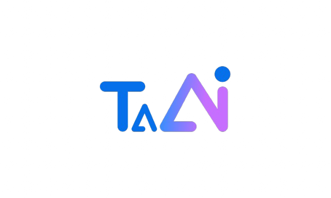

<!DOCTYPE html>
<html lang="en">
<head>
<meta charset="UTF-8">
<meta name="viewport" content="width=device-width, initial-scale=1.0, viewport-fit=cover">
<meta name="theme-color" content="#0d0a24">
<link rel="icon" type="image/png" sizes="16x16" href="/favicon-16.png">
<link rel="icon" type="image/png" sizes="32x32" href="/favicon-32.png">
<link rel="icon" href="/favicon.ico?v=6" sizes="any">
<link rel="manifest" href="/tracker.webmanifest">
<link rel="apple-touch-icon" href="/apple-touch-icon.png">
<meta name="apple-mobile-web-app-capable" content="yes">
<meta name="mobile-web-app-capable" content="yes">
<meta name="apple-mobile-web-app-title" content="TAAI Focus">
<meta name="apple-mobile-web-app-status-bar-style" content="black-translucent">
<title>My Progress | TAAI GATE DA 2027</title>
<meta name="description" content="Track your daily GATE DA 2027 study schedule and mark tasks complete as you go.">
<link rel="preconnect" href="https://fonts.googleapis.com">
<link rel="preconnect" href="https://fonts.gstatic.com" crossorigin>
<link rel="preload" as="style" href="https://fonts.googleapis.com/css2?family=Poppins:wght@400;500;600;700&family=Inter:wght@500;600;700&family=Saira:wght@800;900&display=swap" onload="this.onload=null;this.rel='stylesheet'">
<noscript><link href="https://fonts.googleapis.com/css2?family=Poppins:wght@400;500;600;700&family=Inter:wght@500;600;700&family=Saira:wght@800;900&display=swap" rel="stylesheet"></noscript>
<script defer src="https://unpkg.com/react@18.3.1/umd/react.production.min.js" crossorigin="anonymous"></script>
<script defer src="https://unpkg.com/react-dom@18.3.1/umd/react-dom.production.min.js" crossorigin="anonymous"></script>
<script defer src="https://unpkg.com/@babel/standalone@7.29.0/babel.min.js" crossorigin="anonymous"></script>
<style>
  :root {
    --bg: #17171b; --bg-soft: #1b1b20;
    --ink: #F2F2F5; --ink-dim: #B8B8C4; --ink-soft: #8E8EA0;
    --line: rgba(255,255,255,0.09); --card: #1e1e24;
    --purple: #A78BFA; --purple-soft: rgba(139,92,246,0.2);
    --green: #4ade80; --green-soft: rgba(74,222,128,0.14);
    --amber: #fbbf24; --amber-soft: rgba(251,191,36,0.14);
    --red: #f87171; --red-soft: rgba(248,113,113,0.14);
    --radius-md: 18px; --radius-lg: 26px;
    --shadow-sm: 0 1px 0 rgba(0,0,0,0.14), 0 2px 6px rgba(0,0,0,0.14);
    --shadow-md: 0 2px 0 rgba(0,0,0,0.1), 0 12px 32px rgba(0,0,0,0.3);
    --font-body: 'Poppins', ui-sans-serif, system-ui, sans-serif;
    --font-nav: 'Inter', ui-sans-serif, system-ui, sans-serif;
  }
  * { box-sizing: border-box; margin: 0; padding: 0; }
  html { -webkit-text-size-adjust: 100%; scroll-behavior: smooth; }
  body { font-family: var(--font-body); background: var(--bg-soft); color: var(--ink); line-height: 1.5; -webkit-font-smoothing: antialiased; }
  a { color: inherit; }

  /* Scroll progress + back-to-top — same pattern as the rest of the site (blog.css) */
  .scroll-progress { position: fixed; top: 0; left: 0; z-index: 100; height: 3px; background: linear-gradient(90deg, var(--pink, #FF7FB7), var(--purple)); pointer-events: none; transition: width 120ms linear; }
  .back-to-top { position: fixed; bottom: 24px; right: 24px; z-index: 90; width: 50px; height: 50px; border-radius: 50%; background: linear-gradient(135deg, #0d9488, #0891b2); color: #fff; border: none; cursor: pointer; display: grid; place-items: center; box-shadow: 0 4px 16px rgba(8,145,178,0.45); opacity: 0; transform: translateY(12px) scale(0.88); transition: opacity .28s ease, transform .4s cubic-bezier(.34,1.56,.64,1), box-shadow .2s; pointer-events: none; }
  .back-to-top.visible { opacity: 1; transform: translateY(0) scale(1); pointer-events: auto; transition-delay: 180ms; }
  .back-to-top:hover { box-shadow: 0 6px 28px rgba(8,145,178,0.6); transform: translateY(-2px) scale(1.06); transition-delay: 0ms; }
  .back-to-top:active { transform: scale(0.93); }

  /* Fade-in reveal on scroll — same easing/timing as the rest of the site */
  .fade-in { opacity: 0; transform: translateY(20px) scale(0.97); transition: opacity .7s cubic-bezier(.34,1.1,.64,1), transform .7s cubic-bezier(.34,1.1,.64,1); }
  .fade-in.visible { opacity: 1; transform: translateY(0) scale(1); }

  /* Site-wide nav, ported verbatim from index.html/gate-da-courses.html etc. so
     this page matches the rest of the site instead of the old bespoke minimal
     header. The nav was designed for the site's light theme, so its colors are
     re-pinned to the same light-theme values (not this page's dark-theme
     --ink/--purple/etc) scoped to #nav-root only — everything below the nav
     keeps using this page's own dark palette untouched. */
  #nav-root {
    --ink: #14102B; --ink-dim: #4A4270; --ink-soft: #857CAE;
    --line: #ECE6F8; --purple: #8B5CF6;
  }
  .nav {
    position: fixed; top: 0; left: 0; right: 0; z-index: 50;
    background: rgba(255,255,255,0.55);
    -webkit-backdrop-filter: saturate(180%) blur(20px);
    backdrop-filter: saturate(180%) blur(20px);
    border-bottom: 1px solid var(--line);
    overflow: visible;
  }
  .nav-spacer { height: 86px; }
  .nav.menu-open { background: rgba(248,246,255,0.82); }
  .nav-inner { position: relative; z-index: 1; display: flex; align-items: center; justify-content: space-between; gap: clamp(14px, 1.6vw, 28px); height: 86px; padding: 0 32px 0 20px; overflow: visible; }
  /* transform lives on the inner svg/img, not .nav-logo itself (2026-09-08
     fix, "the logos move jitterily on hover") — putting it directly on the
     hovered element meant the hover box moved out from under a cursor
     resting near its edge, flickering hover on/off rapidly. Hover
     detection now stays on the never-moving .nav-logo anchor; only the
     inner logo visually lifts. Same fix applied to every page sharing this
     ported-verbatim nav component, not just this one. */
  .nav-logo { display: flex; align-items: center; text-decoration: none; transition: opacity .22s ease; }
  .nav-logo svg, .nav-logo img { width: 180px; height: auto; filter: drop-shadow(0 0 10px rgba(255,255,255,0.4)) drop-shadow(0 0 28px rgba(255,255,255,0.18)) drop-shadow(0 0 60px rgba(255,255,255,0.09)); transition: transform .22s ease-out; }
  .nav-logo:hover { opacity: 0.82; }
  .nav-logo:hover svg, .nav-logo:hover img { transform: translateY(-2px); }
  .nav-logo:active { opacity: 1; }
  .nav-logo:active svg, .nav-logo:active img { transform: translateY(1px); transition-duration: .08s; }
  @media (hover: hover) {
    .nav-logo { position: relative; }
    .nav-logo::after { content: 'Home'; position: absolute; bottom: -34px; left: 50%; transform: translateX(-50%) translateY(8px) scale(0.88); font-size: 11.5px; font-weight: 700; letter-spacing: .07em; text-transform: uppercase; color: var(--purple); background: linear-gradient(135deg, rgba(249,247,255,0.97), rgba(241,237,255,0.97)); backdrop-filter: blur(14px); -webkit-backdrop-filter: blur(14px); border: 1px solid rgba(139,92,246,0.22); border-radius: 20px; padding: 4px 13px; opacity: 0; pointer-events: none; transition: opacity .18s ease, transform .24s cubic-bezier(.34,1.15,.64,1); white-space: nowrap; box-shadow: 0 4px 18px rgba(139,92,246,0.13), 0 1px 4px rgba(0,0,0,0.05); }
    .nav-logo:hover::after { opacity: 1; transform: translateX(-50%) translateY(0) scale(1); }
  }
  /* gap is fluid (clamp), not a fixed 36px — this is the actual fix for
     "will this same overflow bug come back": a hardcoded gap gives zero
     slack the moment the nav grows even slightly (one more link, a
     longer label, a wider button), so the exact viewport width where it
     stops fitting silently shifts and the breakpoint below goes stale
     again. Shrinking smoothly as the viewport narrows means the nav
     absorbs a reasonable amount of future growth on its own, instead of
     needing this breakpoint re-measured and bumped every time. */
  .nav-links { display: flex; gap: clamp(18px, 2.2vw, 36px); font-size: 13px; font-weight: 600; letter-spacing: .08em; text-transform: uppercase; font-family: var(--font-nav); position: relative;}
  .nav-links a, .nav-dropdown-wrap > span { color: var(--ink-dim); text-decoration: none; transition: color .2s, transform .3s cubic-bezier(.34,1.1,.64,1); position: relative; z-index: 1; cursor: pointer; display: inline-block; white-space: nowrap; }
  .nav-links a::after { content: ''; position: absolute; inset: -14px -10px; z-index: 0; }
  .nav-links a:hover, .nav-links a.active { color: var(--purple); transform: scale(1.08) translateY(-1px); }
  .nav-pill {
    position: absolute; top: 50%; transform: translateY(-50%);
    height: 34px; border-radius: 10px; pointer-events: none; z-index: 0;
    overflow: hidden;
    background: linear-gradient(150deg, rgba(255,255,255,0.36) 0%, rgba(180,155,255,0.14) 40%, rgba(139,92,246,0.10) 68%, rgba(255,255,255,0.24) 100%);
    background-size: 300% 300%;
    border: 1px solid rgba(255,255,255,0.55);
    backdrop-filter: blur(14px) saturate(200%) brightness(1.05);
    -webkit-backdrop-filter: blur(14px) saturate(200%) brightness(1.05);
    box-shadow: 0 2px 12px rgba(139,92,246,0.10), inset 0 1.5px 0 rgba(255,255,255,0.82), inset 0 -1px 0 rgba(100,80,200,0.08), inset 1px 0 0 rgba(255,255,255,0.32), inset -1px 0 0 rgba(255,255,255,0.32);
    animation: water-flow 4s ease-in-out infinite;
    transition: left .3s cubic-bezier(0.34,1.2,0.64,1), width .28s cubic-bezier(0.34,1.15,0.64,1), opacity .2s ease;
  }
  .nav-pill::before { content: ''; position: absolute; inset: 0; border-radius: inherit; background: linear-gradient(125deg, rgba(255,255,255,0.62) 0%, rgba(255,255,255,0.0) 52%); animation: glass-shine 5s ease-in-out infinite; pointer-events: none; }
  @keyframes water-flow { 0%, 100% { background-position: 0% 50%; } 50% { background-position: 100% 50%; } }
  @keyframes glass-shine { 0%, 100% { opacity: 1; transform: translateX(0); } 50% { opacity: 0.35; transform: translateX(10px); } }
  .nav-dropdown-wrap { position: relative; display: flex; align-items: center; z-index: 100; }
  .nav-dropdown { position: absolute; top: 100%; left: max(-20px, calc(50% - 105px)); transform: translateY(-8px) scaleY(0.9); transform-origin: top center; min-width: 210px; padding: 10px 6px 6px; background: rgba(248,246,255,0.97); backdrop-filter: blur(20px); -webkit-backdrop-filter: blur(20px); border: 1px solid rgba(139,92,246,0.16); border-radius: 14px; box-shadow: 0 8px 32px rgba(20,16,43,0.12), 0 2px 8px rgba(139,92,246,0.08); opacity: 0; pointer-events: none; transition: opacity .14s ease, transform .26s cubic-bezier(.34,1.56,.64,1); z-index: 150; }
  .nav-dropdown::before { content: ''; position: absolute; top: -18px; left: 0; right: 0; height: 18px; }
  .nav-dropdown-wrap:hover .nav-dropdown { opacity: 1; transform: translateY(12px) scaleY(1); pointer-events: auto; }
  .nav-dd-item::before { content: ''; position: absolute; left: 12px; top: 50%; transform: translateY(-50%); width: 4px; height: 4px; border-radius: 50%; background: var(--purple); opacity: 0.5; transition: opacity .15s ease, transform .2s cubic-bezier(.34,1.56,.64,1); }
  .nav-dd-item:hover::before { opacity: 1; transform: translateY(-50%) scale(1.3); }
  .nav-dd-item { display: flex; align-items: center; gap: 0; padding: 9px 12px 9px 26px; border-radius: 9px; text-decoration: none; color: var(--ink-dim); font-size: 11.5px; font-weight: 600; letter-spacing: .07em; text-transform: uppercase; white-space: nowrap; position: relative; opacity: 0; transform: translateY(5px); font-family: var(--font-nav); transition: background .14s ease, color .14s ease, opacity .13s ease, transform .13s ease; }
  .nav-dd-item:hover { background: linear-gradient(90deg, rgba(139,92,246,0.14) 0%, rgba(109,40,217,0.05) 100%); color: var(--purple); }
  .nav-dropdown-wrap:hover .nav-dd-item { opacity: 1; transform: translateY(0); transition: background .14s ease, color .14s ease, opacity .22s cubic-bezier(.34,1.56,.64,1), transform .28s cubic-bezier(.34,1.56,.64,1); }
  .nav-dropdown-wrap:hover .nav-dd-item:nth-child(1) { transition-delay: .04s; }
  .nav-dropdown-wrap:hover .nav-dd-item:nth-child(3) { transition-delay: .08s; }
  .nav-dropdown-wrap:hover .nav-dd-item:nth-child(5) { transition-delay: .11s; }
  .nav-dd-divider { height: 1px; background: rgba(139,92,246,0.18); margin: 2px 10px; opacity: 0; transition: opacity .12s ease; }
  .nav-dropdown-wrap:hover .nav-dd-divider { opacity: 1; }
  .nav-dropdown-wrap:hover .nav-dd-divider:nth-child(2) { transition-delay: .05s; }
  .nav-dropdown-wrap:hover .nav-dd-divider:nth-child(4) { transition-delay: .095s; }
  .nav-cta { display: flex; gap: 10px; align-items: center; }
  .btn-nav-signin { display: inline-flex; align-items: center; padding: 12px 28px; border-radius: 999px; font-size: 14px; font-weight: 600; text-decoration: none; cursor: pointer; background: #FFFFFF; color: var(--ink); border: 1px solid rgba(139,92,246,0.14); box-shadow: 0 3px 10px rgba(139,92,246,0.14), 0 1px 3px rgba(0,0,0,0.04); transition: box-shadow .25s ease, transform .32s cubic-bezier(.34,1.1,.64,1); white-space: nowrap; }
  .btn-nav-signin:hover { transform: scale(1.05) translateY(-1px); box-shadow: 0 6px 18px rgba(139,92,246,0.2), 0 2px 5px rgba(0,0,0,0.06); }
  .btn-nav-signin:active { transform: scale(0.97); box-shadow: inset 0 2px 6px rgba(139,92,246,0.16); }
  .btn-nav-signin.btn-swap { justify-content: center; width: 106px; margin-left: 0; position: relative; overflow: hidden; transition: box-shadow .25s ease, transform .32s cubic-bezier(.34,1.1,.64,1), width .4s ease, margin-left .4s ease, color .4s ease, border-color .4s ease; }
  .btn-nav-signin.btn-swap::after { content: ''; position: absolute; inset: 0; border-radius: 999px; background: linear-gradient(135deg, #FF416C 0%, #FF0000 55%, #CC0022 100%); opacity: 0; transition: opacity .4s ease; z-index: 0; pointer-events: none; }
  .btn-nav-signin.btn-swap .swap-default,
  .btn-nav-signin.btn-swap .swap-hover { display: block; transition: transform .32s cubic-bezier(.16,1,.3,1), opacity .24s ease; }
  .btn-nav-signin.btn-swap .swap-default { position: relative; z-index: 1; }
  .btn-nav-signin.btn-swap .swap-hover { position: absolute; inset: 0; display: flex; align-items: center; justify-content: center; padding: inherit; box-sizing: border-box; z-index: 1; }
  .btn-nav-signin.btn-swap.signin-active { width: 128px; margin-left: -22px; border-color: transparent; color: #fff; box-shadow: 0 8px 28px rgba(255,0,0,0.38), 0 2px 8px rgba(255,65,108,0.22); transition: box-shadow .25s ease, transform .32s cubic-bezier(.34,1.1,.64,1), width .3s cubic-bezier(.34,1.1,.64,1), margin-left .3s cubic-bezier(.34,1.1,.64,1), color .2s ease, border-color .2s ease; }
  .btn-nav-signin.btn-swap.signin-active::after { opacity: 1; transition: opacity .2s ease; }
  .btn-nav-signup { display: inline-flex; align-items: center; padding: 12px 28px; border-radius: 999px; font-size: 14px; font-weight: 600; text-decoration: none; cursor: pointer; background: linear-gradient(160deg, #1d1748, var(--ink)); color: #fff; border: none; box-shadow: 6px 6px 16px rgba(20,16,43,0.45), -4px -4px 14px rgba(139,92,246,0.25), inset 0 1px 1px rgba(255,255,255,0.08); transition: box-shadow .25s ease, transform .32s cubic-bezier(.34,1.1,.64,1); white-space: nowrap; }
  .btn-nav-signup:hover { transform: scale(1.05) translateY(-1px); box-shadow: 8px 8px 20px rgba(20,16,43,0.5), -5px -5px 16px rgba(139,92,246,0.35), inset 0 1px 1px rgba(255,255,255,0.12); }
  .btn-nav-signup:active { transform: scale(0.97); box-shadow: inset 4px 4px 10px rgba(0,0,0,0.5), inset -3px -3px 8px rgba(139,92,246,0.15); }
  .btn-nav-contact { font-size: 14px; font-weight: 500; color: var(--ink-dim); text-decoration: none; padding: 10px 20px; border-radius: 8px; background: none; border: none; box-shadow: none; transition: color .2s, transform .32s cubic-bezier(.34,1.1,.64,1), background .2s; white-space: nowrap; }
  .btn-nav-contact:hover { color: var(--purple); background: rgba(139,92,246,0.07); transform: scale(1.06) translateY(-1px); }
  .phone-icon { display: inline-flex; align-items: center; margin-right: 5px; transform-origin: 50% 55%; }
  .btn-nav-contact:hover .phone-icon { animation: phone-ring 0.52s ease-in-out; }
  .nav-cta .btn-nav-contact { position: relative; overflow: hidden; }
  .nav-cta .btn-nav-contact::before { content: ''; position: absolute; inset: 0; background: linear-gradient(108deg, transparent 20%, rgba(255,255,255,0.42) 48%, rgba(210,195,255,0.25) 56%, transparent 74%); transform: translateX(-120%) skewX(-12deg); pointer-events: none; border-radius: inherit; transition: none; }
  .nav-cta .btn-nav-contact:hover::before { transform: translateX(220%) skewX(-12deg); transition: transform .52s cubic-bezier(.2,.8,.4,1); }
  @keyframes phone-ring { 0%,100% { transform: rotate(0); } 12% { transform: rotate(-22deg); } 28% { transform: rotate(18deg); } 44% { transform: rotate(-12deg); } 60% { transform: rotate(8deg); } 76% { transform: rotate(-4deg); } 90% { transform: rotate(2deg); } }
  .menu-overlay { display: none; }
  @media (max-width: 768px) {
    .menu-overlay { display: block; position: fixed; inset: 0; z-index: 48; background: rgba(14,10,35,0.52); -webkit-backdrop-filter: blur(8px); backdrop-filter: blur(8px); opacity: 0; pointer-events: none; transition: opacity .3s ease; }
    .menu-overlay.open { opacity: 1; pointer-events: auto; }
  }
  .nav-hamburger { display: none; flex-direction: column; gap: 5px; align-items: center; justify-content: center; width: 40px; height: 40px; border: none; background: none; cursor: pointer; border-radius: 8px; transition: background .2s; flex-shrink: 0; padding: 0; }
  .nav-hamburger:hover { background: rgba(139,92,246,0.08); }
  .nav-hamburger span { display: block; width: 22px; height: 2px; border-radius: 2px; background: var(--ink); transition: transform .3s cubic-bezier(.4,0,.2,1), opacity .2s; }
  .nav-hamburger.open span:nth-child(1) { transform: translateY(7px) rotate(45deg); }
  .nav-hamburger.open span:nth-child(2) { opacity: 0; transform: scaleX(0); }
  .nav-hamburger.open span:nth-child(3) { transform: translateY(-7px) rotate(-45deg); }
  .mobile-menu { position: fixed; top: 86px; left: 0; right: 0; z-index: 49; background: rgba(248,246,255,0.72); backdrop-filter: blur(28px); -webkit-backdrop-filter: blur(28px); border-bottom: 1px solid rgba(139,92,246,0.15); padding: 8px 12px 20px; display: flex; flex-direction: column; gap: 2px; transform: translateY(-10px); opacity: 0; pointer-events: none; transition: transform .3s cubic-bezier(.4,0,.2,1), opacity .22s ease; box-shadow: 0 8px 40px rgba(20,16,43,0.12); overflow: hidden; }
    .mobile-menu.open { transform: translateY(0); opacity: 1; pointer-events: auto; }
  @keyframes menuItemIn { from { opacity: 0; transform: translateX(-14px); } to { opacity: 1; transform: translateX(0); } }
  .mobile-menu-link { font-family: var(--font-nav); display: flex; align-items: center; gap: 11px; padding: 12px 14px; border-radius: 12px; font-size: 14px; font-weight: 700; color: var(--ink-dim); text-decoration: none; letter-spacing: .05em; text-transform: uppercase; transition: background .18s, color .18s, transform .12s ease; position: relative; }
  .mobile-menu.open .mobile-menu-link { animation: menuItemIn .3s both cubic-bezier(.4,0,.2,1); }
  .mobile-menu-link:active { transform: scale(0.97) !important; }
  .mobile-menu-link:hover { background: rgba(139,92,246,0.08); color: var(--purple); }
  .mobile-menu-link.active { background: rgba(139,92,246,0.1); color: var(--purple); }
  .mobile-menu-link.active::before { content: ''; position: absolute; left: 0; top: 22%; bottom: 22%; width: 3px; border-radius: 2px; background: var(--purple); }
  .mobile-menu-link-icon { opacity: 0.5; flex-shrink: 0; transition: opacity .18s; display: flex; align-items: center; }
  .mobile-menu-link.active .mobile-menu-link-icon, .mobile-menu-link:hover .mobile-menu-link-icon { opacity: 1; }
  .mobile-menu-link-label { flex: 1; }
  .mobile-menu-link-chevron { opacity: 0.22; flex-shrink: 0; display: flex; align-items: center; transition: opacity .18s, transform .2s; }
  .mobile-menu-link:hover .mobile-menu-link-chevron, .mobile-menu-link.active .mobile-menu-link-chevron { opacity: 0.65; transform: translateX(3px); }
  .mobile-menu-divider { height: 1px; background: linear-gradient(90deg, rgba(139,92,246,0.25), rgba(139,92,246,0.06), transparent); margin: 8px 4px; }
  .mobile-menu-actions { display: flex; flex-direction: row; gap: 10px; padding-top: 4px; }
  .mobile-menu.open .mobile-menu-divider { animation: menuItemIn .25s both cubic-bezier(.4,0,.2,1); animation-delay: .22s; }
  .mobile-menu.open .mobile-menu-contact { animation: menuItemIn .3s both cubic-bezier(.4,0,.2,1); animation-delay: .40s; }
  @keyframes menuBtnIn { from { opacity: 0; transform: translateY(18px) scale(0.94); } to { opacity: 1; transform: translateY(0) scale(1); } }
  .mobile-menu.open .mobile-menu-actions .btn-nav-signin { animation: menuBtnIn .42s both cubic-bezier(.34,1.15,.64,1); animation-delay: .26s; }
  .mobile-menu.open .mobile-menu-actions .btn-nav-signup { animation: menuBtnIn .42s both cubic-bezier(.34,1.15,.64,1); animation-delay: .34s; }
  .mobile-menu-actions .btn-nav-signin { display: flex; justify-content: center; align-items: center; gap: 8px; flex: 1; border-radius: 14px; padding: 15px 14px; font-size: 15px; font-weight: 600; background: rgba(139,92,246,0.07); color: var(--purple); border: 1.5px solid rgba(139,92,246,0.22); transition: background .16s, border-color .16s, transform .16s cubic-bezier(.34,1.4,.64,1), box-shadow .16s; }
  .mobile-menu-actions .btn-nav-signin:active { transform: scale(0.93); background: rgba(139,92,246,0.16); border-color: rgba(139,92,246,0.55); box-shadow: 0 0 0 4px rgba(139,92,246,0.13); }
  .mobile-menu-actions .btn-nav-signup { display: flex; justify-content: center; align-items: center; gap: 8px; flex: 1; border-radius: 14px; padding: 15px 14px; font-size: 15px; font-weight: 600; background: linear-gradient(135deg, #9333ea, #7c3aed, #6d28d9); color: #fff; border: 1px solid rgba(255,255,255,0.15); box-shadow: 0 4px 24px rgba(109,40,217,0.42), inset 0 1px 0 rgba(255,255,255,0.2); transition: transform .16s cubic-bezier(.34,1.4,.64,1), box-shadow .16s, filter .16s; }
  .mobile-menu-actions .btn-nav-signup:active { transform: scale(0.93); filter: brightness(1.12); box-shadow: 0 2px 10px rgba(109,40,217,0.3), inset 0 1px 0 rgba(255,255,255,0.2); }
  .mobile-btn-arrow { display: flex; align-items: center; transition: transform .18s cubic-bezier(.34,1.4,.64,1); }
  .mobile-menu-actions .btn-nav-signin:active .mobile-btn-arrow, .mobile-menu-actions .btn-nav-signup:active .mobile-btn-arrow { transform: translateX(6px); }
  .mobile-menu-contact { display: flex; align-items: center; justify-content: center; gap: 7px; margin-top: 10px; padding: 13px 16px; font-size: 13px; font-weight: 600; color: var(--ink-dim); text-decoration: none; border-radius: 10px; transition: color .18s, background .18s; letter-spacing: .04em; text-transform: uppercase; }
  .mobile-menu-contact:hover { color: var(--purple); background: rgba(139,92,246,0.06); }
  /* 1300px, not 1024px — iPad Air (1180px landscape) and iPad Pro 11"
     (1194px landscape) both exceed 1024px, so they used to get the full
     desktop nav (links + Sign In/Up + Contact Us) instead of the
     hamburger menu, but the desktop nav's actual content doesn't fit
     until ~1290px wide — Contact Us rendered ~85-100px past the right
     edge, cut off almost entirely. Measured directly (a real viewport
     sweep, not guessed): the nav's rightmost edge stops overflowing at
     1290px, so 1300px gives a small safety margin. Only the iPad Pro
     12.9" (1366px landscape) is wide enough to keep the desktop nav. */
  @media (max-width: 1024px), (max-width: 1300px) and (pointer: coarse) { .nav-hamburger { display: flex; } .nav-cta { display: none; } .nav-links { display: none; } .btn-nav-contact { display: none; } .nav-inner { height: 64px; padding: 0 14px; position: relative; justify-content: flex-end; } .mobile-menu { top: 64px; } .nav-spacer { height: 64px; } .nav-logo { position: absolute; left: 50%; transform: translateX(-50%); } .nav-logo svg, .nav-logo img { width: 150px; height: auto; filter: drop-shadow(0 0 14px rgba(255,255,255,0.22)) drop-shadow(0 0 36px rgba(255,255,255,0.12)) drop-shadow(0 0 72px rgba(255,255,255,0.07)); } .nav-hamburger span { background: var(--purple); } }

  /* Pared back 2026-09-08 ("too vibe coded" — dot-grid + 3 saturated,
     fast-bouncing orbs), re-upped the same day ("too boring" — the
     1-orb/near-zero-opacity version overcorrected), then the top-right orb's
     color swapped from purple to pink ("let's not do purple anymore") — the
     page already leans on purple heavily elsewhere (nav, buttons, the
     streak-hero/today-card corner blobs, most gradient text), so the ambient
     glow reads calmer picking up the other end of the site's own pink→purple→
     blue brand gradient instead of doubling down on the same hue. Landed on 2
     orbs (dropped the smallest/pink-from-the-original-3 one only — that pink
     is back now anyway, just relocated to orb-1), opacity close to the
     original, motion slowed from the original's 22-32s/~140px bounce to a
     calmer 34-40s/~80px drift — still visibly alive, not the fast synced
     bounce that read as templated, and no dot-grid. Diagonal placement
     (top-right + bottom-left) gives the page real depth at a glance instead
     of being flat until an orb happens to drift past. */
  body { position: relative; overflow-x: hidden; }
  .bg-orbs { position: fixed; inset: 0; overflow: hidden; pointer-events: none; z-index: 0; }
  .orb { position: absolute; border-radius: 50%; will-change: transform; }
  .orb-1 { top: -160px; right: -120px; width: 520px; height: 520px; background: radial-gradient(circle, rgba(255,127,183,0.13) 0%, transparent 68%); animation: orb-fly-1 34s ease-in-out infinite; }
  .orb-2 { bottom: -160px; left: -120px; width: 460px; height: 460px; background: radial-gradient(circle, rgba(77,139,255,0.10) 0%, transparent 68%); animation: orb-fly-2 40s ease-in-out infinite; }
  @keyframes orb-fly-1 {
    0%, 100% { transform: translate(0, 0) scale(1); }
    50%      { transform: translate(-45px, 80px) scale(1.08); }
  }
  @keyframes orb-fly-2 {
    0%, 100% { transform: translate(0, 0) scale(1); }
    50%      { transform: translate(50px, -70px) scale(1.06); }
  }
  @media (prefers-reduced-motion: reduce) { .orb { animation: none; } }
  .wrap, .scroll-progress { position: relative; z-index: 1; }

  .wrap { max-width: 760px; margin: 0 auto; padding: 28px 18px 80px; }

  /* Task view only on mobile and iPad portrait (up to 1024px CSS width,
     the largest common iPad portrait size) — the heatmap/subject-progress
     side column is hidden there entirely, not just stacked below, so
     small and portrait-tablet screens show just the checklist. It
     reappears as a real sidebar next to the day list from iPad landscape
     widths up. */
  .page-grid { display: grid; grid-template-columns: 1fr; gap: 0; }
  .side-col { display: none; }
  @media (min-width: 1081px) {
    .wrap { max-width: 1060px; }
    .page-grid { grid-template-columns: 1fr 300px; gap: 48px; align-items: start; }
    .side-col { display: block; margin-top: 0; position: sticky; top: 24px; }
  }

  #app { min-height: 40vh; }

  .center-note { text-align: center; color: var(--ink-soft); font-size: 14px; padding: 60px 0; }
  /* Loading-state skeleton (replaces the old plain "Loading your
     roadmap..." text) — a rough approximation of this page's real layout
     (streak/champions card, month nav, today card, week rows, heatmap +
     subject cards), not a pixel-exact one, since its only job is to fill
     the screen with something that reads as "content is coming" rather
     than a blank page or a lone sentence. Rendered both here (the page's
     very first paint, before progress.js has even run) and by
     loadingSkeletonHtml() in progress.js (every loadMonth() call after
     that, including month navigation) — kept as two copies, same
     established tradeoff as this file's other small hand-duplicated
     pairs, since generating it via JS wouldn't help the pre-JS paint. */
  .skeleton-wrap { display: flex; flex-direction: column; gap: 14px; }
  /* A translucent fill + a hairline border on dark is exactly the
     frosted-glass look this page's card system was deliberately converted
     AWAY from (see the glassmorphic-to-minimalist entry in CLAUDE.md) —
     the previous pass fixed contrast/visibility but kept that same
     "glass pane" recipe (border + rgba overlay), which read as glassy and
     generic rather than as this site's own. Rebuilt as a genuinely solid,
     opaque block (no border, no transparency in the resting fill) — flat,
     matching the rest of the page's minimalist idiom — with the shimmer
     itself tinted the site's own brand purple instead of plain white, so
     it reads as branded texture rather than a generic loading-library
     effect. */
  .skeleton-block { border-radius: var(--radius-md); background-color: #2a2a33; background-image: linear-gradient(100deg, transparent 25%, rgba(167,139,250,0.32) 50%, transparent 75%); background-repeat: no-repeat; background-size: 55% 100%; background-position: -55% 0; animation: skeleton-shimmer 1.7s ease-in-out infinite; }
  @keyframes skeleton-shimmer { to { background-position: 220% 0; } }
  @media (prefers-reduced-motion: reduce) { .skeleton-block { animation: none; } }
  .skeleton-hero { height: 168px; }
  /* Explicit width, not max-width + stretch — margin:auto on a flex
     child's cross axis (this is a column flex, so left/right margins are
     the cross axis) opts that child OUT of stretch per the flex spec, so
     it was shrinking to its own empty content + border (a literal 2px
     sliver) instead of ever reaching 260px. A real, confirmed bug, not
     just a look-and-feel tweak. */
  .skeleton-nav { width: 260px; height: 40px; margin: 0 auto; border-radius: 999px; }
  .skeleton-card { height: 130px; }
  .skeleton-row { height: 46px; }
  /* A little width variation per row (rather than every row identically
     full-width) reads as more like real content of varying length —
     applied to specific rows via these modifiers, not nth-child, since
     .skeleton-week-label sits as an earlier sibling in the same group and
     would throw off a pure position-based count. */
  .skeleton-row--md { max-width: 82%; }
  .skeleton-row--sm { max-width: 60%; }
  .skeleton-week-label { height: 20px; max-width: 140px; border-radius: 6px; }
  .skeleton-week-group { display: flex; flex-direction: column; gap: 8px; margin-bottom: 18px; }
  .skeleton-grid { display: grid; grid-template-columns: 1fr 300px; gap: 20px; align-items: start; }
  @media (max-width: 900px) { .skeleton-grid { grid-template-columns: 1fr; } }

  /* Registration form */
  .reg-card { background: var(--card); border: 1px solid var(--line); border-radius: var(--radius-lg); padding: 36px 28px; max-width: 420px; margin: 40px auto; text-align: center; }
  .reg-card h1 { font-family: var(--font-nav); font-size: 20px; font-weight: 700; margin-bottom: 8px; }
  .reg-card p { color: var(--ink-soft); font-size: 14px; margin-bottom: 22px; }
  .reg-field { text-align: left; margin-bottom: 14px; }
  .reg-field label { display: block; font-family: var(--font-nav); font-size: 12px; font-weight: 600; text-transform: uppercase; letter-spacing: .04em; color: var(--ink-dim); margin-bottom: 6px; }
  .reg-field input { width: 100%; padding: 11px 14px; border: 1.5px solid var(--line); border-radius: 12px; font-family: var(--font-body); font-size: 14.5px; color: var(--ink); background: var(--bg-soft); }
  .reg-field input:focus { outline: none; border-color: var(--purple); background: var(--bg); }
  .btn-primary { width: 100%; padding: 14px; border: none; border-radius: 999px; background: linear-gradient(135deg,#FF7FB7,var(--purple),#4D8BFF); color: #fff; font-family: var(--font-nav); font-weight: 700; font-size: 14.5px; cursor: pointer; margin-top: 6px; box-shadow: 0 8px 28px rgba(139,92,246,0.4); transition: transform .28s cubic-bezier(.34,1.1,.64,1), box-shadow .22s; }
  .btn-primary:hover:not(:disabled) { transform: translateY(-3px); box-shadow: 0 14px 36px rgba(139,92,246,0.55); }
  .btn-primary:active:not(:disabled) { transform: scale(0.97); }
  .btn-primary:disabled { opacity: .6; cursor: default; transform: none; box-shadow: none; }
  .form-error { color: #f87171; font-size: 13px; margin-top: 10px; }
  .reg-cancel-link { display: block; width: 100%; text-align: center; background: none; border: none; color: var(--ink-soft); font-family: var(--font-nav); font-size: 12.5px; font-weight: 600; cursor: pointer; margin-top: 14px; padding: 0; transition: color .2s; }
  .reg-cancel-link:hover { color: var(--purple); }

  /* Header / stats */
  /* flex-start, not space-between — the batch picker now sits inline
     right after the h1 (see its own comment below), not pinned to the
     row's far edge, so it should sit right beside the title instead of
     drifting away from it as the row grows. */
  .roadmap-head { display: flex; align-items: center; justify-content: flex-start; flex-wrap: wrap; gap: 10px; margin-bottom: 4px; }
  /* "Join Discord" at the right of the identity row (progress.js). */
  .roadmap-sub-right { display: flex; align-items: center; gap: 10px; margin-left: auto; }
  /* Phones: when the Discord button wraps under the name/guest line, keep it left-aligned with that text instead of hanging off the right edge (2026-10-16) */
  @media (max-width: 600px) { .roadmap-sub-right { margin-left: 0; } }
  /* Phones: Join Discord on the left, Exit focus on the right edge as a
     matching outlined button (2026-11-20, "Exit focus is not properly
     placed": it used to float loosely beside Join Discord). */
  @media (max-width: 600px) {
    .roadmap-sub-right { width: 100%; justify-content: space-between; }
    .roadmap-sub-right .focus-toggle.active { display: inline-flex; align-items: center; height: 34px; box-sizing: border-box; padding: 0 12px; border-radius: 8px; border: 1px solid rgba(255,255,255,0.18); background: rgba(255,255,255,0.05); color: var(--ink-dim); font-size: 12px; letter-spacing: .03em; }
  }
  .discord-join { display: inline-flex; align-items: center; gap: 7px; padding: 6px 12px; border-radius: 8px; font-family: var(--font-nav); font-size: 13px; font-weight: 600; color: #C7CBFF; background: rgba(88,101,242,0.14); border: 1px solid rgba(88,101,242,0.38); text-decoration: none; transition: background-color .2s ease, border-color .2s ease, color .2s ease; white-space: nowrap; }
  .discord-join:hover { background: rgba(88,101,242,0.26); border-color: rgba(88,101,242,0.6); color: #fff; }
  .discord-join:focus-visible { outline: 2px solid #5865F2; outline-offset: 2px; }
  .roadmap-head h1 { font-family: var(--font-nav); font-size: 19px; font-weight: 700; }
  /* Screen-reader-only utility — for the batch picker's real <label>
     (see .batch-picker below), kept in the accessibility tree without
     taking any visual space, rather than display:none (which would drop
     it from the tree entirely and break the label/select association for
     assistive tech). Standard clip-based recipe, not project-specific. */
  .sr-only { position: absolute; width: 1px; height: 1px; padding: 0; margin: -1px; overflow: hidden; clip: rect(0,0,0,0); white-space: nowrap; border: 0; }
  /* Batch picker (see renderBatchPicker in progress.js) — a small bordered
     tag (icon + value) sitting inline right next to the h1 in
     .roadmap-head, not a separate block. Went through two rounds first:
     originally plain var(--ink-soft) label + bare select that blended
     into the page ("make the batch selector easily visible to the eye");
     then a bigger, bordered chip centered on its own line below the
     title, matching .exam-countdown's "small chip that must be noticed"
     idiom. That version was reported twice as not feeling right —
     screenshotting it side by side against this inline version made the
     actual problem visible: centered alone, it had nothing connecting it
     to its neighbors, just floating in the gap above the day-streak
     number regardless of how it was sized. Inline with the title (the
     same shape as a workspace/environment switcher beside a dashboard
     heading) reads as belonging to it instead. Still a real bordered/
     colored control (keeps the original visibility fix), just anchored
     rather than orphaned. Shared by guests (previewing,
     state.previewBatch) and registered students (scouting,
     effectiveScoutBatch()) — same control, different underlying label;
     picking here is always non-destructive for both (see
     .batch-scout-banner/.batch-migration-warning below for the one
     actually destructive action, reached only from there). Not a custom
     dropdown — still a real <select>, just tag-styled. */
  .batch-picker { position: relative; display: inline-flex; align-items: center; gap: 6px; background: var(--card); border: 1px solid var(--line); border-radius: 8px; padding: 4px 10px 4px 4px; flex-shrink: 0; color: var(--ink-dim); transition: border-color .15s ease, color .15s ease; }
  .batch-picker:hover { border-color: rgba(167,139,250,0.5); color: var(--ink); }
  .batch-picker:focus-within { outline: 2px solid var(--purple); outline-offset: 2px; }
  .batch-picker-text { font-family: var(--font-nav); font-size: 13px; font-weight: 600; }
  .batch-picker-chev { opacity: .7; }
  .batch-picker-icon { display: grid; place-items: center; width: 22px; height: 22px; border-radius: 6px; background: linear-gradient(135deg,rgba(255,127,183,0.16),rgba(139,92,246,0.16),rgba(77,139,255,0.16)); color: var(--purple); flex-shrink: 0; }
  .batch-picker-icon svg { width: 12px; height: 12px; }
  /* The real select covers the whole chip, invisible (16px font so iOS doesn't zoom on focus). */
  .batch-picker select { position: absolute; top: 0; left: 0; width: 100%; height: 100%; opacity: 0; cursor: pointer; font-size: 16px; border: none; margin: 0; padding: 0; -webkit-appearance: none; appearance: none; }
  /* A registered student currently scouting a batch other than their own
     real one (see renderBatchScoutBanner) — a plain, reassuring flat card
     (var(--card)/var(--line), the same idiom every other card on this
     page uses), deliberately NOT the --red destructive styling below —
     scouting itself has no consequence, only the button inside it does. */
  /* Scouting banner — icon badge, a title + one reassurance line, and the
     two actions on the right (wrapping under the text on narrow screens).
     Flat, same --card idiom as the rest of the page, with a faint purple
     tint only on the icon badge so it reads as "preview mode" at a glance
     without shouting. */
  .batch-scout-banner { display: flex; align-items: center; flex-wrap: wrap; gap: 14px 16px; background: var(--card); border: 1px solid var(--line); border-radius: 14px; padding: 14px 16px; margin-bottom: 18px; }
  .batch-scout-icon { flex-shrink: 0; width: 38px; height: 38px; border-radius: 10px; display: flex; align-items: center; justify-content: center; background: rgba(167,139,250,0.14); color: var(--purple); }
  .batch-scout-text { flex: 1 1 260px; min-width: 0; }
  .batch-scout-title { font-size: 14.5px; font-weight: 600; color: var(--ink-dim); line-height: 1.35; }
  .batch-scout-title strong { color: var(--ink); font-weight: 700; }
  .batch-scout-sub { font-size: 12.5px; color: var(--ink-soft); line-height: 1.45; margin-top: 2px; }
  .batch-scout-sub strong { color: var(--ink-dim); font-weight: 600; }
  .batch-scout-actions { display: flex; align-items: center; gap: 8px; flex-shrink: 0; margin-left: auto; }
  .batch-scout-back { display: inline-flex; align-items: center; height: 34px; padding: 0 16px; border-radius: 8px; background: var(--purple); border: none; color: #fff; font-family: inherit; font-size: 13px; font-weight: 600; white-space: nowrap; cursor: pointer; outline: none; transition: background-color .15s ease, box-shadow .15s ease; }
  .batch-scout-back:hover { background: rgba(167,139,250,0.9); }
  .batch-scout-back:focus-visible { box-shadow: 0 0 0 3px rgba(167,139,250,0.5); }
  @media (max-width: 560px) {
    .batch-scout-actions { width: 100%; margin-left: 0; }
    .batch-scout-actions button { flex: 1; justify-content: center; }
  }
  /* Restyled to shadcn/ui's real Button recipe (registry: @shadcn/button —
     pulled the actual source, not guessed) rather than this page's own
     pill treatment — a trial run, on request ("try shadcn once we will
     revert if we don't feel right"). shadcn's Button is pure CSS (only
     optional Radix Slot for asChild polymorphism, unused for a plain
     <button>), so this ports cleanly with zero new runtime dependency —
     unlike shadcn's Select/Dialog/etc., which are real Radix React
     components and would need a bundler this project deliberately
     doesn't have (see "Tech stack": no bundler, and this tracker page's
     own content is plain vanilla JS, not React at all). Scoped to these
     three buttons only, not a page-wide reskin — a small, self-contained,
     easily-revertible pilot. Ported values: rounded-md (8px, not this
     page's own 999px pill — shadcn never uses a full pill for a regular
     button), h-9/px-4 sizing, font-medium (not this page's heavier 700),
     a real focus-visible ring (shadcn's own accessibility default, which
     these buttons didn't have before), and hover states that shift the
     fill color itself (shadcn's hover:bg-X/90) instead of just fading the
     whole button's opacity. Colors mapped onto this page's existing
     tokens (--purple/--red/--card/--line) rather than shadcn's own
     default palette, since the brief is "try shadcn," not "re-theme the
     page" — shadcn's own docs describe swapping the CSS variables under
     its component recipes as the normal way to fit an existing brand. */
  .batch-scout-stick {
    display: inline-flex; align-items: center; justify-content: center; gap: 8px;
    height: 34px; padding: 0 16px; border-radius: 8px;
    background: transparent; border: 1px solid var(--line); color: var(--ink-dim);
    font-family: inherit; font-size: 13px; font-weight: 500; white-space: nowrap;
    cursor: pointer; outline: none; flex-shrink: 0;
    transition: background-color .15s ease, border-color .15s ease, color .15s ease, box-shadow .15s ease;
  }
  /* rgba, not a hand-picked hex — the real port of shadcn's own
     hover:bg-primary/90 is a literal 90%-opacity blend of the accent
     color, which lets CSS do the compositing correctly against whatever
     sits behind the button instead of a guessed flat color. */
  .batch-scout-stick:hover { background: rgba(255,255,255,0.04); border-color: rgba(255,255,255,0.18); color: var(--ink); }
  .batch-scout-stick:focus-visible { box-shadow: 0 0 0 3px rgba(167,139,250,0.5); }
  /* The destructive-migration confirmation (see
     renderBatchMigrationWarning) — a real --red border/background tint
     (the same token .pomo-gate-hint--urgent already uses), not just a
     plain card, since this is a genuinely irreversible action and should
     read as one at a glance, not blend in with an ordinary notice. */
  .batch-migration-warning { background: rgba(248,113,113,0.06); border: 1px solid rgba(248,113,113,0.32); border-radius: 14px; padding: 18px 20px; margin-bottom: 18px; }
  .batch-migration-warning p { font-size: 13px; color: var(--ink); line-height: 1.5; margin: 0 0 12px; }
  .batch-migration-head { display: flex; align-items: center; gap: 12px; margin-bottom: 14px; }
  .batch-migration-icon { width: 38px; height: 38px; border-radius: 10px; display: grid; place-items: center; flex-shrink: 0; color: var(--red); background: rgba(248,113,113,0.14); }
  .batch-migration-title { font-family: var(--font-nav); font-size: 16px; font-weight: 700; color: var(--ink); line-height: 1.3; }
  .batch-migration-sub { font-size: 12.5px; color: var(--ink-soft); margin-top: 2px; }
  .batch-migration-cols { display: grid; grid-template-columns: 1fr 1fr; gap: 10px; margin-bottom: 16px; }
  .batch-migration-col { border-radius: 10px; padding: 11px 13px; border: 1px solid var(--line); background: rgba(255,255,255,0.02); }
  .batch-migration-col--lose { border-color: rgba(248,113,113,0.25); background: rgba(248,113,113,0.05); }
  .batch-migration-col-title { font-size: 11.5px; font-weight: 700; letter-spacing: .05em; text-transform: uppercase; margin-bottom: 7px; color: var(--ink-soft); }
  .batch-migration-col--lose .batch-migration-col-title { color: var(--red); }
  .batch-migration-col--keep .batch-migration-col-title { color: var(--green); }
  .batch-migration-col ul { list-style: none; margin: 0; padding: 0; display: flex; flex-direction: column; gap: 5px; }
  .batch-migration-col li { font-size: 13px; color: var(--ink-dim); line-height: 1.4; padding-left: 14px; position: relative; }
  .batch-migration-col li::before { content: ''; position: absolute; left: 2px; top: .55em; width: 5px; height: 5px; border-radius: 50%; background: currentColor; opacity: .5; }
  .batch-migration-col--lose li::before { background: var(--red); opacity: .8; }
  .batch-migration-col--keep li::before { background: var(--green); opacity: .8; }
  .batch-migration-col b { color: var(--ink); font-weight: 700; }
  .batch-migration-actions { justify-content: flex-end; }
  .batch-migration-actions button { white-space: nowrap; }
  @media (max-width: 520px) { .batch-migration-cols { grid-template-columns: 1fr; } .batch-migration-actions { flex-direction: column-reverse; } .batch-migration-actions button { width: 100%; height: 40px; } }
  /* "+N credit earned" right after the ticked task's own text
     (refreshPlanProgress); pops in, holds, fades up. */
  .task-gain { display: inline-block; margin-left: 10px; vertical-align: 1px; white-space: nowrap; padding: 2px 9px; text-decoration: none; border-radius: 999px; font-family: var(--font-nav); font-size: 12px; font-weight: 800; color: #F5C451; background: rgba(245,196,81,0.12); pointer-events: none; animation: task-gain 1.9s cubic-bezier(.22,1,.36,1) forwards; }
  @keyframes task-gain { 0% { opacity: 0; transform: translateY(6px) scale(.9); } 15% { opacity: 1; transform: translateY(0) scale(1.06); } 25% { transform: scale(1); } 75% { opacity: 1; } 100% { opacity: 0; transform: translateY(-8px); } }
  /* Locked task rows while previewing another batch (isPreviewingOtherBatch). */
  .task-row.locked { cursor: not-allowed; }
  .task-row.locked input[type="checkbox"] { cursor: not-allowed; opacity: .4; }
  /* Higher specificity than the plain ".batch-migration-warning p" rule
     above, deliberately — not !important — so this actually wins rather
     than losing to that rule's own --ink color. */
  .batch-migration-warning p.batch-migration-error { color: var(--red); font-weight: 600; }
  .batch-migration-actions { display: flex; gap: 10px; flex-wrap: wrap; }
  /* shadcn's "outline" variant (real source, same trial as
     .batch-scout-stick above): border + a faint background tint, not
     bare/transparent — shadcn's own dark-mode value is dark:bg-input/30,
     approximated here since this page has no --input token. Hover
     deepens the tint (shadcn's hover:bg-accent) instead of only
     recoloring the border/text like the pill version did. */
  .batch-migration-cancel {
    display: inline-flex; align-items: center; justify-content: center; gap: 8px;
    height: 34px; padding: 0 16px; border-radius: 8px;
    background: rgba(255,255,255,0.03); border: 1px solid var(--line); color: var(--ink-soft);
    font-family: inherit; font-size: 13px; font-weight: 500; cursor: pointer; outline: none;
    transition: background-color .15s ease, color .15s ease, box-shadow .15s ease;
  }
  .batch-migration-cancel:hover { background: rgba(255,255,255,0.08); color: var(--ink); }
  .batch-migration-cancel:focus-visible { box-shadow: 0 0 0 3px rgba(255,255,255,0.15); }
  /* shadcn's "destructive" variant — same 90%-alpha-blend hover as the
     primary button above (hover:bg-destructive/90), not a flat opacity
     fade on the whole button. */
  .batch-migration-confirm {
    display: inline-flex; align-items: center; justify-content: center; gap: 8px;
    height: 34px; padding: 0 16px; border-radius: 8px;
    background: var(--red); border: none; color: #fff;
    font-family: inherit; font-size: 13px; font-weight: 500; cursor: pointer; outline: none;
    transition: background-color .15s ease, box-shadow .15s ease;
  }
  .batch-migration-confirm:hover { background: rgba(248,113,113,0.9); }
  .batch-migration-confirm:focus-visible { box-shadow: 0 0 0 3px rgba(248,113,113,0.4); }
  /* shadcn's disabled:pointer-events-none disabled:opacity-50 — real
     state this button actually has (progress.js disables it and swaps
     the label to "Switching…" while the migrate-batch request is in
     flight), which the old pill version never styled at all. */
  .batch-migration-confirm:disabled { pointer-events: none; opacity: .5; }
  .roadmap-sub { display: flex; align-items: center; justify-content: space-between; flex-wrap: wrap; gap: 10px; font-size: 13px; color: var(--ink-soft); margin-bottom: 18px; }
  .roadmap-sub-left button { background: none; border: none; color: var(--purple); font-family: inherit; font-size: 13px; font-weight: 600; cursor: pointer; padding: 0; text-decoration: underline; transition: opacity .2s; }
  .roadmap-sub-left button:hover:not(:disabled) { opacity: .7; }
  .roadmap-sub-left button:disabled { opacity: .35; cursor: not-allowed; text-decoration: none; }
  .rename-toggle-wrap { display: inline-block; }
  /* Lets a tap on a disabled Rename land on the wrapper, which shows why it is disabled (see setupRenameTooltip). */
  .rename-toggle-wrap #rename-toggle:disabled { pointer-events: none; }
  .rename-form { display: inline-flex; align-items: center; gap: 8px; flex-wrap: wrap; }
  .rename-form input { padding: 5px 10px; border: 1.5px solid var(--line); border-radius: 8px; font-family: var(--font-body); font-size: 13px; color: var(--ink); background: var(--bg-soft); width: 160px; }
  .rename-form input:focus { outline: none; border-color: var(--purple); background: var(--bg); }
  .rename-form button { background: none; border: none; font-family: inherit; font-size: 13px; font-weight: 600; cursor: pointer; padding: 0; text-decoration: underline; transition: opacity .2s; }
  .rename-form button:hover { opacity: .7; }
  .rename-form .rename-save { color: var(--purple); }
  .rename-form .rename-cancel { color: var(--ink-soft); }
  .rename-error { color: #f87171; font-size: 12.5px; width: 100%; }

  .focus-toggle-wrap { display: flex; justify-content: center; margin-bottom: 22px; }
  /* Focus Mode is desktop-only, same breakpoint as .side-col below —
     phone and iPad-portrait get the task checklist only. */
  /* Focus mode call-to-action bar (2026-10-08): full main-column width,
     a short explanation on the left, the big button on the right. Same
     flat card idiom as the rest of the page with a soft purple tint so it
     reads as the page's main action. Desktop only, like Focus Mode. */
  .focus-cta { display: flex; align-items: center; justify-content: space-between; gap: 20px; margin: 0 0 22px; padding: 18px 20px 18px 24px; border-radius: var(--radius-md); background: linear-gradient(90deg, rgba(139,92,246,0.16), rgba(139,92,246,0.06)); border: 1px solid rgba(139,92,246,0.35); }
  .focus-cta-text { display: flex; flex-direction: column; gap: 3px; min-width: 0; }
  .focus-cta-title { font-family: var(--font-nav); font-size: 17px; font-weight: 700; color: var(--ink); }
  .focus-cta-sub { font-size: 13.5px; color: var(--ink-dim); }
  .focus-cta .focus-toggle { flex-shrink: 0; }
  /* Phones: text across the full width, then a full-width button
     (2026-11-20, "fix the Focus mode card": the text was squeezed into a
     narrow column beside the button). */
  @media (max-width: 600px) {
    .focus-cta { flex-direction: column; align-items: stretch; gap: 14px; padding: 18px; }
    .focus-cta .focus-toggle { width: 100%; justify-content: center; }
  }
  /* Desktop: the plan card spans the full main column too, so it, the
     Focus bar and the champions card line up as one stack (it was a
     centred 560px card above two 696px ones). */
  @media (min-width: 1081px) { .program-day-badge-wrap .program-card { width: 100%; } }
  /* Plan card + Focus tile in one row (desktop). The tile is the page's
     main action: solid purple, full card height, icon over the label. */
  .program-day-badge-wrap.program-row { align-items: stretch; gap: 16px; margin-bottom: 28px; }
  .program-row .program-card { flex: 1 1 auto; min-width: 0; }
  /* The tile's wrapper carries .fade-in (same entrance as the plan card
     beside it), not the button, so the reveal's transition doesn't replace
     the button's own press/hover transition. */
  .focus-tile-wrap { flex: 0 0 168px; display: flex; }
  .focus-toggle.focus-tile { flex: 1 1 auto; width: 100%; height: auto; flex-direction: column; gap: 8px; padding: 16px; border-radius: var(--radius-md); font-size: 16px; }
  .focus-tile .focus-toggle-icon svg { width: 26px; height: 26px; }
  .focus-cta { margin-bottom: 28px; }
  /* Restyled 2026-10-03 ("the focus mode button can be better"): same
     language as the Pomodoro Start button (solid accent, dark text, drawn
     timer icon, sentence case) instead of an uppercase gradient pill with
     a glow and a lift-and-scale hover. No box-shadow, so the press scale
     is safe from the box-shadow + border-radius leak. */
  .focus-toggle { display: inline-flex; align-items: center; justify-content: center; gap: 9px; height: 48px; padding: 0 26px; border-radius: 14px; border: none; background: var(--purple); color: #121016; font-family: var(--font-nav); font-size: 15px; font-weight: 700; letter-spacing: .01em; cursor: pointer; transition: transform .16s cubic-bezier(.34,1.56,.64,1), filter .18s ease, background .22s, color .22s, border-color .22s; }
  .focus-toggle:not(.active):hover { filter: brightness(1.08); }
  .focus-toggle:not(.active):active { transform: scale(0.97); }
  .focus-toggle:not(.active):focus-visible { outline: 2px solid var(--purple); outline-offset: 3px; }
  .focus-toggle-icon { display: inline-flex; }
  /* Deliberately quieter than the "Enter Focus mode" CTA above, not a
     smaller version of the same pill — this is genuinely the least-used
     control on the whole screen (most students just leave the tab open
     or close it; the old bordered-pill treatment gave it the same visual
     weight as a real action someone reaches for often). Rests as plain
     text, matching the understated .roadmap-sub-left links it shares this
     row with, and only picks up a background/border on hover/focus — so
     it's unmistakably clickable the moment someone looks for it, without
     competing for attention the rest of the time. */
  .focus-toggle.active { height: auto; padding: 8px 14px; border-radius: 999px; background: none; color: var(--ink-soft); border: 1.5px solid transparent; box-shadow: none; font-size: 12.5px; font-weight: 700; letter-spacing: .04em; text-transform: uppercase; }
  .focus-toggle.active svg { opacity: .8; transition: transform .22s cubic-bezier(.34,1.1,.64,1); }
  /* transform:none overrides the base .focus-toggle:hover lift/scale on
     purpose — a rarely-used ghost control doesn't need the same "reward"
     motion as the big Enter-Focus CTA; the icon nudge below is enough
     feedback on its own. */
  .focus-toggle.active:hover, .focus-toggle.active:focus-visible { color: var(--purple); border-color: rgba(139,92,246,0.35); background: rgba(139,92,246,0.1); box-shadow: none; transform: none; }
  .focus-toggle.active:hover svg, .focus-toggle.active:focus-visible svg { transform: translateX(-2px); opacity: 1; }

  /* One shared card for streak + champions, not two side-by-side cards —
     same "sections separated by a divider" pattern as Focus Mode's own
     unified card (countdown/timer/today/leaderboard). Champions is a
     section here specifically to use the space the streak content leaves
     empty on wide screens, instead of a second card floating beside it
     or being stuck down in .side-col below the fold. #streak-panel gets
     flex:1 so it still claims the whole card alone whenever there's no
     champions data to show (renderLastWeekChampions returns nothing in
     that case, so there's no second section at all). */
  .streak-champions-card { display: flex; align-items: stretch; margin-bottom: 18px; border-radius: var(--radius-lg); background: var(--card); border: 1px solid var(--line); overflow: hidden; }
  .streak-champions-card #streak-panel { flex: 1 1 260px; min-width: 0; display: flex; }
  /* The streak section strips its own background/border (the shared card
     above provides that now) and centers its compact content — a flame,
     a number, a label — in the available height instead of leaving it
     sitting at the top with empty space below. */
  .streak-champions-card .streak-hero { flex: 1; background: none; border: none; box-shadow: none; backdrop-filter: none; -webkit-backdrop-filter: none; border-radius: 0; margin-bottom: 0; display: flex; flex-direction: column; align-items: center; justify-content: center; }
  /* Centering alone just redistributes empty space, it doesn't remove it
     — sizing the number itself up fills more of the section, matching
     the "primary visual of the page" framing better than small text. */
  .streak-champions-card .streak-flame { font-size: 56px; margin-bottom: 10px; }
  .streak-champions-card .streak-number { font-size: 84px; }
  .streak-champions-card .streak-label { margin-top: 10px; font-size: 13px; }
  /* Champions section likewise strips its own card chrome and gets a
     divider line instead of a gap, since it's part of the same card now.
     Was flex:0 0 300px (fixed) against streak-panel's flex:1 (grows into
     everything left over) — on typical widths that made the streak
     panel (just a flame + a big number) noticeably wider than the
     leaderboard, which actually has 5 rows of content to show. Flipped
     the growth ratio instead of just swapping fixed/flexible outright —
     streak-panel still needs flex:1 so it alone fills the whole card
     when there's no champions data (see the comment above it) — so both
     sides now grow, just with champions claiming twice the leftover
     share (flex-grow 2 vs 1) once real content is present. */
  .streak-champions-card .champions-section { flex: 1.4 1 340px; background: none; border: none; box-shadow: none; backdrop-filter: none; -webkit-backdrop-filter: none; border-radius: 0; margin: 0; max-width: none; padding: 22px 20px; border-left: 1px solid rgba(255,255,255,0.1); }
  @media (max-width: 1080px) { .champions-section { display: none; } }

  /* Streak hero — the page's primary visual now, replacing the old heatmap-up-top */
  .streak-hero { position: relative; overflow: hidden; text-align: center; padding: 30px 20px 26px; border-radius: var(--radius-lg); margin-bottom: 18px; background: var(--card); border: 1px solid var(--line); }
  .streak-flame { position: relative; font-size: 32px; line-height: 1; margin-bottom: 6px; filter: drop-shadow(0 6px 14px rgba(251,191,36,0.3)); }
  .streak-number { position: relative; display: inline-block; font-family: var(--font-body); font-size: 52px; font-weight: 700; line-height: 1; background: linear-gradient(120deg,#FF7FB7,var(--purple),#4D8BFF); background-size: 200% 100%; -webkit-background-clip: text; background-clip: text; color: transparent; animation: streak-grad 6s ease infinite; }
  .streak-number.bump { animation: streak-grad 6s ease infinite, streak-bump .55s cubic-bezier(.34,1.5,.64,1); }
  /* Guest placeholder ("–") — the gradient-clip effect above turns any
     short flat glyph into what looks like a solid colored bar rather than
     a dash, so this state opts out of it entirely. */
  .streak-number--empty { background: none; -webkit-background-clip: initial; background-clip: initial; color: var(--ink-soft); opacity: .5; animation: none; }
  .streak-label { position: relative; font-family: var(--font-nav); font-size: 12px; font-weight: 700; letter-spacing: .08em; text-transform: uppercase; color: var(--ink-soft); margin-top: 6px; }
  @keyframes streak-grad { 0%, 100% { background-position: 0% 50%; } 50% { background-position: 100% 50%; } }
  @keyframes streak-bump { 0% { transform: scale(1); } 45% { transform: scale(1.35); } 100% { transform: scale(1); } }

  /* Redesigned from a pill 2026-09-08 ("not in the form of a pill") — a
     small rounded-rect stat chip instead, matching the flat card language
     (var(--card)/var(--line)) the rest of the page just moved to, with a
     distinct icon badge rather than a bare inline icon so it reads as a
     small stat card, not a button. Number enlarged + given a JS count-up
     (see animateExamCountdown in progress.js) the same day ("make the
     number bigger and have a count up animation"), then rebalanced once
     more the same day ("the proportions of text and numbers are not
     correct") — the first pass (28px number against a 12.5px caption, a
     ~2.2x jump) was too dramatic for text read inline as one phrase
     ("151 days till GATE"), unlike .streak-number's much bigger ratio
     against .streak-label, which gets away with it because that pairing is
     stacked (hero number, caption below), not read as a continuous
     sentence. Settled on 23px/14px (~1.6x) — the number still reads
     clearly bigger/bolder/brighter than before, but close enough to the
     caption's size that the two halves still read as one phrase.
     .exam-countdown-num needs display: inline-block (a plain inline span
     ignores min-width/text-align entirely per spec) for its min-width: 3ch
     reservation — sized for the real max, GATE is at most ~365 days out —
     to actually hold "days till GATE" in place as the count-up runs through
     1/2/3 digits; this was silently not working until this pass despite
     looking fine in an earlier check, because that check only ever
     sampled two already-3-digit frames. */
  /* Genuinely its own box now, not the first item inside .focus-card —
     several attempts at separating it from the ring/leaderboard section
     with an internal divider or glow were all rejected as looking bad, so
     this makes them two actually-separate cards with real background
     showing between them, instead of one continuous card with an internal
     seam. .exam-countdown-wrap centers it and provides the gap to
     .focus-card below (a plain margin now, not a flex gap, since this no
     longer shares a flex container with the card). */
  .exam-countdown-wrap { display: flex; justify-content: center; margin-bottom: 18px; }
  .exam-countdown { display: inline-flex; align-items: center; gap: 12px; font-family: var(--font-nav); font-size: 14px; font-weight: 600; color: var(--ink-dim); background: var(--card); border: 1px solid var(--line); border-radius: 12px; padding: 10px 18px 10px 10px; }
  /* Two lighting attempts here (a blurred radial "light pool", then a
     glowing gradient line) were both rejected as looking bad. Pulled the
     glow entirely rather than guess a third time — separation now comes
     from the existing 22px flex gap (.focus-card) alone, same plain
     spacing every other section boundary on this page already uses. */
  /* Sized up from 32px and given the same pink->purple->blue brand
     gradient as .exam-countdown-num (via an SVG <linearGradient>, since
     stroke color can't use background-clip:text the way the number's
     fill does) instead of a flat --purple tint, so the icon reads as
     part of the same themed treatment as the number next to it. The
     inner <svg> (not this badge box) gets the looping wiggle below —
     animating the badge itself would distort its rounded-square shape. */
  .exam-countdown-icon { display: grid; place-items: center; width: 40px; height: 40px; border-radius: 11px; background: linear-gradient(135deg,rgba(255,127,183,0.16),rgba(139,92,246,0.16),rgba(77,139,255,0.16)); flex-shrink: 0; }
  .exam-countdown-icon svg { animation: exam-icon-wiggle 2.6s ease-in-out infinite; transform-origin: 50% 55%; }
  @keyframes exam-icon-wiggle {
    0%, 100% { transform: rotate(0deg) scale(1); }
    20% { transform: rotate(-10deg) scale(1.05); }
    50% { transform: rotate(8deg) scale(1.08); }
    80% { transform: rotate(-4deg) scale(1.03); }
  }
  .exam-countdown-body { display: inline-flex; align-items: baseline; gap: 7px; }
  /* Same animated brand gradient as .streak-number/.program-day-num/
     .pomodoro-time (pink -> purple -> blue, shared @keyframes streak-grad)
     instead of flat --ink, so this reads as one more "real stat" number
     in the same visual language as the page's other headline figures. */
  .exam-countdown-num { display: inline-block; font-family: var(--font-body); font-weight: 800; font-size: 23px; line-height: 1; font-variant-numeric: tabular-nums; min-width: 3ch; text-align: right; background: linear-gradient(120deg,var(--pomo-g1,#FF7FB7),var(--pomo-g2,var(--purple)),var(--pomo-g3,#4D8BFF)); background-size: 200% 100%; -webkit-background-clip: text; background-clip: text; color: transparent; animation: streak-grad 6s ease infinite; }
  /* Plays once, right as the JS count-up (animateExamCountdown) lands on
     the final value — same signature overshoot-and-settle bezier
     (cubic-bezier(.34,1.56,.64,1)) already used for .streak-number-style
     bumps elsewhere on this page, so the "landing" reads as an intentional
     flourish rather than a plain instant stop. */
  .exam-countdown-num.pop { animation: exam-countdown-pop .5s cubic-bezier(.34,1.56,.64,1); }
  @keyframes exam-countdown-pop { 0% { transform: scale(1); } 45% { transform: scale(1.18); } 100% { transform: scale(1); } }
  /* Wraps the "Day X/180" stat on the main checklist page — centers it
     under the heading, above the Focus Mode button. */
  .program-day-badge-wrap { display: flex; justify-content: center; margin-bottom: 20px; }
  /* Deliberately not a pill — a low-key status chip like .exam-countdown
     read as too small/easy to miss for what's meant to be a headline
     number on the page. Same big-gradient-number-over-caption language
     as .streak-number, so it reads as a real stat, not a control. */
  .program-day-num { font-family: var(--font-body); font-size: 44px; font-weight: 800; line-height: 1; text-align: center; background: linear-gradient(120deg,#FF7FB7,var(--purple),#4D8BFF); background-size: 200% 100%; -webkit-background-clip: text; background-clip: text; color: transparent; animation: streak-grad 6s ease infinite; }
  .program-day-label { margin-top: 6px; font-family: var(--font-nav); font-size: 13px; font-weight: 700; letter-spacing: .08em; text-transform: uppercase; color: var(--ink-soft); text-align: center; }
  /* "120 Days - 70 Marks": day + overall plan progress in ONE card, side
     by side (renderProgramDayBadge / planProgressHtml in progress.js),
     replacing a column of six separately centred pieces ("looks very
     cluttered", 2026-10-02). Reward touches kept: gradient percentage that
     pops on a rise, flowing gradient fill, 25/50/75% milestones that light
     up, a glow flash on crossing one, a marks chip with a count-up, and a
     gold "+N mark earned" that briefly replaces the message. No task
     counts (the plan total shifts as schedule loads). */
  /* Simplified 2026-10-03 ("this portion feels a bit too clumsy"): one
     column, "Day N of 120" and the % on one line, a thin static bar with
     hairline 25/50/75% ticks, then marks and the milestone line as plain
     text. No boxed chip, medal, gradient text or flowing fill. */
  .program-card { display: block; width: min(560px, 100%); min-width: 0; box-sizing: border-box; padding: 18px 22px; background: var(--card); border: 1px solid var(--line); border-radius: var(--radius-md); }
  .plan-progress { min-width: 0; }
  .plan-progress-line { display: flex; justify-content: space-between; align-items: baseline; gap: 12px; margin-bottom: 12px; }
  .plan-day { font-family: var(--font-nav); font-size: 15px; font-weight: 500; color: var(--ink-dim); }
  .plan-day b { font-size: 22px; font-weight: 700; color: var(--ink); font-variant-numeric: tabular-nums; margin: 0 2px; }
  .plan-progress-pct { font-family: var(--font-nav); font-size: 22px; font-weight: 700; line-height: 1; color: var(--ink); font-variant-numeric: tabular-nums; display: inline-block; }
  .plan-progress-pct.bump { animation: plan-bump .5s cubic-bezier(.34,1.56,.64,1); }
  @keyframes plan-bump { 0% { transform: scale(1); } 40% { transform: scale(1.18); } 100% { transform: scale(1); } }
  .plan-track { position: relative; height: 8px; border-radius: 999px; background: rgba(255,255,255,0.08); }
  .plan-fill { position: absolute; top: 0; bottom: 0; left: 0; min-width: 8px; border-radius: 999px; background: linear-gradient(90deg,#FF7FB7,var(--purple)); transition: width .8s cubic-bezier(.22,1,.36,1); }
  .plan-progress[data-pct="0"] .plan-fill { min-width: 0; }
  .plan-ms { position: absolute; top: -3px; bottom: -3px; width: 1px; margin-left: -0.5px; background: rgba(255,255,255,0.16); transition: background .4s ease; }
  .plan-ms.reached { background: rgba(255,255,255,0.55); }
  .plan-progress-foot { display: flex; align-items: baseline; flex-wrap: wrap; gap: 4px 14px; margin-top: 12px; min-width: 0; }
  .plan-progress-msg { font-size: 13.5px; color: var(--ink-soft); min-width: 0; line-height: 1.4; }
  .plan-marks { display: inline-block; font-size: 13.5px; color: var(--ink-dim); white-space: nowrap; flex-shrink: 0; }
  .plan-marks-note { color: var(--ink-soft); font-size: 12.5px; }
  .plan-marks b { font-family: var(--font-nav); font-size: 15px; font-weight: 700; color: #F5C451; font-variant-numeric: tabular-nums; }
  .plan-marks.bump { animation: plan-bump .5s cubic-bezier(.34,1.56,.64,1); }
  /* Milestone flash: a static glow on ::after whose opacity alone animates
     (animating box-shadow on a rounded element is the Chromium leak gotcha). */
  .plan-track::after { content: ''; position: absolute; top: 0; right: 0; bottom: 0; left: 0; border-radius: inherit; box-shadow: 0 3px 14px -2px rgba(167,139,250,.8); opacity: 0; pointer-events: none; }
  .plan-progress.milestone .plan-track::after { animation: plan-flash 1.1s ease-out; }
  @keyframes plan-flash { 0% { opacity: 0; } 30% { opacity: 1; } 100% { opacity: 0; } }
  @media (max-width: 480px) { .program-card { padding: 14px 16px; } }
  @media (prefers-reduced-motion: reduce) { .plan-progress-pct.bump, .plan-marks.bump, .task-gain, .plan-progress.milestone .plan-track::after { animation: none; } }
  .progress-track { height: 8px; border-radius: 999px; background: var(--line); overflow: hidden; }
  .progress-fill { height: 100%; background: linear-gradient(90deg, var(--purple), #a78bfa); border-radius: 999px; transition: width .5s cubic-bezier(.34,1.1,.64,1); }

  /* Focus Mode — one unified card holding the exam countdown, timer,
     today's tasks, and leaderboard, instead of four separate floating
     cards. Each piece keeps its own internal layout/spacing but loses its
     own background/border/shadow, since .focus-card now provides that once. */
  .focus-card { display: flex; flex-direction: column; gap: 22px; background: var(--card); border: 1px solid var(--line); border-radius: var(--radius-lg); padding: 26px 22px 24px; }
  .focus-divider { height: 1px; background: rgba(255,255,255,0.1); flex-shrink: 0; }
  .focus-card .pomodoro-card,
  .focus-card .today-card,
  .focus-card .leaderboard-card { background: none; border: none; box-shadow: none; backdrop-filter: none; -webkit-backdrop-filter: none; margin-bottom: 0; }
  .focus-card .leaderboard-card { max-width: none; margin-left: 0; margin-right: 0; }
  /* Today's leaderboard sits in the timer's own unused side space at wide
     viewports (the pomodoro-card doesn't stretch to fill its container —
     text-align:center just centers its own narrow content within
     whatever width it's given, leaving real negative space beside it once
     it's not the row's only/full-width child); stacked on narrow ones,
     where there's no spare width to use. Same 1081px breakpoint the rest
     of this page's two-column layout already switches on. */
  .pomo-today-row { display: flex; flex-direction: column; gap: 20px; }
  @media (min-width: 1081px) {
    /* justify-content:center keeps the pair centered as a group — with
       the ring itself sized up to 280px (below), the timer's own bulk
       already occupies the card's middle, and a wide gap sends the
       (visually much smaller) leaderboard out toward the right rather
       than huddled right beside it. */
    .pomo-today-row { flex-direction: row; align-items: stretch; justify-content: center; gap: 110px; }
    /* The timer is what people actually look at while a session is
       running — sized up so it visually reads as the majority of the
       row, not a small card beside a wide one. The leaderboard gets a
       max-width instead of stretching to fill all remaining space (flex:1
       with no cap looked sparse/dominant purely from empty width, not
       from anything actually in it). */
    /* Real bug, caught from a screenshot: with no explicit width here,
       the card's shrink-to-fit sizing (flex: 0 0 auto with no width) was
       an implicit, fragile assumption that the ring (340px) would always
       be the widest thing inside it — true until a wide, unwrapped
       sentence (the malpractice warning's text, at the time still a
       below-the-controls notice rather than the in-place gate it became
       right after — see renderPomoMalpracticeGateHtml) became the new
       widest content and ballooned the whole card to ~900px, squeezing
       #today-leaderboard-card (its flex-shrink:1 sibling) down to a
       barely-visible sliver. width: 380px pins the card explicitly
       instead (340px ring + the card's own 20px each-side padding,
       border-box), so nothing inside it — however wide its text —
       can ever widen the card again; long text just wraps within it,
       same as it should have all along. */
    .pomo-today-row .pomodoro-card { flex: 0 0 auto; width: 380px; }
    .pomo-today-row .pomodoro-ring-wrap { width: 340px; height: 272px; }
    .pomo-today-row .pomodoro-time { font-size: 62px; }
    .pomo-today-row .pomodoro-mode { font-size: 18px; }
    /* Shrunk to a genuinely secondary/compact companion, not just narrower
       — smaller title/rows/text throughout, not only a tighter max-width,
       since a narrow column at full font size still reads as "large
       content, cramped" rather than "small on purpose". */
    /* flex-start (not center) — the card is much shorter than the timer's
       full height (ring + dots + buttons + tip text), so vertically
       centering it left it sitting noticeably lower than the ring's own
       top edge. Top-aligning instead keeps it level with the timer. */
    /* 300px (its original width) truncated most real names hard —
       "GATE DA ASPIRANT" down to "GATE DA ASPI…" — since the row's own
       rank/arrow columns (40px/16px, sized for the full-width boards)
       ate a fixed chunk of an already-narrow card before the name got
       whatever was left. Direct follow-up report ("the names are not
       visible full... increase the length of the names visible") after
       an earlier, wrong first guess at this same complaint (more gap
       between the live dot and the name — reverted, see CLAUDE.md).
       Fixed two ways together: the card itself grew 300px→360px (there's
       ~250px of slack in .pomo-today-row even at the narrowest allowed
       viewport, 1081px — the ring+gap+card total was 750px against
       roughly 1000px available, so this fits comfortably with room to
       spare), and this card's own rank/arrow columns shrank from the
       shared 40px/16px to 26px/10px — a 1-2 digit rank or small medal
       icon doesn't need the full-width boards' allowance, and every
       pixel clawed back here goes straight to the name column instead
       (minmax(0,1fr) still absorbs whatever's left over). */
    .pomo-today-row #today-leaderboard-card { flex: 0 1 360px; min-width: 0; align-self: flex-start; margin-top: 8px; padding: 16px 16px; }
    .pomo-today-row #today-leaderboard-card .leaderboard-title { font-size: 15px; }
    .pomo-today-row #today-leaderboard-card .leaderboard-subtitle { font-size: 12px; margin-bottom: 10px; }
    .pomo-today-row #today-leaderboard-card .leaderboard-row { grid-template-columns: 26px 10px minmax(0,1fr) auto; padding: 9px 10px; gap: 10px; font-size: 15px; }
    .pomo-today-row #today-leaderboard-card .leaderboard-rank { font-size: 13px; }
    .pomo-today-row #today-leaderboard-card .leaderboard-row--top .leaderboard-rank { font-size: 17px; }
    .pomo-today-row #today-leaderboard-card .leaderboard-time { font-size: 13px; }
  }
  .progress-track { height: 8px; border-radius: 999px; background: var(--line); overflow: hidden; }
  .progress-fill { height: 100%; background: linear-gradient(90deg, var(--purple), #a78bfa); border-radius: 999px; transition: width .5s cubic-bezier(.34,1.1,.64,1); }

  /* Per-subject breakdown */
  .subject-breakdown { background: var(--card); border: 1px solid var(--line); border-radius: var(--radius-md); padding: 18px 20px; margin-top: 20px; scrollbar-width: thin; scrollbar-color: rgba(255,255,255,0.15) transparent; }
  .subject-breakdown::-webkit-scrollbar { width: 6px; }
  .subject-breakdown::-webkit-scrollbar-track { background: transparent; }
  .subject-breakdown::-webkit-scrollbar-thumb { background: rgba(255,255,255,0.15); border-radius: 999px; }
  .subject-breakdown::-webkit-scrollbar-thumb:hover { background: rgba(255,255,255,0.25); }
  .subject-breakdown-title { font-family: var(--font-nav); font-size: 11.5px; font-weight: 700; letter-spacing: .08em; text-transform: uppercase; color: var(--ink-soft); margin-bottom: 14px; }
  /* Exam weight inside "Progress by subject" (renderSubjectBreakdown in
     progress.js): subjects grouped by GATE section, each section's average
     marks (blog post Fig 4), no trend coloring. */
  .subject-breakdown .subject-breakdown-title { margin-bottom: 3px; }
  .subject-breakdown-sub { font-size: 11px; color: var(--ink-soft); margin-bottom: 6px; }
  .subject-group { padding: 14px 0; border-top: 1px solid rgba(255,255,255,0.06); }
  .subject-breakdown-sub + .subject-group { border-top: none; padding-top: 10px; }
  .subject-group .subject-row { margin-bottom: 0; }
  .subject-group-head { display: flex; align-items: baseline; justify-content: space-between; gap: 10px; font-size: 13px; font-weight: 700; color: var(--ink); line-height: 1.3; margin-bottom: 9px; }
  .subject-group--multi .subject-row + .subject-row { margin-top: 11px; }
  .subject-group--multi .subject-row-name { font-size: 12px; font-weight: 500; color: var(--ink-soft); margin-bottom: 5px; }
  .weightage-marks { font-family: var(--font-nav); font-size: 11.5px; font-weight: 600; color: var(--ink-soft); white-space: nowrap; flex-shrink: 0; }
  .subject-breakdown-foot { font-size: 11px; color: var(--ink-soft); margin-top: 4px; padding-top: 12px; border-top: 1px dashed rgba(255,255,255,0.1); line-height: 1.5; }
  .subject-breakdown-foot a { color: var(--purple); font-weight: 600; text-decoration: none; white-space: nowrap; }
  .subject-breakdown-foot a:hover { text-decoration: underline; }
  .subject-row { margin-bottom: 14px; }
  .subject-row:last-child { margin-bottom: 0; }
  .subject-row-name { font-size: 12.5px; font-weight: 600; color: var(--ink-dim); line-height: 1.35; margin-bottom: 5px; }
  .subject-row-line { display: flex; align-items: center; gap: 10px; }
  .subject-row-line .progress-track { flex: 1; }
  .subject-row-pct { font-family: var(--font-nav); font-size: 12px; font-weight: 700; color: var(--purple); text-align: right; flex-shrink: 0; width: 34px; }
  /* Quizzes/test series aren't a syllabus subject — visually separated and a distinct accent color */
  .subject-row--assessment { margin-top: 16px; padding-top: 14px; border-top: 1px dashed rgba(255,255,255,0.1); }
  .subject-row--assessment + .subject-row--assessment { margin-top: 14px; padding-top: 0; border-top: none; }
  .subject-row--assessment .subject-row-name { color: #7dd3fc; }
  .subject-row--assessment .subject-row-pct { color: #38bdf8; }
  .subject-row--assessment .progress-fill { background: linear-gradient(90deg, #4D8BFF, #38bdf8); }
  /* Cleaner pass, 2026-10-08 ("can the progress by subject card be cleaner?
     also accentuate the average marks"): sentence-case title like the
     calendar, gold marks figure (same gold as the plan card's marks), one
     line per subject inside multi-subject sections, thinner bars, grey 0%,
     spacing instead of divider lines. */
  .subject-breakdown .subject-breakdown-title { font-size: 15px; letter-spacing: 0; text-transform: none; color: var(--ink); margin-bottom: 3px; }
  .subject-breakdown .subject-breakdown-sub { font-size: 12px; margin-bottom: 10px; }
  .subject-breakdown .subject-group { padding: 11px 0; border-top: 0; }
  .subject-breakdown .subject-group-head { font-size: 13.5px; font-weight: 600; margin-bottom: 8px; }
  .subject-breakdown .weightage-marks { font-size: 11.5px; font-weight: 500; color: var(--ink-soft); }
  .subject-breakdown .weightage-marks b { font-size: 15px; font-weight: 700; color: #FBBF24; font-variant-numeric: tabular-nums; margin-right: 2px; }
  .subject-breakdown .progress-track { height: 5px; background: rgba(255,255,255,0.07); }
  .subject-breakdown .subject-row-pct { font-size: 12px; font-weight: 600; color: var(--ink-soft); width: 36px; font-variant-numeric: tabular-nums; }
  .subject-breakdown .subject-row.has-progress .subject-row-pct { color: var(--purple); }
  .subject-breakdown .subject-row--inline + .subject-row--inline { margin-top: 9px; }
  .subject-breakdown .subject-row--inline .subject-row-name { width: 104px; flex-shrink: 0; margin: 0; font-size: 12.5px; font-weight: 500; color: var(--ink-dim); white-space: nowrap; overflow: hidden; text-overflow: ellipsis; }
  .subject-breakdown .subject-row--assessment { margin-top: 10px; padding-top: 14px; border-top: 1px solid rgba(255,255,255,0.07); }
  .subject-breakdown .subject-breakdown-foot { border-top: 1px solid rgba(255,255,255,0.07); margin-top: 12px; }
  /* Sidebar order swapped 2026-10-08: subject card first (no top margin,
     so it lines up with the plan card), the calendar below it. */
  .side-col .subject-breakdown { margin-top: 0; }
  .side-col #heatmap-panel { margin-top: 20px; }
  /* Subjects with nothing ticked yet are dimmed (2026-10-08), so the ones in
     progress stand out. Only once the student has ticked something
     somewhere (a brand-new student or a visitor sees the card at full
     strength rather than all greyed out). Pure CSS on .has-progress, which
     refreshSubjectProgress() keeps in sync, so it follows every tick. A
     multi-subject section dims each untouched subject row, and its header
     only when none of its subjects have progress. */
  .subject-breakdown .subject-group, .subject-breakdown .subject-row, .subject-breakdown .subject-group-head { transition: opacity .3s ease; }
  .subject-breakdown:has(.has-progress) .subject-group:not(.subject-group--multi):not(:has(.has-progress)),
  .subject-breakdown:has(.has-progress) .subject-group--multi .subject-row:not(.has-progress),
  .subject-breakdown:has(.has-progress) .subject-group--multi:not(:has(.has-progress)) .subject-group-head,
  .subject-breakdown:has(.has-progress) .subject-row--assessment:not(.has-progress) { opacity: 0.4; }

  /* Heatmap — moved to the bottom as a compact secondary visual, with a legend */
  .heatmap-card { background: var(--card); border: 1px solid var(--line); border-radius: var(--radius-md); padding: 16px 18px; max-width: 320px; margin: 0 auto; }
  @media (min-width: 880px) { .heatmap-card { max-width: none; } }
  /* Month calendar, redesigned 2026-10-08: day numbers, one state per day
     (done / partly / missed / upcoming / rest), solid cells instead of
     dashed outlines, a summary line, a meaning legend, tap to jump. */
  .heatmap-head { display: flex; flex-direction: column; gap: 3px; margin-bottom: 14px; }
  .heatmap-title { font-family: var(--font-nav); font-size: 15px; font-weight: 700; color: var(--ink); }
  .heatmap-summary { font-size: 12.5px; color: var(--ink-soft); font-variant-numeric: tabular-nums; }
  .heatmap-grid { display: grid; grid-template-columns: repeat(7, 1fr); gap: 5px; }
  .heatmap-dow { font-family: var(--font-nav); font-size: 10.5px; font-weight: 600; text-align: center; color: var(--ink-soft); margin-bottom: 2px; }
  .heatmap-cell { position: relative; aspect-ratio: 1; border-radius: 8px; border: 0; padding: 0; display: grid; place-items: center; font: inherit; background: rgba(255,255,255,0.045); color: var(--ink-soft); transition: background-color .3s ease, color .3s ease, transform .15s ease; }
  button.heatmap-cell { cursor: pointer; }
  button.heatmap-cell:active { transform: scale(0.94); }
  button.heatmap-cell:focus-visible { outline: 2px solid var(--purple); outline-offset: 2px; }
  @media (hover: hover) and (pointer: fine) { button.heatmap-cell:hover { filter: brightness(1.25); } }
  .hm-num { font-family: var(--font-nav); font-size: 12px; font-weight: 600; font-variant-numeric: tabular-nums; line-height: 1; }
  .heatmap-cell.hm-rest { background: transparent; color: rgba(255,255,255,0.22); }
  .heatmap-cell.hm-upcoming { background: rgba(255,255,255,0.05); color: var(--ink-dim); }
  .heatmap-cell.hm-partial { background: rgba(139,92,246,0.32); color: #E9E2FF; }
  .heatmap-cell.hm-done { background: var(--purple); color: #1a1430; }
  .heatmap-cell.hm-missed { background: rgba(251,191,36,0.13); color: var(--amber); }
  .heatmap-cell.is-today { box-shadow: inset 0 0 0 1.5px var(--purple); }
  .heatmap-cell.hm-done.is-today { box-shadow: inset 0 0 0 1.5px #fff; }
  .heatmap-cell.is-today::after { content: ''; position: absolute; bottom: 4px; left: 50%; width: 4px; height: 4px; margin-left: -2px; border-radius: 50%; background: currentColor; }
  .heatmap-legend { display: flex; flex-wrap: wrap; gap: 6px 14px; margin-top: 14px; font-size: 11.5px; color: var(--ink-soft); }
  .hm-key { display: inline-flex; align-items: center; gap: 6px; }
  .hm-swatch { width: 10px; height: 10px; border-radius: 3px; display: inline-block; }
  .hm-swatch.hm-done { background: var(--purple); }
  .hm-swatch.hm-partial { background: rgba(139,92,246,0.32); }
  .hm-swatch.hm-missed { background: rgba(251,191,36,0.35); }
  .hm-swatch.hm-upcoming { background: rgba(255,255,255,0.12); }
  /* Highlight on the checklist row a calendar tap jumped to. */
  .hm-flash { outline: 2px solid transparent; outline-offset: -2px; animation: hm-flash 1.5s ease; }
  @keyframes hm-flash { 0%, 100% { outline-color: rgba(139,92,246,0); } 20%, 65% { outline-color: rgba(139,92,246,0.85); } }
  @media (prefers-reduced-motion: reduce) { .hm-flash { animation: none; } }

  .month-nav { display: flex; align-items: center; justify-content: space-between; margin-bottom: 18px; }
  /* Same shadcn/ui Button pilot as the batch-migration buttons above,
     widened here specifically because those only show up in a rare,
     buried flow (scouting a different batch, then "switch for real") —
     direct report, "i see no difference," since nothing there is visible
     on a normal page load. This pair is on screen every time. Real port
     of shadcn's outline + icon-size recipe: size-9 (36px square, was
     34px), rounded-md (8px, was 10px), a real focus-visible ring (had
     none before). The one deliberate departure from the pilot's
     otherwise-faithful port: shadcn's own hover:bg-accent is a flat,
     motionless background tint — dropping this page's existing
     translateY(-2px) lift + purple accent entirely would trade a proven,
     lively interaction for a flatter one purely to match the recipe
     exactly, which isn't the point of trying it. Kept the lift/scale-
     press choreography, changed only the static values (size/radius/
     focus ring) and the resting/hover fill (a neutral tint instead of
     transparent-then-purple-border) to actually be shadcn's outline
     recipe rather than this page's original bespoke one. */
  .month-nav button {
    display: inline-flex; align-items: center; justify-content: center;
    background: rgba(255,255,255,0.03); border: 1px solid var(--line); border-radius: 8px;
    width: 36px; height: 36px; font-size: 16px; cursor: pointer; color: var(--ink-dim); outline: none;
    transition: transform .28s cubic-bezier(.34,1.1,.64,1), background-color .2s, color .2s, box-shadow .22s;
  }
  .month-nav button:hover { background: rgba(255,255,255,0.08); color: var(--ink); transform: translateY(-2px); box-shadow: 0 6px 16px rgba(0,0,0,0.24); }
  .month-nav button:focus-visible { box-shadow: 0 0 0 3px rgba(255,255,255,0.15); }
  .month-nav button:active { transform: scale(0.92); }
  .month-nav button:disabled { opacity: .5; cursor: not-allowed; pointer-events: none; }
  .month-nav button:disabled:hover { background: rgba(255,255,255,0.03); color: var(--ink-dim); transform: none; box-shadow: none; }
  .month-nav .month-label { font-family: var(--font-nav); font-weight: 700; font-size: 18px; }

  /* Checklist, redesigned 2026-10-08 ("looks too vibe coded"): one flat
     timetable card per week (date column + tasks, hairlines between days)
     instead of a bordered card per day with its own collapse and status
     pill; plain counts instead of pills; task text first, subject as a
     small coloured-dot label; custom dark-theme checkboxes. */
  .week { margin-bottom: 6px; }
  .week-label { cursor: pointer; display: flex; align-items: baseline; gap: 8px; font-family: var(--font-nav); font-size: 13px; color: var(--ink-dim); margin: 22px 0 10px; }
  .week-chevron { flex-shrink: 0; align-self: center; color: var(--ink-soft); transition: transform .3s cubic-bezier(.4,0,.2,1); }
  .week-label[aria-expanded="true"] .week-chevron { transform: rotate(90deg); }
  .week-name { font-weight: 700; color: var(--ink); }
  .week-range { color: var(--ink-soft); font-size: 12.5px; }
  .week-status { margin-left: auto; font-size: 12px; font-weight: 600; white-space: nowrap; font-variant-numeric: tabular-nums; color: var(--ink-soft); }
  .week-status.complete { color: var(--green); }
  .week-status.missed { color: var(--amber); }
  .week-body-wrap { display: grid; grid-template-rows: 0fr; transition: grid-template-rows .36s cubic-bezier(.4,0,.2,1); }
  .week-body-wrap.expanded { grid-template-rows: 1fr; }
  .week-body-inner { overflow: hidden; }
  .week-list { background: var(--card); border: 1px solid var(--line); border-radius: 14px; overflow: hidden; }

  .day { display: grid; grid-template-columns: 78px minmax(0,1fr); gap: 16px; padding: 14px 18px; border-top: 1px solid var(--line); position: relative; }
  .week-list > .day:first-child { border-top: 0; }
  .day-when { display: flex; flex-direction: column; gap: 1px; padding-top: 1px; }
  .day-wd { font-size: 12px; color: var(--ink-soft); }
  .day-num { font-family: var(--font-nav); font-weight: 700; font-size: 14px; color: var(--ink); white-space: nowrap; }
  .day-count { margin-top: 6px; font-size: 12px; color: var(--ink-soft); font-variant-numeric: tabular-nums; }
  .day-tasks { display: flex; flex-direction: column; gap: 4px; min-width: 0; }
  /* States: done days dim, missed days get an amber edge and count. */
  .day--complete .day-num, .day--complete .day-wd { color: var(--ink-soft); }
  .day--complete .day-count { color: var(--green); }
  .day--missed::before { content: ''; position: absolute; left: 0; top: 12px; bottom: 12px; width: 2px; border-radius: 2px; background: var(--amber); }
  .day--missed .day-count { color: var(--amber); }

  .task-row { display: flex; align-items: flex-start; gap: 12px; padding: 6px 0; font-size: 14px; cursor: pointer; }
  .task-row input[type="checkbox"] {
    -webkit-appearance: none; appearance: none; margin: 1px 0 0; flex-shrink: 0;
    width: 18px; height: 18px; border-radius: 6px; cursor: pointer;
    border: 1.5px solid rgba(255,255,255,0.26); background-color: rgba(255,255,255,0.03);
    background-repeat: no-repeat; background-position: center; background-size: 0 0;
    background-image: url("data:image/svg+xml,%3Csvg xmlns='http://www.w3.org/2000/svg' viewBox='0 0 24 24'%3E%3Cpath d='M5 12.5l4.5 4.5L19 7.5' fill='none' stroke='%23140f24' stroke-width='3.2' stroke-linecap='round' stroke-linejoin='round'/%3E%3C/svg%3E");
    transition: background-color .15s ease, border-color .15s ease, background-size .22s cubic-bezier(.34,1.56,.64,1), transform .15s ease;
  }
  .task-row input[type="checkbox"]:checked { background-color: var(--purple); border-color: var(--purple); background-size: 13px 13px; }
  .task-row input[type="checkbox"]:active { transform: scale(0.9); }
  .task-row input[type="checkbox"]:focus-visible { outline: 2px solid var(--purple); outline-offset: 2px; }
  @media (hover: hover) and (pointer: fine) {
    .task-row:hover input[type="checkbox"]:not(:checked):not(:disabled) { border-color: rgba(167,139,250,0.7); }
  }
  .task-body { display: flex; flex-direction: column; gap: 3px; min-width: 0; }
  .task-row .task-text { color: var(--ink); line-height: 1.4; transition: color .25s ease; }
  .task-row .task-subject { display: inline-flex; align-items: center; gap: 6px; font-size: 12px; color: var(--ink-soft); }
  .task-row .task-dot { width: 6px; height: 6px; border-radius: 50%; flex-shrink: 0; }
  .task-row.done .task-text { text-decoration: line-through; color: var(--ink-soft); }
  @media (max-width: 560px) {
    .day { grid-template-columns: 62px minmax(0,1fr); gap: 12px; padding: 13px 14px; }
  }
  /* Task text that links to its lesson on the LMS (course-links.js) */
  .task-row .task-link { color: inherit; text-decoration: underline; text-decoration-color: rgba(167,139,250,0.55); text-underline-offset: 3px; transition: color .2s ease, text-decoration-color .2s ease; }
  .task-row .task-link:hover { color: var(--purple); text-decoration-color: var(--purple); }
  .task-row .task-link-tail { white-space: nowrap; }
  .task-row .task-link-icon { display: inline-block; vertical-align: -1px; margin-left: 4px; opacity: .7; }
  .task-row.done .task-link { text-decoration: line-through; }

  /* Pomodoro timer — Focus Mode only */
  .pomodoro-card { position: relative; overflow: hidden; text-align: center; padding: 26px 20px 22px; border-radius: var(--radius-lg); margin-bottom: 20px; background: var(--card); border: 1px solid var(--line); }
  /* The ambient corner glow (a circular gradient positioned mostly outside
     the card) used to get clipped by this card's own overflow:hidden into
     a visibly hard-edged rectangular patch instead of a soft blob —
     removed rather than repositioned, since it was purely decorative. */

  /* Anchored to the ring itself (now a child of .pomodoro-ring-wrap, which
     is position:relative) rather than the card's corner — sits as a badge
     on the ring's own top-right edge, reading as "settings for this
     timer" instead of a small icon floating in generic card whitespace. */
  .pomo-settings-toggle { position: absolute; top: -4px; right: -4px; width: 32px; height: 32px; border-radius: 50%; border: 1px solid rgba(255,255,255,0.16); background: rgba(255,255,255,0.08); color: var(--ink-dim); display: grid; place-items: center; cursor: pointer; z-index: 1; transition: transform .4s cubic-bezier(.34,1.1,.64,1), color .2s, border-color .2s, background .2s, box-shadow .2s; }
  .pomo-settings-toggle:hover { color: var(--purple); background: rgba(139,92,246,0.14); border-color: rgba(139,92,246,0.4); transform: rotate(55deg) scale(1.08); box-shadow: 0 4px 14px rgba(139,92,246,0.25); }
  .pomo-settings-toggle:active { transform: rotate(55deg) scale(0.92); }

  /* 5:4 aspect ratio (200x160), matching the semi-circle gauge's SVG
     viewBox — shorter than the old 190x190 square, since a half-circle
     doesn't need to reserve height for a bottom half that's no longer
     drawn. Sized up from an initial 220x176 (plus .pomodoro-time bumped
     40px -> 44px) after a real screenshot showed the time text clipping
     past the arc's left edge — the SVG dome scales with this box, but the
     text's font-size doesn't, so growing the box faster than the font
     (280/220 = +27% vs 44/40 = +10%) is what actually buys back real
     clearance, not just making the whole thing bigger for its own sake. */
  .pomodoro-ring-wrap { position: relative; width: 280px; height: 224px; margin: 4px auto 14px; }
  /* A bigger, harder-to-miss confirmation that a session genuinely just
     started — the existing icon-pop on the Start/Pause button is real
     feedback but small enough (~13px icon) to go unnoticed, which is
     what invited a second, misclick-y press when someone wasn't sure the
     first one registered. This animates the whole ring+text group
     together (a single scale pulse on the wrapper, everything inside
     rides along), plus its own glow flash below — safe to scale here,
     unlike the small Pomodoro button icons documented elsewhere in this
     file, since 280px+ has no pixel-snapping risk at this scale delta. */
  .pomo-ring-start-flash { animation: pomo-ring-start-pulse .6s cubic-bezier(.34,1.56,.64,1); }
  @keyframes pomo-ring-start-pulse { 0% { transform: scale(1); } 40% { transform: scale(1.045); } 100% { transform: scale(1); } }
  .pomo-ring-start-flash .pomo-ring-progress { animation: pomo-ring-start-glow .6s ease-out; }
  @keyframes pomo-ring-start-glow {
    0% { filter: drop-shadow(0 0 6px var(--pomo-glow, rgba(167,139,250,0.5))); }
    35% { filter: drop-shadow(0 0 26px var(--pomo-glow, rgba(167,139,250,0.95))); }
    100% { filter: drop-shadow(0 0 6px var(--pomo-glow, rgba(167,139,250,0.5))); }
  }
  @media (prefers-reduced-motion: reduce) { .pomo-ring-start-flash, .pomo-ring-start-flash .pomo-ring-progress { animation: none; } }
  /* No rotation here, unlike the old full-circle version — that -90deg
     transform existed only to make a <circle>'s naturally-3-o'clock start
     point read as 12 o'clock. The new arc <path> is authored left-to-right
     through the top already (see renderPomodoro), so it's correctly
     oriented as drawn. */
  .pomodoro-ring { width: 100%; height: 100%; }
  .pomo-ring-track { fill: none; stroke: rgba(255,255,255,0.07); stroke-width: 10; }
  /* Speedometer-style dial ticks inside the dome (see pomoTickMarksHtml in
     progress.js) — neutral/subtle regardless of work-break mode, same
     spirit as .pomo-ring-track's own flat neutral color, so they read as
     fixed gauge markings rather than another mode-colored element
     competing with the gradient arc/time text. */
  .pomo-tick { stroke: rgba(255,255,255,0.14); stroke-width: 1; stroke-linecap: round; }
  .pomo-tick--major { stroke: rgba(255,255,255,0.24); stroke-width: 1.5; }
  /* Gradient strokes (defs live inline in the SVG markup — see
     renderPomodoro in progress.js) instead of the old flat var(--purple)/
     var(--green), plus a soft matching glow so the ring itself reads as
     the focal point rather than a flat colored line. */
  .pomo-ring-progress { fill: none; stroke: url(#pomo-ring-gradient-work); stroke-width: 10; stroke-linecap: round; filter: drop-shadow(0 0 6px var(--pomo-glow, rgba(167,139,250,0.5))); transition: stroke-dashoffset 1s linear, filter .4s ease; }
  .pomodoro-card.on-break .pomo-ring-progress { stroke: url(#pomo-ring-gradient-break); filter: drop-shadow(0 0 6px var(--pomo-break-glow, rgba(74,222,128,0.5))); }
  /* Split at direct request into two separately-positioned pieces, rather
     than one shared block stacking both — FOCUS/BREAK sits genuinely
     inside the dome (the space the arc encloses), the countdown itself
     sits below the arc's flat diameter line entirely, where the full
     wrapper width is available with no dome-narrowing constraint at all
     (the actual root cause of the earlier clipping, now sidestepped
     rather than just given more room to clip less). 41%/59% is the
     diameter line — matches y=95 of the "M 25 95 A 75 75" path's 160-tall
     viewBox (95/160 ≈ 59%) in renderPomodoro. */
  .pomodoro-mode-wrap { position: absolute; top: 0; left: 0; right: 0; bottom: 41%; display: flex; align-items: flex-end; justify-content: center; padding-bottom: 10px; }
  .pomodoro-time-wrap { position: absolute; top: 59%; left: 0; right: 0; bottom: 0; display: flex; align-items: center; justify-content: center; }
  /* Bigger than before (12px -> 14px) plus a slow breathing pulse — the
     word is short (FOCUS/BREAK), nowhere near the width the countdown
     digits needed all this clearance for in the first place, so there's
     plenty of room in the dome for both changes without reintroducing
     the clipping problem documented above. The pulse itself only runs
     while .pomo-active is present — added/removed by updatePomoDisplay()
     based on pomo.running, so it's a "focus session actively happening"
     cue, not a constant idle animation running whether or not anyone's
     actually mid-session. */
  .pomodoro-mode { font-family: var(--font-nav); font-size: 14px; font-weight: 700; letter-spacing: .1em; text-transform: uppercase; color: var(--pomo-g2, var(--purple)); transition: color .3s ease; }
  .pomodoro-mode.pomo-active { animation: pomoModePulse 2.2s ease-in-out infinite; }
  .pomodoro-card.on-break .pomodoro-mode { color: var(--pomo-break-g1, var(--green)); }
  @keyframes pomoModePulse { 0%, 100% { opacity: 1; transform: scale(1); } 50% { opacity: 0.65; transform: scale(1.08); } }
  /* Same slow-drifting animated gradient .streak-number/.program-day-num
     already use elsewhere on this page (shared @keyframes streak-grad) —
     reused here rather than a new animation, so the whole timer (ring +
     number) reads as one deliberately "premium" gradient treatment, not
     the old flat purple text next to a flat purple ring. */
  .pomodoro-time { font-family: var(--font-body); font-size: 44px; font-weight: 700; line-height: 1; font-variant-numeric: tabular-nums; background: linear-gradient(120deg,var(--pomo-g1,#FF7FB7),var(--pomo-g2,var(--purple)),var(--pomo-g3,#4D8BFF)); background-size: 200% 100%; -webkit-background-clip: text; background-clip: text; color: transparent; animation: streak-grad 6s ease infinite; }
  .pomodoro-card.on-break .pomodoro-time { background: linear-gradient(120deg,var(--pomo-break-g1,#4ade80),var(--pomo-break-g2,#22d3ee)); background-size: 200% 100%; -webkit-background-clip: text; background-clip: text; }

  .pomodoro-dots { position: relative; font-size: 19px; letter-spacing: 7px; margin-bottom: 4px; opacity: .95; }
  .pomodoro-session-label { font-family: var(--font-nav); font-size: 11px; font-weight: 600; letter-spacing: .05em; text-transform: uppercase; color: var(--ink-soft); margin-bottom: 20px; }
  .pomodoro-controls { position: relative; display: flex; gap: 10px; justify-content: center; }
  /* Icons added 2026-09-08 ("make the ... button animations and look
     better"). Two rounds of hover-lift attempts (combined translateY+scale
     on an overshoot curve, then plain translateY alone) were both still
     reported as having visible motion issues on the icon specifically
     ("still have an uncanny motion", then "still it exists" / "a visible
     jump/snap" once narrowed down). Root cause isn't the easing curve at
     all — even a mathematically smooth translateY(-2px) over ~220ms only
     advances a fraction of a pixel per frame, and browsers snap
     transformed layers to whole device pixels when compositing, so a
     movement this small on something this small (a ~13px icon, where a
     single pixel is ~8% of its own size) reads as a discrete step/snap
     between 2-3 pixel positions rather than a glide — no curve fixes that,
     since it's a rendering-precision limit, not an animation-quality one.
     Fixed by not moving these buttons on hover at all — background/
     box-shadow-only feedback, like .pomo-test-sound already uses nearby.
     The bounce on :active is unaffected — a discrete press has no
     "compare against my own previous frame" continuity for a viewer to
     perceive as jumpy the way an idle, continuously-rendered hover lift
     does. */
  /* Redesigned 2026-10-03 ("the pomodoro buttons look too ai slop"): the
     gradient pill with a colored glow and three equal-weight pills read as
     template chrome. Now one solid primary in the picked theme's middle
     color (dark text, so every preset stays legible), with Reset/Skip as
     quiet round icon buttons either side, like a media player. No
     box-shadow anywhere here, so the :active scale is safe from the
     box-shadow + border-radius leak; no hover movement (see the snap
     history in CLAUDE.md), only color changes. */
  .pomo-btn { display: inline-flex; align-items: center; justify-content: center; gap: 8px; height: 46px; padding: 0 26px; border-radius: 14px; border: none; font-family: var(--font-nav); font-weight: 700; font-size: 14px; letter-spacing: .01em; cursor: pointer; transition: transform .16s cubic-bezier(.34,1.56,.64,1), background-color .18s ease, color .18s ease, border-color .18s ease, filter .18s ease; }
  /* Skip, greyed out mid-Focus-session (see pomo-skip's own disabled
     attribute/updatePomoDisplay). */
  .pomo-btn:disabled { opacity: .3; cursor: not-allowed; }
  .pomo-btn:focus-visible { outline: 2px solid var(--pomo-g2, var(--purple)); outline-offset: 3px; }
  .pomo-btn-icon { display: inline-flex; }
  .pomo-btn-primary { background: var(--pomo-g2, #A78BFA); color: #121016; min-width: 128px; }
  .pomo-btn-primary:hover:not(:disabled) { filter: brightness(1.08); }
  .pomo-btn-primary:active:not(:disabled) { transform: scale(0.96); }
  .pomodoro-card.on-break .pomodoro-controls .pomo-btn-primary { background: var(--pomo-break-g2, #4ADE80); }
  .pomo-btn-secondary { width: 46px; padding: 0; border-radius: 50%; background: transparent; color: var(--ink-dim); border: 1px solid rgba(255,255,255,0.14); }
  .pomo-btn-secondary .pomo-btn-label { position: absolute; width: 1px; height: 1px; overflow: hidden; clip: rect(0 0 0 0); white-space: nowrap; }
  .pomo-btn-secondary:hover:not(:disabled) { background: rgba(255,255,255,0.06); color: var(--ink); border-color: rgba(255,255,255,0.28); }
  .pomo-btn-secondary:active:not(:disabled) { transform: scale(0.92); }
  .pomodoro-controls { align-items: center; gap: 14px; }
  /* Fires once whenever Start/Pause actually toggles (see
     updatePomoDisplay) — a small overshoot bounce on just the icon (not
     the whole button, which already has its own press animation) so
     swapping between the play and pause glyphs reads as a deliberate
     confirmation, not an abrupt content swap. */
  .pomo-btn-icon-pop { animation: pomo-btn-icon-pop .45s cubic-bezier(.34,1.56,.64,1); }
  @keyframes pomo-btn-icon-pop { 0% { transform: scale(0.4); opacity: 0; } 60% { transform: scale(1.25); opacity: 1; } 100% { transform: scale(1); } }

  /* Enhanced 2026-09-08 ("enhance the pomodoro settings pane make it
     better") — was a bare dashed-line divider over a plain list of number
     inputs with no visual identity of its own. Now a distinct recessed
     panel (var(--bg-soft), one shade off the surrounding var(--card) card,
     same "sits inside" reading a settings drawer wants without a heavy
     shadow) with its own header, and each row gets a real stepper control
     (−/+ buttons either side of the number) instead of a bare input —
     tactile and immediately discoverable, where the old bare field relied
     on someone noticing it was typable or trying the keyboard arrows. */
  .pomo-settings { position: relative; margin-top: 20px; padding: 18px 16px; border-radius: 14px; background: var(--bg-soft); border: 1px solid var(--line); text-align: left; }
  .pomo-settings-header { font-family: var(--font-nav); font-size: 12px; font-weight: 700; letter-spacing: .07em; text-transform: uppercase; color: var(--ink-soft); margin-bottom: 14px; }
  .pomo-setting-row { display: flex; align-items: center; justify-content: space-between; gap: 10px; margin-bottom: 12px; font-size: 13px; color: var(--ink-dim); }
  .pomo-setting-row label { flex: 1; }
  .pomo-stepper { display: inline-flex; align-items: stretch; border: 1.5px solid var(--line); border-radius: 10px; overflow: hidden; background: var(--card); }
  .pomo-stepper-btn { width: 26px; border: none; background: none; color: var(--ink-dim); font-family: var(--font-body); font-size: 15px; font-weight: 700; line-height: 1; cursor: pointer; display: grid; place-items: center; transition: background .2s, color .2s; }
  .pomo-stepper-btn:hover { background: rgba(139,92,246,0.14); color: var(--purple); }
  .pomo-stepper-btn:active { background: rgba(139,92,246,0.22); }
  .pomo-stepper input[type="number"] { width: 40px; padding: 6px 2px; border: none; border-left: 1.5px solid var(--line); border-right: 1.5px solid var(--line); background: none; color: var(--ink); font-family: var(--font-body); font-weight: 700; font-size: 14px; text-align: center; -moz-appearance: textfield; appearance: textfield; }
  /* Native spin buttons render inconsistently dark/near-invisible across
     engines (tried color-scheme + invert filters — still black in some
     browsers). Removing them entirely is the only reliable cross-browser
     fix — the stepper buttons either side of the field are the intended
     primary control now, typing a number directly still works too. */
  .pomo-stepper input[type="number"]::-webkit-inner-spin-button,
  .pomo-stepper input[type="number"]::-webkit-outer-spin-button { -webkit-appearance: none; margin: 0; }
  .pomo-stepper input[type="number"]:focus { outline: none; background: rgba(139,92,246,0.1); }
  .pomo-setting-row span { font-size: 12px; color: var(--ink-soft); width: 26px; }
  /* Real-time feedback while typing into the Focus field (see the
     pomo-set-work 'input' listener) — appears the instant a value over
     POMO_WORK_MAX_MINUTES is typed, auto-hides itself a couple seconds
     later so it doesn't linger as stale UI once the student's moved on.
     Toggled via the .visible class, not the `hidden` attribute — `hidden`
     forces display:none instantly with nothing to transition, which is
     exactly why the fade-out used to look abrupt. opacity/max-height are
     both real transitions here, so showing AND hiding animate the same way
     instead of only the entrance being smooth. */
  .pomo-work-max-alert { font-size: 12px; color: var(--amber); text-align: left; margin: 0; max-height: 0; opacity: 0; overflow: hidden; transition: opacity .35s ease, max-height .35s ease, margin .35s ease; }
  .pomo-work-max-alert.visible { margin: -4px 0 10px; max-height: 32px; opacity: 1; }
  /* Ring color picker ("give people option within the settings pane to
     choose the gradient of their pomodoro, keep five gradients") — plain
     circular swatches, each just a solid preview of that preset's own
     gradient (inline style, set at render time — see
     pomoGradientSwatchesHtml), no separate color logic duplicated in CSS.
     .selected gets a ring rather than relying on the swatch's own color
     changing, since a border-color swap wouldn't read consistently across
     5 very different hues. */
  .pomo-gradient-row { align-items: center; }
  .pomo-gradient-swatches { display: flex; gap: 8px; }
  /* A role="button" <span>, not a real <button> (see
     pomoGradientSwatchesHtml's own comment) — Chrome's native button
     chrome (appearance:none fixed that) and then a separate, harder-to-
     pin Safari-specific native-control quirk both kept leaving a square
     artifact inside the circular clip even after that fix, so this
     sidesteps native control rendering entirely rather than chasing a
     second per-engine override. Scoped as .pomo-gradient-swatches
     .pomo-gradient-swatch (not just .pomo-gradient-swatch alone) because
     plain-tag selector .pomo-setting-row span (used for the stepper
     rows' "min" unit label) would otherwise win the cascade against a
     single-class selector and silently resize/recolor these — a real
     collision introduced by switching to a <span>, not present before. */
  .pomo-gradient-swatches .pomo-gradient-swatch { display: inline-block; width: 22px; height: 22px; border-radius: 50%; border: 2px solid transparent; padding: 0; cursor: pointer; outline: none; transition: transform .2s cubic-bezier(.34,1.1,.64,1), border-color .2s; }
  .pomo-gradient-swatches .pomo-gradient-swatch:hover { transform: scale(1.12); }
  /* Safari focuses an element on a plain mouse click (Chrome doesn't),
     and its native focus ring is a known quirk for small round elements
     — it doesn't shrink/curve to match a tight border-radius, so it can
     render as a squarish halo around a circle. The previous swatch CSS
     had a blanket outline:none covering this by accident; rebuilding the
     swatch as a role="button" span (see the comment above) added real
     keyboard focus, and the :focus-visible-only replacement left plain
     :focus - exactly what a mouse click produces in Safari - with no
     override at all, so Safari's own squarish ring showed straight
     through. This is what "still square" turned out to actually be,
     confirmed by process of elimination once the swatch element itself
     measured as a true 22x22 circle with getBoundingClientRect(). Base
     rule suppresses the native ring outright; :focus-visible below
     restores a deliberate one for real keyboard nav. */
  .pomo-gradient-swatches .pomo-gradient-swatch:focus-visible { outline: 2px solid var(--ink); outline-offset: 2px; }
  .pomo-gradient-swatches .pomo-gradient-swatch.selected { border-color: var(--ink); box-shadow: 0 0 0 2px var(--card); }
  .pomo-test-row { display: flex; gap: 8px; margin-top: 8px; }
  .pomo-test-sound { flex: 1; padding: 8px 10px; font-size: 12px; font-family: var(--font-body); border-radius: 10px; border: 1px solid rgba(255,255,255,0.12); background: var(--card); color: var(--ink-dim); cursor: pointer; transition: background .2s, color .2s, border-color .2s; }
  .pomo-test-sound:hover { background: rgba(139,92,246,0.14); border-color: rgba(139,92,246,0.4); color: var(--ink); }
  .pomo-notify-tip { font-size: 11.5px; color: var(--ink-soft); text-align: center; line-height: 1.5; max-width: 300px; margin: 10px auto 0; }
  .pomo-notify-tip b { color: var(--ink-dim); font-weight: 600; }
  .pomo-settings-save { display: flex; width: 100%; margin-top: 14px; height: 44px; padding: 0 24px; font-size: 13px; }

  /* Inline notice shown below Start/Reset/Skip only after Start actually
     needed notification permission and didn't get it — see
     renderPomoNotifyNotice/pomoToggleRun, never shown preemptively. */
  .pomo-notify-notice { margin-top: 18px; padding: 16px 18px; border-radius: 14px; background: rgba(251,191,36,0.06); border: 1px solid rgba(251,191,36,0.25); text-align: left; }
  /* Same box treatment as .pomo-notify-notice above (a real amber "heads
     up" tone for the 2-3-incident warning band, no freeze yet), plus a
     more severe red variant for an active freeze — see
     renderPomoMalpracticeNotice in progress.js. */
  /* Sits IN PLACE OF .pomo-clock-wrap (ring/dots/controls), not below it
     — see renderPomoMalpracticeGateHtml. min-height roughly matches the
     clock area's own real footprint at this breakpoint (ring 272px +
     dots/label/controls) so the card doesn't visibly shrink when gated. */
  /* [hidden] override is required, not just tidy — a bare class rule
     setting `display` has the same specificity as the browser's own
     `[hidden] { display: none }` UA rule, and an author style always wins
     that tie, so without this the `hidden` attribute (toggled by the
     Okay button, see bindCalendarEvents) would silently do nothing and
     both the gate and the clock underneath it would show at once —
     caught from a real screenshot after clicking Okay, not assumed. */
  .pomo-malpractice-gate { margin-bottom: 18px; padding: 24px 22px; border-radius: 16px; text-align: center; min-height: 420px; display: flex; flex-direction: column; align-items: center; justify-content: center; gap: 10px; opacity: 1; transform: scale(1) translateY(0); transition: opacity .32s cubic-bezier(.4,0,.2,1), transform .32s cubic-bezier(.4,0,.2,1); }
  .pomo-malpractice-gate[hidden] { display: none; }
  /* The clock's own fade-in handoff, coordinated with the gate's fade-out
     below (see the Okay handler in bindCalendarEvents) — an abrupt
     instant pop-in right after a smooth dismiss read as a mismatched,
     jarring handoff; this makes the two feel like one continuous
     transition instead of two unrelated ones stitched together. No
     border-radius/box-shadow on this wrapper, so transform+opacity here
     is safe against this file's own known Chromium DOM-node-leak gotcha. */
  .pomo-clock-wrap { opacity: 1; transform: scale(1); transition: opacity .3s ease, transform .3s ease; }
  .pomo-clock-wrap--revealing { opacity: 0; transform: scale(0.98); }
  @media (prefers-reduced-motion: reduce) { .pomo-clock-wrap { transition: none; } }
  /* Dismiss-on-Okay animation (see the click handler in bindCalendarEvents,
     which adds this class, waits for it to finish, then sets `hidden`) —
     safe to animate `transform` directly on this element since it has no
     `box-shadow` (only `border-radius`), so this doesn't trip the
     Chromium DOM-node-leak gotcha that combination causes elsewhere on
     this page. Respects prefers-reduced-motion (an instant, un-animated
     dismiss rather than the fade+scale). */
  .pomo-malpractice-gate--dismissing { opacity: 0; transform: scale(0.92) translateY(-10px); }
  @media (prefers-reduced-motion: reduce) { .pomo-malpractice-gate { transition: none; } }
  .pomo-malpractice-gate .pomo-gate-title { font-size: 16px; margin-bottom: 0; }
  .pomo-malpractice-gate .pomo-gate-body { max-width: 300px; margin: 0; }
  .pomo-malpractice-gate #pomo-malpractice-okay { margin-top: 8px; width: auto; padding-left: 32px; padding-right: 32px; }
  .pomo-malpractice-gate--warning { background: rgba(251,191,36,0.06); border: 1px solid rgba(251,191,36,0.25); }
  .pomo-malpractice-gate--freeze { background: var(--red-soft); border: 1px solid rgba(248,113,113,0.35); }
  .pomo-malpractice-gate--freeze .pomo-gate-title { color: var(--red); }
  /* Calm purple, not amber/red — this isn't a violation notice, just
     administrative housekeeping (see renderPomoRenameGateHtml), so it
     shouldn't read with the same alarm as the malpractice states it
     shares this box with. */
  .pomo-malpractice-gate--rename { background: var(--purple-soft); border: 1px solid rgba(139,92,246,0.35); }
  .pomo-malpractice-gate--rename .pomo-gate-title { color: var(--purple); }
  .pomo-malpractice-gate--rename .rename-form { justify-content: center; margin-top: 4px; gap: 10px; }
  /* This form reuses .rename-form (also used by the small inline "Rename"
     link at the top of the page), whose own .rename-form input/button
     rules are tuned for that tiny inline context — not big enough or
     visually weighted enough for the main focal action of a full gate
     card. Scoped overrides here, not a new class, so this still benefits
     from any future shared tweak to the base form styling. */
  .pomo-malpractice-gate--rename .rename-form input { min-width: 200px; padding: 11px 16px; font-size: 14px; border-radius: 12px; }
  /* Real bug, not just a size tweak: .rename-form button's own
     background:none/border:none/text-decoration:underline (0,1,1
     specificity) was silently beating .pomo-btn-primary's gradient
     (0,1,0) on this exact button, despite both classes being present in
     the markup — confirmed by the rendered result being a plain
     underlined text link instead of the intended gradient pill. This
     restores it explicitly, at higher specificity, rather than fighting
     the cascade a different way. */
  .pomo-malpractice-gate--rename .rename-form .pomo-btn-primary {
    background: var(--pomo-g2, #A78BFA); color: #121016; text-decoration: none;
    padding: 0 24px; height: 42px; border-radius: 12px;
    display: inline-flex; align-items: center; gap: 6px; min-width: 0;
  }
  .pomo-malpractice-gate--rename .rename-form .pomo-btn-primary:hover:not(:disabled) { opacity: 1; filter: brightness(1.08); }
  .pomo-malpractice-gate--rename .rename-form .pomo-btn-primary:disabled { opacity: .75; cursor: default; }
  .pomo-gate-title { font-family: var(--font-nav); font-weight: 700; font-size: 14px; margin-bottom: 8px; color: var(--amber); }
  .pomo-gate-body { font-size: 13px; color: var(--ink-dim); line-height: 1.55; margin: 0 0 12px; }
  .pomo-gate-hint { font-size: 11.5px; color: var(--ink-soft); margin: 8px 0 0; }
  .pomo-gate-hint--urgent { color: var(--red); font-weight: 600; }
  .pomo-gate-steps { padding-left: 20px; font-size: 13px; color: var(--ink-dim); line-height: 1.6; margin: 0 0 14px; }
  .pomo-gate-steps li { margin-bottom: 6px; }
  .pomo-gate-steps strong { color: var(--ink); }
  .pomo-notify-notice .pomo-btn { min-width: auto; height: 40px; padding: 0 20px; }
  /* Always visible, not conditional on any permission state — most people
     never open the settings panel where this used to be the only place
     explaining that a browser's own "allow notifications" isn't the same
     as the computer's per-app notification permission. */
  .pomo-notify-permanent-tip { font-size: 11.5px; color: var(--ink-soft); text-align: center; line-height: 1.5; max-width: 300px; margin: 14px auto 0; }

  /* Focus leaderboard — public display names, ranked by total focus minutes */
  .leaderboard-card { position: relative; background: var(--card); border: 1px solid var(--line); border-radius: var(--radius-md); padding: 18px 20px; margin-bottom: 20px; max-width: 420px; margin-left: auto; margin-right: auto; }
  /* The card is a clickable control (jumps to Focus Mode — see
     bindCalendarEvents), so it needs its own focus-visible ring since
     it's a div with role="button", not a real <button>/<a> that gets one
     automatically. */
  .clickable-card { cursor: pointer; transition: border-color .2s ease, background .2s ease; }
  .clickable-card:hover { border-color: rgba(139,92,246,0.35); background: rgba(139,92,246,0.06); }
  .clickable-card:focus-visible { outline: 2px solid var(--purple); outline-offset: 2px; }
  .leaderboard-title { font-family: var(--font-nav); font-size: 15px; font-weight: 700; letter-spacing: .04em; text-transform: uppercase; color: var(--ink); text-align: left; }
  /* Real bug, caught from a screenshot: the badge is absolutely
     positioned (see .new-badge-wrap), so it doesn't reserve any space in
     the title's own layout — without this, a long enough title (still
     possible even left-aligned — see text-align above) can flow straight
     through where the badge sits, visibly overlapping/clipping it. Only
     applied when the badge is actually showing (has-badge, added
     conditionally at each render — see renderLastWeekChampions, the only
     one of the two leaderboard cards that still has a badge), so the
     vastly more common badge-free state keeps the title at its natural,
     unpadded width. */
  .leaderboard-title.has-badge { padding-right: 48px; }
  .leaderboard-subtitle { font-size: 11px; color: var(--ink-soft); opacity: .7; text-align: left; margin-bottom: 12px; margin-top: 2px; }
  /* Centering the title/subtitle (tried earlier) looked wrong once the
     RANK/NAME/STREAK/MINUTES column header row shipped underneath it —
     a centered heading floating above a left-anchored table row reads
     as misaligned rather than intentional. Left-aligned instead, so it
     starts at the same edge as RANK below it; sized up (15px, tighter
     letter-spacing, brighter color) so it clearly outranks the 10px
     column labels instead of reading as a same-size sibling to them.
     Still doesn't actually line up with RANK though — .leaderboard-
     columns/.leaderboard-row both carry their own 10px horizontal
     padding (see below) that the title/subtitle never had, leaving a
     real 10px gap between the title's left edge and RANK's. Matched
     here, scoped to #leaderboard-card only (the champions/top-5 card
     shares these same base classes and wasn't part of this request). */
  #leaderboard-card .leaderboard-title,
  #leaderboard-card .leaderboard-subtitle { padding-left: 10px; }
  /* CSS Grid, not flexbox — flexbox's shrink math (each item's share of
     negative space is weighted by flex-shrink*flex-basis) let the streak
     column's flex:1/basis:0% collapse to a literal 0px box whenever the
     row was oversubscribed, even with real ball content inside it
     (confirmed: reproduced at narrow widths). Grid's minmax() gives each
     column a real, unconditional floor instead — name is the only column
     that can shrink toward 0 (via ellipsis), everything else is
     guaranteed its minimum no matter how tight the row gets. */
  /* Base rule — the 3-column shape actually rendered by the champions/
     top-5 card (renderLastWeekChampions: rank, name, minutes only, no
     streak/status/timer). #leaderboard-card below overrides this with
     its own 6-column template. Real regression, caught from a
     screenshot: both cards share .leaderboard-row, but the top-20
     board's 6-column grid-template-columns used to apply here
     unconditionally — with only 3 child elements, grid auto-placement
     shoved them into the wrong tracks (name landed in a 130px column
     squeezed down to 0 width by the champions card's narrower
     container, minutes landed in the *streak* column instead of its
     own, both looking blank/misplaced on the champions card specifically). */
  /* 16px dedicated column for the rank-movement arrow (.rank-move-col),
     right after Rank — its own grid track, not sharing space with or
     positioned relative to the rank number/medal at all. Earlier
     versions tried to attach the arrow directly to the rank cell (inline
     with a gap, then an absolutely-positioned corner badge with a
     different anchor for medals vs digits) and kept fighting the same
     problem: medals and digits are different sizes, so "relative to the
     rank content" was never going to put both groups' arrows at the same
     x. A fully independent column sidesteps that entirely — every row's
     arrow sits in the exact same place regardless of what's in Rank. */
  .leaderboard-row { display: grid; grid-template-columns: 40px 16px minmax(0,1fr) auto; align-items: center; gap: 16px; padding: 12px 14px; border-radius: 10px; font-size: 15px; border-bottom: 1px solid rgba(255,255,255,0.06); text-align: left; }
  /* Staggered entrance for the daily top-10 board on a genuine page
     load/visit ("can i have subtle animation as the daily top 10 loads")
     — see renderTodayLeaderboardRows' animate param in progress.js, which
     deliberately only passes this on the initial render, not on the
     background poll's periodic patch (same "don't replay an entrance
     effect on a routine update" reasoning as every .fade-in element on
     this page). First pass (plain fade + 8px rise on a gentle ease) was
     rejected as too flat ("make a better animation") — re-done with a
     bigger rise (16px), a touch of scale (0.96→1, safe here unlike the
     Pomodoro-button icon incident above since this animates a large
     ~300px-wide row once on load, not a ~13px icon on continuous hover),
     and the site's own signature overshoot-and-settle bezier
     (cubic-bezier(.34,1.56,.64,1), already used for bump/pop moments
     elsewhere on this page) instead of a plain ease, so each row arrives
     with a small deliberate bounce rather than just fading up flatly.
     `both` fill-mode holds the from-keyframe (invisible) during each
     row's animation-delay, so staggered rows don't flash visible-then-
     hide before their own delay elapses. */
  .leaderboard-row--enter { animation: leaderboard-row-in .55s cubic-bezier(.34,1.56,.64,1) both; }
  @keyframes leaderboard-row-in { from { opacity: 0; transform: translateY(16px) scale(0.96); } to { opacity: 1; transform: translateY(0) scale(1); } }
  @media (prefers-reduced-motion: reduce) { .leaderboard-row--enter { animation: none; } }
  /* Day rollover (2026-11-13): yesterday's top-10 lifts away row by row,
     then the card fades, before it's removed (animateTodayBoardOut). */
  .leaderboard-row--exit { animation: leaderboard-row-out .36s cubic-bezier(.4,0,1,1) both; }
  @keyframes leaderboard-row-out { from { opacity: 1; transform: none; } to { opacity: 0; transform: translateY(-12px) scale(0.96); } }
  #today-leaderboard-card.today-board--leaving { opacity: 0; transform: translateY(10px) scale(0.98); transition: opacity .42s ease, transform .42s ease; }
  @media (prefers-reduced-motion: reduce) { .leaderboard-row--exit { animation: none; } #today-leaderboard-card.today-board--leaving { transition: none; } }
  /* Sized up across the board (row font/padding, rank, streak balls,
     status pill, timer, minutes) rather than adding another metric to
     fill the empty space in the (often-blank) Streak column for
     non-streaking students — the columns themselves stay the same
     layout, just heavier/more substantial content within them, per
     explicit "make stuff bigger, don't add a column" direction. Fixed
     column widths (rank/status/timer/time) widened to match. Scoped to
     #leaderboard-card (the top-20 board specifically) since the
     champions/top-5 card — sharing .leaderboard-row's base rule above —
     never renders streak/status/timer content and needs its own
     simpler shape instead.

     Name's own cap grew 130px→180px ("can we have the same spacing fix
     here" — the same name-truncation problem already fixed on Today's
     Leaders, "GATE DA ASPIRANT" clipping to "GATE DA ASPI…"). The extra
     50px originally came out of the Streak column's own flexible space
     — most rows carry 0-5 small streak balls, nowhere near enough to
     actually need the width that column was otherwise sitting on
     unused. Streak was later capped outright (was the row's one 1fr
     column; Name is now, see below) once effort badges needed real
     room beside the name too — direct request: "all the badges should
     be present beside the name, move the streak column right towards
     the negative space side to free more space for the badges". Streak
     itself never actually needs more than a handful of 10px balls plus
     an overflow chip (~105px worst case), so capping it at 115px still
     comfortably fits every real row while giving Name whatever's left
     over instead of Streak hoarding it unused. */
  /* Name capped rather than left fully open-ended (1fr) — direct
     correction: an unbounded Name column grew to hundreds of pixels on
     a wide viewport, dragging its own centered header label ("NAME")
     visually far from the left-aligned row content beneath it
     ("positioned wrongly"), and left Streak's own (then-capped) column
     hugging the right edge next to Status instead of sitting in the
     freed middle space. 300px comfortably fits a long name + up to 4
     badges (4 × ~22px) with room to spare. Streak is the flexible
     column again, but see .leaderboard-streak below for how its
     content is kept centered within that space rather than pinned to
     its own left edge, which is what actually reads as "the streak
     column sitting in the middle of the negative space." */
  /* 8 columns since the About column (2026-09-30): Name keeps a capped
     width, About is now the ONE flexible column (so a student's About
     stays permanently visible in the middle space instead of hidden
     behind a hover icon), and Streak moved right into a fixed track
     beside Status — sized for its worst case (5 balls + overflow badge).
     Must match .leaderboard-columns below exactly. */
  #leaderboard-card .leaderboard-row { grid-template-columns: 40px 16px minmax(150px,220px) minmax(0,1fr) 140px 76px 60px 44px; }
  .leaderboard-row:last-child { border-bottom: none; }
  .leaderboard-row--top { padding-top: 14px; padding-bottom: 14px; }
  .leaderboard-row--me { background: rgba(139,92,246,0.1); border-bottom-color: transparent; }
  /* min-width:0 on every grid item here, not just .leaderboard-name —
     a grid item's default min-width is auto (its content's min-content
     size), which can override the track's own minmax() lower bound and
     blow the layout out in browser-dependent ways. Explicit 0 everywhere
     closes that off regardless of content length. */
  .leaderboard-rank { font-family: var(--font-nav); font-weight: 700; font-size: 14px; color: var(--purple); text-align: center; min-width: 0; }
  .leaderboard-row--top .leaderboard-rank { font-size: 20px; }
  /* Up/down arrow when the rank changed since the last refresh (see
     previous_week_rank / rankMovementHtml in progress.js) — reuses the
     existing green/amber vocabulary (.day-status.complete / .missed)
     rather than introducing a new red, since this is relative movement,
     not a pass/fail signal.
     Lives in its own dedicated 16px grid column now (see
     .leaderboard-row above), always rendered (blank span when there's
     no movement to show) so the column reserves the same space either
     way — same pattern as the empty-state spans for streak/status/
     timer. This replaced two earlier attempts that tried to position
     the arrow relative to the rank number/medal itself (inline, then an
     absolutely-positioned corner badge with a different anchor per
     rank type) — both kept fighting the fact that a medal and a plain
     digit are different sizes, so anything anchored to "the rank
     content" put top-3 and rank-4+ arrows at different x positions. A
     fully independent column has no such dependency: every row's arrow
     sits in the exact same spot regardless of what Rank contains. */
  /* padding-right nudges the arrow left, off dead-center in its 16px
     column — it otherwise sat close enough to the live-dot (start of
     the Name column right after) that the two small colored shapes
     read as one cluttered pair rather than two distinct signals. */
  .rank-move-col { display: flex; align-items: center; justify-content: center; padding-right: 3px; }
  /* SVG (see rankMovementHtml in progress.js), not the bare Unicode
     ▲/▼ glyph it replaced — rounded corners (stroke-linejoin:round on
     the path itself) read as more polished than a flat glyph without
     needing anything else. A drop-shadow glow was tried here for extra
     polish (matching the streak balls/status pills) and reverted: real
     bug, caught from a screenshot — filter:drop-shadow() at this size
     rendered as a visible rectangular halo around the triangle in
     Chromium instead of hugging its actual outline, looking like a
     stray square artifact rather than a glow. */
  .rank-move { display: block; }
  .rank-up { color: var(--green); }
  .rank-down { color: var(--amber); }
  /* A drop of more than BIG_DROP_THRESHOLD positions (progress.js) —
     amber alone didn't distinguish "slipped one spot" from "fell off a
     cliff", worth calling out more sharply than an ordinary drop. */
  .rank-down-big { color: var(--red); }
  .leaderboard-name { min-width: 0; font-weight: 600; color: var(--ink-dim); overflow: hidden; text-overflow: ellipsis; white-space: nowrap; }
  .leaderboard-name[data-alltime] { cursor: default; }
  /* Custom all-time-minutes hover tooltip (progress.js's setupAllTimeTooltip)
     — one shared element, appended to <body> and positioned `fixed` via JS
     off the hovered name's own rect, not a CSS ::after on .leaderboard-name
     itself: that element already has `overflow: hidden` for its own
     ellipsis-truncation (above), which would clip a pseudo-element tooltip
     outright, and `position: fixed` off <body> also sidesteps
     .streak-champions-card's own `overflow: hidden` clipping #champions-card's
     rows near either edge. */
  /* Leaderboard "About" (WhatsApp-style status) — a small chat icon
     beside the name on the weekly top-20 board, the text itself in a
     chat bubble on hover/tap (progress.js, aboutBubbleHtml/
     showAboutBubble). Flat, same --card/--line idiom as every other
     card on this page, no glow. The bubble is a <body>-level singleton
     like .alltime-tooltip, so .leaderboard-name's overflow:hidden can't
     clip it. */
  .about-bubble-icon { display: inline-flex; align-items: center; justify-content: center; vertical-align: -1px; margin-left: 2px; color: var(--pomo-g2, var(--purple)); opacity: .8; cursor: pointer; border-radius: 4px; transition: opacity .15s ease; }
  .about-bubble-icon:hover, .about-bubble-icon:focus-visible { opacity: 1; outline: none; }
  .leaderboard-col-about { min-width: 0; text-align: center; }
  .leaderboard-about { min-width: 0; display: flex; align-items: center; justify-content: center; }
  /* Drawn from the local cache while the fresh request is in flight. */
  .stale-note { position: fixed; left: 50%; bottom: 18px; transform: translateX(-50%); z-index: 400; background: var(--card); border: 1px solid var(--line); border-radius: 999px; padding: 7px 14px; font-size: 12.5px; color: var(--ink-dim); box-shadow: 0 8px 24px rgba(0,0,0,0.4); }
  .stale-note--err { color: var(--ink); }
  .stale-note button { margin-left: 6px; background: none; border: none; color: var(--pomo-g2, var(--purple)); font: inherit; font-weight: 700; cursor: pointer; padding: 0; }
  #app.is-stale .task-row input[type=checkbox], #app.is-stale #pomo-toggle { cursor: progress; opacity: .6; }
  .today-empty { margin: 14px 0 0; font-size: 14px; color: var(--ink-soft); }
  .today-empty strong { color: var(--ink-dim); }
  .today-preview-note { margin: -4px 0 10px; font-size: 13.5px; color: var(--ink-soft); }
  .schedule-coming-soon { margin: 24px 0; padding: 28px 24px; text-align: center; background: var(--card); border: 1px solid var(--line); border-radius: 14px; }
  .schedule-coming-soon-title { font-family: var(--font-nav); font-size: 18px; font-weight: 700; letter-spacing: .01em; color: var(--pomo-g2, var(--purple)); margin-bottom: 6px; }
  .schedule-coming-soon p { margin: 0; font-size: 13.5px; color: var(--ink-dim); }
  .schedule-coming-soon strong { color: var(--ink); }
  .leaderboard-about-chip { display: inline-block; max-width: 100%; overflow: hidden; text-overflow: ellipsis; white-space: nowrap; background: #2a2a33; border: 1px solid var(--line); border-radius: 10px 10px 10px 3px; padding: 4px 10px; font-size: 12.5px; font-weight: 500; color: var(--ink-dim); line-height: 1.35; cursor: default; }
  .leaderboard-about-chip:focus-visible { outline: 1px solid var(--pomo-g2, var(--purple)); outline-offset: 1px; }
  .leaderboard-row--me .leaderboard-about-chip { color: var(--ink); }
  /* Today's Leaders: only the name text itself truncates, so a long name
     can't clip the About icon or badge that follow it. */
  #today-leaderboard-card .leaderboard-name { display: flex; align-items: center; }
  #today-leaderboard-card .lb-name-text { min-width: 0; overflow: hidden; text-overflow: ellipsis; white-space: nowrap; }
  #today-leaderboard-card .leaderboard-about-icon, #today-leaderboard-card .leaderboard-effort-badge { flex-shrink: 0; }
  .leaderboard-about-icon { display: inline-flex; align-items: center; justify-content: center; vertical-align: -2px; margin-left: 7px; color: #fff; opacity: .32; cursor: pointer; border-radius: 4px; transition: opacity .15s ease; }
  .leaderboard-about-icon:hover, .leaderboard-about-icon:focus-visible { opacity: .75; outline: none; }
  /* Unread (outline) sits a little brighter than read (filled), so a new
     About catches the eye without adding any color. */
  .leaderboard-about-icon:not(.is-read) { opacity: .6; }
  .leaderboard-about-icon:not(.is-read):hover { opacity: .9; }
  .leaderboard-about-add { background: transparent; border: 1px dashed var(--line); border-radius: 10px 10px 10px 3px; padding: 4px 10px; font-family: inherit; font-size: 12px; font-weight: 600; color: var(--ink-soft); cursor: pointer; transition: border-color .15s ease, color .15s ease; }
  .leaderboard-about-add:hover { border-color: var(--pomo-g2, var(--purple)); color: var(--ink); }
  .about-bubble { position: fixed; z-index: 9000; max-width: 260px; background: #2a2a33; color: var(--ink); border: 1px solid var(--line); border-radius: 12px 12px 12px 4px; padding: 8px 12px; font-size: 13px; line-height: 1.4; white-space: normal; overflow-wrap: anywhere; box-shadow: 0 8px 24px rgba(0,0,0,0.45); opacity: 0; pointer-events: none; transform: translateY(4px); transition: opacity .15s ease, transform .15s ease; }
  .about-bubble.visible { opacity: 1; transform: translateY(0); }
  /* Thought-bubble tail: two small trailing circles instead of a pointed
     speech tail, matching the thought-bubble icon. */
  .about-bubble { border-radius: 14px; }
  .about-bubble::before, .about-bubble::after { content: ''; position: absolute; background: #2a2a33; border: 1px solid var(--line); border-radius: 50%; }
  .about-bubble::before { width: 9px; height: 9px; left: var(--tail-x, 12px); bottom: -12px; }
  .about-bubble::after { width: 5px; height: 5px; left: calc(var(--tail-x, 12px) - 5px); bottom: -19px; }
  .about-bubble--below { border-radius: 14px; }
  .about-bubble--below::before { bottom: auto; top: -12px; }
  .about-bubble--below::after { bottom: auto; top: -19px; }
  .about-edit-btn { display: inline-flex; align-items: center; gap: 6px; margin: -4px 0 12px 10px; padding: 5px 10px; background: transparent; border: 1px solid var(--line); border-radius: 8px; color: var(--ink-dim); font-family: inherit; font-size: 12px; font-weight: 600; cursor: pointer; transition: border-color .15s ease, color .15s ease; }
  .about-edit-btn svg { color: var(--pomo-g2, var(--purple)); }
  .about-edit-btn:hover { border-color: var(--pomo-g2, var(--purple)); color: var(--ink); }
  .leaderboard-title-row { display: flex; align-items: center; justify-content: space-between; gap: 10px; }
  .about-edit-btn.about-edit-btn--inline { margin: 0; padding: 4px 9px; font-size: 11.5px; flex-shrink: 0; }
  .about-flag-note { margin: -4px 10px 12px; font-size: 12px; line-height: 1.45; color: var(--red); }
  .about-flag-note[hidden] { display: none; }
  .about-modal-removed { margin: 8px 0 0; padding: 10px 12px; border-radius: 10px; background: var(--red-soft); color: var(--red); font-size: 12.5px; line-height: 1.45; font-weight: 600; }
  .about-modal-backdrop { position: fixed; inset: 0; z-index: 10000; background: rgba(0,0,0,0.6); display: flex; align-items: center; justify-content: center; padding: 16px; animation: about-fade .15s ease; }
  .about-modal { width: min(420px, 100%); background: var(--card); border: 1px solid var(--line); border-radius: 14px; padding: 22px 22px 18px; text-align: left; }
  .about-modal-title { font-family: var(--font-nav); font-size: 15px; font-weight: 700; letter-spacing: .04em; text-transform: uppercase; color: var(--ink); }
  .about-modal-sub { font-size: 12.5px; color: var(--ink-soft); line-height: 1.5; margin: 6px 0 16px; }
  .about-modal-sub strong { color: var(--ink-dim); }
  .about-modal-preview { margin-bottom: 12px; }
  .about-modal-preview-bubble { display: inline-block; max-width: 100%; background: #2a2a33; border: 1px solid var(--line); border-radius: 12px 12px 12px 4px; padding: 8px 12px; font-size: 13px; line-height: 1.4; color: var(--ink); overflow-wrap: anywhere; }
  .about-modal-input { width: 100%; box-sizing: border-box; resize: none; background: var(--bg-soft, #1b1b20); border: 1px solid var(--line); border-radius: 10px; padding: 10px 12px; color: var(--ink); font-family: inherit; font-size: 14px; line-height: 1.4; }
  .about-modal-input:focus { outline: none; border-color: var(--pomo-g2, var(--purple)); }
  .about-modal-count { text-align: right; font-size: 11px; color: var(--ink-soft); margin-top: 4px; font-variant-numeric: tabular-nums; }
  .about-modal-locked { font-size: 13px; color: var(--ink-dim); margin: 0 0 4px; }
  .about-modal-error { font-size: 12.5px; color: var(--red); font-weight: 600; margin: 8px 0 0; }
  .about-modal-actions { display: flex; align-items: center; gap: 8px; margin-top: 16px; }
  .about-modal-spacer { flex: 1; }
  .about-modal-cancel, .about-modal-remove { background: transparent; border: none; color: var(--ink-soft); font-family: inherit; font-size: 13px; font-weight: 600; cursor: pointer; padding: 8px 6px; }
  .about-modal-cancel:hover { color: var(--ink); }
  .about-modal-remove:hover { color: var(--red); }
  .about-modal-save { padding: 9px 20px; }
  .about-modal button:disabled, .about-modal textarea:disabled { opacity: .5; cursor: not-allowed; }
  @keyframes about-fade { from { opacity: 0; } to { opacity: 1; } }
  @media (prefers-reduced-motion: reduce) { .about-modal-backdrop { animation: none; } .about-bubble { transition: none; } }
  .alltime-tooltip { position: fixed; z-index: 200; background: var(--card); border: 1px solid var(--line); border-radius: 8px; padding: 6px 11px; font-size: 12px; white-space: nowrap; box-shadow: 0 8px 24px rgba(0,0,0,0.45); opacity: 0; pointer-events: none; transform: translateY(4px); transition: opacity .15s ease, transform .15s ease; }
  .alltime-tooltip-label { color: var(--ink-soft); font-weight: 500; }
  .alltime-tooltip-value { color: var(--pomo-g2, var(--purple)); font-weight: 700; }
  .alltime-tooltip.visible { opacity: 1; transform: translateY(0); }
  @media (prefers-reduced-motion: reduce) { .alltime-tooltip { transition: opacity .15s ease; transform: none; } }
  /* Tap-to-show tooltip on touch screens (see setupTouchTips in progress.js): wraps instead of one long line. */
  .touch-tip { white-space: normal; max-width: min(280px, calc(100vw - 16px)); line-height: 1.4; color: var(--ink); }
  /* Disabled buttons swallow taps; let them pass through so the tap tip can explain why they're greyed out. */
  @media (hover: none) { #app button[disabled][title] { pointer-events: none; } }
  /* Only present when the hovered student has earned at least one
     effort badge (see showAllTimeTooltip) — explains each one right
     next to the "All time" figure it's derived from, rather than
     requiring a separate click on the Name column's "?" toggle. */
  .alltime-tooltip-badges { margin-top: 6px; padding-top: 6px; border-top: 1px solid var(--line); display: flex; flex-direction: column; gap: 4px; }
  .alltime-tooltip-badge-row { display: flex; align-items: center; gap: 6px; font-size: 11px; color: var(--ink-soft); }
  .alltime-tooltip-badge-row .leaderboard-effort-badge { margin-left: 0; }
  /* "Live now" indicator — a small pulsing green dot before the name of
     anyone currently mid-focus-session (see is_live in pomodoro-
     leaderboard.js). .live-dot-slot is a fixed-width reserved space,
     always rendered whether or not the row is actually live — leaving
     it out entirely for non-live rows meant every name's text started
     at a different x depending on the previous row's live state, same
     misalignment already fixed once for the streak balls. .live-dot-
     wrap (no box-shadow/border-radius of its own) is what's actually
     animated; .live-dot (the glow, via box-shadow+border-radius
     together) stays static — animating transform on an element
     carrying both is the Chromium DOM-node-leak gotcha documented in
     CLAUDE.md. */
  .live-dot-slot { display: inline-block; vertical-align: middle; width: 13px; }
  .live-dot-wrap { display: inline-block; vertical-align: middle; margin-bottom: 1px; animation: live-pulse 1.6s ease-in-out infinite; }
  .live-dot { display: block; width: 7px; height: 7px; border-radius: 50%; background: #34D399; box-shadow: 0 0 5px rgba(52,211,153,0.75); }
  @keyframes live-pulse { 0%, 100% { opacity: 1; transform: scale(1); } 50% { opacity: .5; transform: scale(0.75); } }
  .leaderboard-you { display: inline-block; font-family: var(--font-nav); font-size: 9.5px; font-weight: 700; letter-spacing: .05em; text-transform: uppercase; color: var(--purple); background: rgba(139,92,246,0.16); border-radius: 999px; padding: 1px 7px; margin-left: 4px; vertical-align: middle; }
  /* Each earned milestone is its own small tier-colored badge — several
     can render side by side on one name (see effortBadgesHtml), so each
     needs its own visual boundary to read as a distinct earned badge.
     A bare colorless dot (the very first fix, in response to the
     original "emojis inside circle is a bad idea" report) turned out
     to be an overcorrection of its own — direct follow-up: "can't we
     have some minimal yet illustrative badges?" Holds a small inline
     SVG silhouette now (see the EFFORT_ICON_ constants and EFFORT_TIERS in progress.js)
     instead of either a font emoji or nothing — a hand-authored vector
     shape stays crisp at any size, unlike the emoji glyph that broke at
     13px in the first place, while still being genuinely illustrative
     (a real star/flame/bolt/crown silhouette, not just a color). Grown
     from 13px to 16px to give the icon real room to read clearly —
     still small and minimal, just no longer AS cramped as the size that
     caused the original emoji-legibility problem. Centered via plain
     flex (align-items/justify-content) rather than any pixel-tuned
     padding — an SVG scales/centers cleanly within its own box by
     construction, unlike a font glyph, so none of the old canvas-pixel-
     measured emoji-ink-centering hacks (a padding-top tuned per board)
     are needed here at all. Still flat, no box-shadow/border glow —
     kept from an earlier direct request ("can't the design of the
     badges be a bit more matte than glossy") that predates all of this
     but is equally true of an icon-in-a-flat-circle. box-shadow and
     border-radius are never both animated here (only left/opacity move
     elsewhere on this page), so this doesn't trip the Chromium DOM-leak
     gotcha even if that ever changes. */
  /* Shrunk 16px->13px/icon 10px->8px on direct feedback ("wish they were
     a bit smaller") — back near the original plain-dot era's 13px
     footprint, just with the SVG icon scaling down proportionally
     with it rather than needing its own separate re-tuning. */
  .leaderboard-effort-badge { display: inline-flex; align-items: center; justify-content: center; width: 13px; height: 13px; margin-left: 6px; border-radius: 50%; vertical-align: middle; cursor: default; color: rgba(255,255,255,0.92); }
  .leaderboard-effort-badge svg { width: 8px; height: 8px; }
  /* Solid, near-opaque colors — real saturation is what lets the tier
     read at a glance from across a leaderboard row. Each keeps a loose
     thematic tie to its old emoji (star=gold, flame=orange, lightning=
     blue, crown=purple) while staying visually distinct from the
     streak-ball tier colors just to their left in the Streak column
     (bronze/silver/gold/diamond) — the two badge systems track
     different things (all-time hours vs. consecutive days) and sit on
     the same row, so they shouldn't read as the same achievement
     palette. */
  .leaderboard-effort-badge--star { background: #E0A83E; }
  .leaderboard-effort-badge--flame { background: #E2622F; }
  .leaderboard-effort-badge--lightning { background: #2FA8D9; }
  .leaderboard-effort-badge--crown { background: #8B5CF6; }
  /* justify-content stays flex-start, not center — centering each row's
     ball cluster independently would make the first ball's x-position
     drift row to row depending on that row's own streak length (1 ball
     centers very differently than 5 balls + a "+15" pill), so the balls
     would never line up into a straight column despite the column
     itself being aligned (confirmed the hard way once already — see
     git history on this file from 2026-09-21). Left-anchored means
     every row's first ball starts at the exact same x, and only the
     tail (more balls, then the overflow pill) grows rightward from
     there. To still read as "sitting in the middle of the space after
     Name" (direct request, once Name itself grew wider and Streak
     became the flexible trailing column again — see the row's own
     grid-template-columns), a fixed padding-left shifts that shared
     anchor point rightward instead — the same offset for every row, so
     the column-alignment property this fix depends on is untouched. */
  .leaderboard-streak { display: flex; align-items: center; justify-content: flex-start; gap: 5px; min-width: 0; padding-left: 26px; }
  /* Radial highlight (not just a flat linear gradient) for a glossy,
     gem-like ball instead of a flat dot, plus a soft outer glow and a
     faint inset shadow along the bottom edge for a bit of depth.
     Tiered by streak length ("do 1 and 2 knowing the program is 180
     days, started Aug 1") — a 3-day and a 47-day streak used to render
     as literally identical balls, which is exactly why a long streak
     didn't feel rewarding: nothing distinguished "just started" from
     "the real current maximum, since nobody can be further into a
     streak than the program itself has run." --base is the original
     pink-purple gradient byte-for-byte, so an early streak (days 1-6,
     before any tier applies) looks exactly as it always has. */
  .streak-ball { width: 10px; height: 10px; border-radius: 50%; flex-shrink: 0; box-shadow: 0 0 6px rgba(139,92,246,0.6), inset 0 -1px 1.5px rgba(0,0,0,0.2); }
  .streak-ball--base { background: radial-gradient(circle at 32% 30%, #ffc2e3, #FF7FB7 45%, var(--purple) 100%); }
  .streak-ball--bronze { background: radial-gradient(circle at 32% 30%, #ffd9b3, #d97706 45%, #92400e 100%); box-shadow: 0 0 6px rgba(217,119,6,0.55), inset 0 -1px 1.5px rgba(0,0,0,0.2); }
  /* Richer/higher-contrast than a first pass that read as "too bleak"
     (direct feedback) — a near-white highlight against a deeper,
     more-saturated slate base for real polished-chrome shine, instead
     of two adjacent pale grays that barely registered against the
     dark page background. */
  .streak-ball--silver { background: radial-gradient(circle at 30% 28%, #ffffff, #e2e8f0 30%, #94a3b8 62%, #475569 100%); box-shadow: 0 0 8px rgba(100,116,139,0.85), inset 0 -1px 1.5px rgba(0,0,0,0.25); }
  .streak-ball--gold { background: radial-gradient(circle at 32% 30%, #fef3c7, #FBBF24 45%, #b45309 100%); box-shadow: 0 0 7px rgba(251,191,36,0.65), inset 0 -1px 1.5px rgba(0,0,0,0.2); }
  /* Diamond (180+, the full program length) gets a genuinely different
     treatment, not just another flat color — a slow shimmer across the
     site's own brand gradient (pink->purple->blue), since finishing the
     entire program without ever breaking streak is the single hardest
     thing this product can recognize. Animates background-position on
     an oversized gradient, not transform/box-shadow directly on this
     shadow+radius element — the Chromium DOM-node-leak gotcha this file
     already knows about (animating transform/box-shadow on an element
     that also has both box-shadow and border-radius) applies to exactly
     this shape of element, so background-position sidesteps it entirely
     rather than re-learning that the hard way. */
  .streak-ball--diamond { background: linear-gradient(120deg, #FF7FB7, var(--purple), #4D8BFF, var(--purple), #FF7FB7); background-size: 300% 300%; box-shadow: 0 0 8px rgba(167,139,250,0.8), inset 0 -1px 1.5px rgba(0,0,0,0.2); animation: streak-ball-diamond-shimmer 3.5s ease-in-out infinite; }
  @keyframes streak-ball-diamond-shimmer { 0%, 100% { background-position: 0% 50%; } 50% { background-position: 100% 50%; } }
  @media (prefers-reduced-motion: reduce) { .streak-ball--diamond { animation: none; background-position: 30% 50%; } }
  /* A small pill instead of bare text, so a long streak's overflow
     count reads as its own distinct badge rather than an afterthought
     stray number tacked onto the balls, tier-colored to match. A flame
     glyph inside this badge was tried and removed the same day — direct
     feedback ("what is the emoji beside the numbers, i don't like
     them") — the tier color alone still does the actual job (distinct
     from the old flat gray "+N") without an icon nobody asked for. */
  .streak-flame-badge { display: inline-flex; align-items: center; font-family: var(--font-nav); font-size: 11px; font-weight: 700; border-radius: 999px; padding: 2px 7px; margin-left: 1px; }
  /* Backgrounds bumped to a much higher, near-opaque alpha than a first
     pass (0.14-0.32) — a low-alpha background blends with whatever sits
     behind the badge, and this pill can land on genuinely different
     row backgrounds (a highlighted "this is you"/top-3 row vs. a plain
     transparent one), so the exact same tier was rendering as visibly
     different shades depending only on which row it happened to be in.
     Caught by direct report ("why are there different shades of gold")
     and confirmed by reading getComputedStyle on two real gold badges —
     byte-identical CSS values, genuinely different rendered pixels,
     purely from row-background bleed-through. High alpha makes the
     badge's own color dominate regardless of context. */
  .streak-flame-badge--base { color: #f3e8ff; background: rgba(139,92,246,0.55); }
  .streak-flame-badge--bronze { color: #ffe3bf; background: rgba(146,64,14,0.75); }
  .streak-flame-badge--silver { color: #f1f5f9; background: rgba(71,85,105,0.7); }
  .streak-flame-badge--gold { color: #451a03; background: rgba(251,191,36,0.85); }
  .streak-flame-badge--diamond { color: #f3e8ff; background: rgba(109,40,217,0.65); }
  /* Pomodoro status ("Focus"/"Break") for anyone currently live — see
     pomo_status in pomodoro-leaderboard.js, derived from the same
     pomo_active_session row that drives is_live/the live dot, just
     surfacing which phase rather than only whether they're live at
     all. Blank (not omitted) for non-live rows, same as an empty
     .leaderboard-streak — it's already its own dedicated fixed-width
     grid column, so there's no row-to-row alignment risk from leaving
     it empty the way there was for the inline live-dot-in-name case. */
  .leaderboard-status { font-family: var(--font-nav); font-size: 12px; font-weight: 700; text-align: center; padding: 4px 6px; border-radius: 999px; min-width: 0; }
  .leaderboard-status.pomo-work { color: var(--purple); background: rgba(139,92,246,0.14); }
  .leaderboard-status.pomo-break { color: var(--green); background: var(--green-soft); }
  /* Muted plain text, not a colored pill like Focus/Break — this is a
     lower-emphasis "not active right now" state (see pomo_last_seen_at
     in pomodoro-leaderboard.js), shouldn't visually compete with the
     two states that actually mean "here right now". */
  .leaderboard-status.pomo-idle { color: var(--ink-soft); font-weight: 600; }
  /* The viewer's own weekly-pace figure (see weeklyPaceStatusHtml in
     progress.js) deliberately does NOT reuse .pomo-idle's muted look —
     direct feedback that it should "look different than the other
     numbers in the same column", since it's not a status at all (every
     other value here is "when were they last active"), it's a personal
     stat. Styled as a colored pill like Focus/Break — the text color
     reads the viewer's own picked Pomodoro gradient (--pomo-g2, the same
     var the ring/buttons/hourly-chart already use) rather than a fixed
     color, so it reads as "yours" specifically; the pill's own
     background/border stay a fixed purple tint, same as Focus's pill,
     since that part is just a neutral container, not personalization. */
  .leaderboard-status.pomo-pace { color: var(--pomo-g2, var(--purple)); background: rgba(139,92,246,0.14); box-shadow: 0 0 0 1px rgba(139,92,246,0.3) inset; }
  /* Depleting progress bar (not MM:SS digits) for a live student's
     current phase — ticked client-side every second (see
     startLeaderboardTimerTick/tickLeaderboardTimers in progress.js),
     shrinking .leaderboard-timer-fill's width from data-phase-end/
     data-total (pomo_phase_end_at/pomo_phase_total_seconds) rather than
     a value that's already stale the moment it's rendered. The exact
     remaining time is still available as a title tooltip, kept in sync
     the same way. Work uses the same pink/purple/blue brand gradient as
     the ring itself; break switches to the ring's own green/cyan pair —
     .leaderboard-timer--break flips which gradient the fill's
     background-image resolves to. */
  /* justify-self:center — .leaderboard-timer is a direct grid item inside
     .leaderboard-row (the Timer column has no wrapping cell of its own,
     just this span positioned by the row's grid-template-columns), and a
     fixed-width inline-flex item defaults to sitting at its column's
     start edge rather than centering, unlike the header's plain text
     (which centers via text-align). Left the bar flush-left under a
     centered "TIMER" label — added to actually line the two up. */
  .leaderboard-timer { display: inline-flex; align-items: center; justify-self: center; width: 46px; height: 6px; border-radius: 999px; overflow: hidden; min-width: 0; }
  /* Track background only for a row that actually has a phase to show —
     pomoTimerHtml() renders an empty (attribute-less) span for anyone
     with no active/recent session, same "blank in this column" behavior
     the plain-text version had, rather than every row showing a track
     with nothing in it. */
  .leaderboard-timer[data-phase-end] { background: rgba(255,255,255,0.08); }
  .leaderboard-timer-fill { display: block; height: 100%; border-radius: inherit; background: linear-gradient(90deg,#FF7FB7,var(--purple),#4D8BFF); transition: width 1s linear; }
  .leaderboard-timer--break .leaderboard-timer-fill { background: linear-gradient(90deg,#4ade80,#22d3ee); }
  /* Below LEADERBOARD_TIMER_URGENT_PCT (see progress.js), a bar switches
     to a warm amber->red fill regardless of work/break mode — "about to
     finish" reads as more useful information at a glance than which
     phase it is, at that point — plus a slow pulse so it's noticeable
     without staring at the column. Comes after the --break rule above so
     it correctly wins for an urgent row that's also on break (same
     specificity, later source order). Opacity-only, no transform/scale —
     see pomoTimerHtml's own comment on why, given this bar is as small
     as the Pomodoro buttons whose icon-jitter saga is documented above. */
  .leaderboard-timer--urgent .leaderboard-timer-fill { background: linear-gradient(90deg,#FBBF24,#EF4444); animation: leaderboard-timer-urgent-pulse 1.4s ease-in-out infinite; }
  @media (prefers-reduced-motion: reduce) { .leaderboard-timer--urgent .leaderboard-timer-fill { animation: none; } }
  @keyframes leaderboard-timer-urgent-pulse { 0%, 100% { opacity: 1; } 50% { opacity: 0.5; } }
  /* Centered, not right-aligned — matches .leaderboard-col-time's header
     now that it's centered too (see its own comment). Right-aligned
     content under a centered header looked visibly offset once actually
     rendered (direct follow-up: "the minutes is not properly
     alligned"), the same lesson already learned once on this page for
     Streak's header/content pair — header and content need to share ONE
     alignment, not each pick their own. Harmless on the narrow
     Today's-Leaders companion card too (line 496's override), since that
     column is auto-width/content-sized there with no header of its own,
     so centering vs. right-aligning text inside a box exactly as wide as
     the text makes no visible difference. */
  .leaderboard-time { font-family: var(--font-nav); font-weight: 700; font-size: 14px; color: var(--ink); text-align: center; min-width: 0; }
  /* Greyed-out non-live rows so a student mid-focus-session actually
     stands out from everyone else on the board, instead of every name/
     minutes reading in the same bright ink regardless of who's actually
     here right now. Scoped to the two boards that are themselves about
     "right now" (#leaderboard-card, the current week; #today-leaderboard-
     card, today) — #champions-card (Last Week's Champions) was extended
     into this rule once fetchLastWeekLeaders started returning is_live
     too, but reverted at direct request: that board is a retrospective
     "who did well last week" ranking, and dimming a name just because
     that student isn't mid-session at this exact moment reads as
     unfairly diminishing a real, already-earned achievement — being
     live right now has nothing to do with how well someone did last
     week. */
  #leaderboard-card .leaderboard-row:not(.leaderboard-row--live) .leaderboard-name,
  #today-leaderboard-card .leaderboard-row:not(.leaderboard-row--live) .leaderboard-name { color: var(--ink-soft); }
  #leaderboard-card .leaderboard-row:not(.leaderboard-row--live) .leaderboard-time,
  #today-leaderboard-card .leaderboard-row:not(.leaderboard-row--live) .leaderboard-time { color: var(--ink-dim); }
  #leaderboard-card .leaderboard-row--live .leaderboard-name,
  #today-leaderboard-card .leaderboard-row--live .leaderboard-name,
  #leaderboard-card .leaderboard-row--live .leaderboard-time,
  #today-leaderboard-card .leaderboard-row--live .leaderboard-time { color: var(--ink); }
  /* Effort badges and streak balls both carry their own fixed tier
     colors (gold/orange/blue/purple, bronze/silver/gold/diamond) rather
     than reading --ink, so the name/time dim rule above — a plain color
     swap — has nothing to hook into for them; opacity is the equivalent
     dim here instead. Same scope as that rule (the two "right now"
     boards, not #champions-card — see its own comment just above) and
     same live/not-live split, direct follow-up to the name/time dim
     ("also the badges... also the streak balls?"). Streak balls only
     ever render on #leaderboard-card (the weekly board) — see
     streakBallsHtml's own call sites — so the #today-leaderboard-card
     half of that pair is harmless dead weight there, not a bug. */
  #leaderboard-card .leaderboard-row:not(.leaderboard-row--live) .leaderboard-effort-badge,
  #today-leaderboard-card .leaderboard-row:not(.leaderboard-row--live) .leaderboard-effort-badge,
  #leaderboard-card .leaderboard-row:not(.leaderboard-row--live) .streak-ball,
  #leaderboard-card .leaderboard-row:not(.leaderboard-row--live) .streak-flame-badge { opacity: .45; }
  /* Column header row — identical grid-template-columns to
     .leaderboard-row above (including its 180px Name cap, see that
     rule's own comment), so every label lands exactly above its column
     on every row, not just approximately near it. */
  .leaderboard-columns { display: grid; grid-template-columns: 40px 16px minmax(150px,220px) minmax(0,1fr) 140px 76px 60px 44px; align-items: center; gap: 16px; padding: 0 14px 6px; font-family: var(--font-nav); font-size: 10.5px; font-weight: 700; letter-spacing: .07em; text-transform: uppercase; color: var(--ink-soft); }
  .leaderboard-col-rank { text-align: center; min-width: 0; }
  /* Was centered per an earlier request ("center align all the column
     names according to their content within") — held up fine while
     Name was capped at a narrow 180px, where a typical name's own text
     roughly spanned the column edge to edge. Reverted back to left
     once Name grew to a much wider, capped-but-generous range (see the
     row's own grid-template-columns) specifically to fit badges beside
     the name — centering "NAME" within that wider column visually
     detached the header from the actual left-aligned name text below
     it, worse the wider the column got ("the name column name is
     positioned wrongly"). Left-aligning alone still wasn't quite right
     though — it put "NAME" flush with .leaderboard-name's own left
     edge, which is where the always-rendered .live-dot-slot (13px, see
     liveDotHtml) starts, not where the actual letters do. Direct
     follow-up: "left align it with the first letter of every name" —
     padding-left matches that slot's width exactly, so the header text
     starts at the same x as the name text itself, dot or no dot. */
  .leaderboard-col-name { min-width: 0; text-align: left; position: relative; padding-left: 13px; }
  /* position:relative so the popover (position:absolute) anchors to
     this header cell specifically, not the whole grid row.
     display:inline-flex + align-items:center — a plain inline span left
     the "Streak" text and the button aligned to the browser's default
     text-baseline instead of each other, which put the button visibly
     off-center against the text's cap-height (direct report: "the ?
     beside streak is not sitting with the text"). Flex alignment is
     exact regardless of the button's own line-height/font quirks;
     inline-flex (not flex) keeps the cell sized to its content instead
     of stretching to fill the grid track, matching how every sibling
     header cell in this same row already behaves. */
  /* Left-aligned, not centered — tried centering twice (once over the
     full flexible column, once within a bounded 160px sub-box) and both
     were reverted at direct request. Left-aligned matches this column's
     own content, which is itself deliberately left-anchored at a fixed
     x regardless of how many balls a given row has (see the streak-ball
     comment above) — this is the one column pair (header + content)
     that reads better matched than centered. Carries the row content's
     own padding-left shift too, so "STREAK ?" still lines up directly
     above the balls' actual (now shifted) starting x rather than the
     two silently drifting apart. */
  .leaderboard-col-streak { display: inline-flex; align-items: center; justify-content: flex-start; gap: 5px; min-width: 0; text-align: left; position: relative; padding-left: 26px; }
  /* Small "?" toggle — costs nothing in the header's own layout until
     clicked (the popover it opens is position:absolute, out of flow),
     "smart use of negative space" per the direct request, rather than a
     permanently-visible legend block competing with the leaderboard
     rows for vertical room. A first pass (13px, near-transparent
     background) was reported as "not visible much" — sized up and
     given a real filled background instead of a barely-there outline.
     The breathing glow (below) makes it genuinely attention-grabbing
     per direct follow-up request, without animating box-shadow/transform
     directly on this element — it already carries both box-shadow and
     border-radius, exactly the combination this file's own known
     Chromium DOM-node-leak gotcha warns about animating directly.
     Opacity alone isn't covered by that gotcha and reads as an
     equally-noticeable pulse at this size. */
  .streak-legend-toggle { display: inline-flex; align-items: center; justify-content: center; width: 16px; height: 16px; border: none; border-radius: 50%; background: rgba(139,92,246,0.45); color: #f3e8ff; font-size: 10.5px; font-weight: 800; line-height: 1; cursor: pointer; text-transform: none; letter-spacing: normal; box-shadow: 0 0 4px rgba(139,92,246,0.4); animation: streak-legend-toggle-pulse 2.2s ease-in-out infinite; }
  /* .leaderboard-col-streak already gives its own toggle breathing room
     via flex gap — .leaderboard-col-name has no such flex layout (it's
     plain centered text), so its "Name" text and "?" sat with zero
     space between them ("too close, space it adequately"). */
  #effort-legend-toggle { margin-left: 6px; }
  .streak-legend-toggle:hover { background: rgba(139,92,246,0.7); color: #fff; animation: none; opacity: 1; }
  @keyframes streak-legend-toggle-pulse { 0%, 100% { opacity: 1; } 50% { opacity: 0.55; } }
  @media (prefers-reduced-motion: reduce) { .streak-legend-toggle { animation: none; } }
  .streak-legend-popover { position: absolute; top: calc(100% + 8px); left: 0; z-index: 20; width: 168px; background: var(--card); border: 1px solid var(--line); border-radius: var(--radius-md); padding: 10px 12px; box-shadow: 0 8px 24px rgba(0,0,0,0.4); text-transform: none; letter-spacing: normal; }
  .streak-legend-title { font-size: 11px; font-weight: 700; color: var(--ink); margin-bottom: 8px; }
  .streak-legend-row { display: flex; align-items: center; gap: 8px; padding: 3px 0; }
  .streak-legend-row .streak-ball { flex-shrink: 0; }
  .streak-legend-name { font-size: 11.5px; font-weight: 700; color: var(--ink); flex: 1; }
  .streak-legend-range { font-size: 10.5px; font-weight: 600; color: var(--ink-soft); }
  .leaderboard-col-status { text-align: center; min-width: 0; }
  .leaderboard-col-timer { text-align: center; min-width: 0; }
  /* Centered, not right-aligned to match the numbers below it — direct
     request ("the minutes column name is not centrally aligned witht
     it's contents"), confirmed via follow-up as wanting the HEADER
     centered in its own column like Rank/Status/Timer, a deliberate
     choice over matching the right-aligned numeric content — measured
     precisely beforehand and the two were already byte-identical
     right-aligned (this wasn't a rendering bug, it's a requested style
     change). .leaderboard-time (the actual "540m" values) stays
     right-aligned, untouched. */
  .leaderboard-col-time { text-align: center; min-width: 0; }
  .leaderboard-gap { text-align: center; color: var(--ink-soft); font-size: 12px; letter-spacing: .2em; padding: 2px 0; }
  /* "NEW" badge — deliberately more aggressive than .leaderboard-you above
     (shake + an expanding ping ring, both continuous until dismissed),
     since the whole point is catching the eye before the card's even been
     read. Neither .new-badge-wrap::before nor .new-badge combines
     box-shadow with border-radius on the element being animated — see the
     Chromium DOM-node-leak gotcha in CLAUDE.md — the ping ring uses a
     scaling/fading background instead of an actual box-shadow blur. */
  /* Absolutely positioned in the card's corner rather than inline after
     the title text — real bug, caught from a screenshot: with the badge
     inline, .leaderboard-title's own text-align:center centered the
     title+badge as one unit, visibly off-center from .leaderboard-
     subtitle's independently-centered text below it. Pulling the badge
     out of that flow lets the title center correctly on its own again. */
  .new-badge-wrap { position: absolute; top: 14px; right: 16px; }
  .new-badge-wrap::before {
    content: ''; position: absolute; inset: -3px; border-radius: 999px;
    background: linear-gradient(135deg, var(--pink, #FF7FB7), var(--purple));
    opacity: 0.5;
    animation: newBadgePing 1.8s ease-out infinite;
  }
  .new-badge {
    position: relative; display: inline-block;
    background: linear-gradient(135deg, var(--pink, #FF7FB7), var(--purple));
    color: #fff; font-family: var(--font-nav); font-size: 9.5px; font-weight: 800;
    text-transform: uppercase; letter-spacing: .06em;
    padding: 3px 9px; border-radius: 999px;
    animation: newBadgeWobble 1.8s ease-in-out infinite;
  }
  /* Ping ring caps at 1.55x (was 2x) so it doesn't overflow past the
     badge's own margin into the title text next to it, and the wobble
     spreads evenly across the full cycle (was crammed into the first 40%
     with a long static pause after) for a smoother, less jerky loop. */
  @keyframes newBadgePing {
    0% { transform: scale(1); opacity: 0.5; }
    100% { transform: scale(1.55); opacity: 0; }
  }
  @keyframes newBadgeWobble {
    0%, 100% { transform: scale(1) rotate(0deg); }
    25% { transform: scale(1.12) rotate(-6deg); }
    50% { transform: scale(1) rotate(0deg); }
    75% { transform: scale(1.12) rotate(6deg); }
  }

  .today-card { position: relative; overflow: hidden; border: 2px solid var(--purple); border-radius: var(--radius-lg); background: var(--card); padding: 18px 18px 14px; margin-bottom: 20px; }
  .today-card .today-tag { position: relative; font-family: var(--font-nav); font-size: 11px; font-weight: 700; letter-spacing: .08em; text-transform: uppercase; color: var(--purple); margin-bottom: 4px; }
  .today-card .today-date { position: relative; font-family: var(--font-nav); font-weight: 700; font-size: 16px; margin-bottom: 10px; color: var(--ink); }
  .catchup-warn { position: relative; background: var(--amber-soft); color: var(--amber); font-size: 13px; border-radius: 10px; padding: 10px 12px; margin-bottom: 12px; line-height: 1.4; }
  /* Splits the Today card into the existing checklist (left) and a new
     batch-wide "when does everyone study" bar chart (right) — flex with
     flex-wrap rather than a fixed-breakpoint grid, since .today-card's
     own width already varies a lot depending on whether the page-grid
     sidebar is showing (see .page-grid above) — wrapping to a stacked
     layout once either side drops below its own min comfortable width
     is more robust than guessing one "mobile" pixel number.
     align-items:stretch (the default, stated explicitly) makes the right
     column the same height as the left — the checklist is usually
     taller, and the chart used to just sit pinned to the top of a
     shorter box, leaving a large dead gap below it (direct feedback).
     .hourly-activity-title stays pinned to the top of that stretched
     column (aligned with .today-tag on the left) rather than being
     centered along with everything else — an earlier pass centered the
     WHOLE block including the heading, which threw "Activity by hour"
     out of alignment with "Today" on the left (also direct feedback:
     "the heading position is terrible"). Only .hourly-activity-body (the
     bars + peak caption, everything BELOW the heading) centers within
     the leftover space under that pinned title. */
  .today-card-split { position: relative; display: flex; gap: 22px; align-items: stretch; flex-wrap: wrap; }
  .today-card-left { flex: 2 1 260px; min-width: 0; }
  .today-card-right { flex: 1 1 220px; min-width: 0; }
  @media (min-width: 561px) { .today-card-right { border-left: 1px solid var(--line); padding-left: 22px; } }
  .hourly-activity { display: flex; flex-direction: column; height: 100%; }
  .hourly-activity-title { font-family: var(--font-nav); font-size: 11px; font-weight: 700; letter-spacing: .06em; text-transform: uppercase; color: var(--ink-soft); margin-bottom: 14px; }
  .hourly-activity-body { flex: 1; display: flex; flex-direction: column; justify-content: center; }
  .hourly-activity-empty { font-size: 12px; color: var(--ink-soft); line-height: 1.4; margin: 0; }
  .hourly-activity-bars { display: flex; align-items: flex-end; gap: 6px; height: 130px; }
  .hourly-bar-col { position: relative; flex: 1 1 0; min-width: 0; display: flex; flex-direction: column; align-items: center; height: 100%; }
  .hourly-bar-track { width: 100%; flex: 1; display: flex; align-items: flex-end; background: rgba(255,255,255,0.05); border-radius: 4px; overflow: hidden; }
  /* One color family for every bar, not a different color for the
     busiest one — direct request ("keep the bars of the same colour but
     with increasing intensity of gradient"). --intensity (0.35-1, set
     inline per bar in JS from that bar's own share of the busiest hour)
     drives opacity instead — the busiest bar is always pct=100 by
     construction (it IS the max), so it's automatically the most vivid
     one, no per-bar color swap needed. A static (never animated) inset
     highlight along the top edge gives each bar a bit of glossy depth —
     safe regardless of the DOM-leak gotcha, since that only applies to
     an ANIMATED box-shadow/transform, not a plain static one.
     --bar-h/--grow-delay (set inline per bar) drive a one-shot grow-in
     on load instead of the bars just popping in at full height —
     "make the graph ... more dynamic" per direct request. Animating
     height (a layout property), not transform, so this doesn't
     implicate the leak gotcha either. Colors read --pomo-g1/--pomo-g2 —
     the same per-student Pomodoro ring/timer theme vars every other
     themed element on this page already reads (buttons, countdown chip,
     ring) — direct request ("make the bar graph colour gradients
     according to the theme selected for the pomodoro timer"), with the
     original 2-stop pairing's exact colors kept as the CSS fallback so
     a student who's never touched the theme picker (or the vars
     genuinely aren't set yet) sees byte-identical bars to before. Set on
     #app by applyPomoGradient() — see renderCalendar's now-unconditional
     call to it, widened from Focus-Mode-only specifically so this card
     (which also renders on the plain checklist) picks up the theme
     there too. */
  /* animation-play-state starts paused, held at the animation's own
     "from" state (height:0, via fill-mode `both`) until
     .hourly-activity picks up `.in-view` — a first-visit scroll
     animation, not something that plays the instant this markup lands
     in the DOM (which is very often below the fold — see
     observeHourlyActivityReveal's own comment). Pausing (not
     reassigning `animation` entirely) means the staggered
     --grow-delay only starts counting once actually played, so the
     cascade still looks right regardless of how long the section sat
     off-screen first. */
  .hourly-bar-fill { width: 100%; height: 0; opacity: var(--intensity); background: linear-gradient(180deg, var(--pomo-g1, #C99CFB), var(--pomo-g2, var(--purple))); box-shadow: inset 0 1px 0 rgba(255,255,255,0.22); border-radius: 3px 3px 0 0; animation: hourly-bar-grow .7s cubic-bezier(.34,1.56,.64,1) both; animation-delay: var(--grow-delay); animation-play-state: paused; transition: filter .18s ease; }
  .hourly-activity.in-view .hourly-bar-fill { animation-play-state: running; }
  .hourly-activity.no-anim .hourly-bar-fill { animation: none; height: var(--bar-h); }
  .hourly-bar-fill:hover { filter: brightness(1.18); }
  @keyframes hourly-bar-grow { to { height: var(--bar-h); } }
  @media (prefers-reduced-motion: reduce) { .hourly-bar-fill { animation: none; height: var(--bar-h); } }
  .hourly-bar-label { position: relative; font-family: var(--font-nav); font-size: 10.5px; font-weight: 600; letter-spacing: .01em; color: var(--ink-soft); margin-top: 8px; white-space: nowrap; }
  /* Marks whichever bar covers this exact moment — "points to the
     current time period" — a small dot under its label, replacing the
     old peak-bar highlight (which pointed at the historically busiest
     bucket, a different concept the busy meter below no longer uses). */
  .hourly-bar-col--now .hourly-bar-label { color: var(--ink); font-weight: 800; }
  /* --pomo-g2 (the "signature" middle stop of the picked theme, same var
     the Reset/Skip button icons already use for their own accent) —
     matches the bars' own theming instead of staying a fixed purple
     regardless of what the student picked. --purple kept as the CSS
     fallback (Sunset's own g2 is literally var(--purple) already, so
     this is byte-identical at the default). */
  .hourly-bar-now-dot { display: inline-block; width: 4px; height: 4px; border-radius: 50%; background: var(--pomo-g2, var(--purple)); margin-left: 4px; vertical-align: middle; }
  /* Reverted from a "reward" badge (glow, pink pill, animated gradient
     text, 🔥 icon) back to a plain informational line — direct
     feedback: "the busiest [line] is just information not a
     celebratory something". Its "dynamic" quality is now the actual
     word choice, not decoration: Chill vs. Intense is computed from the
     real data (see pomoHourlyActivityHtml's spikeRatio — how far the
     busiest window sits above the rest, not a fixed threshold on raw
     minutes), colored to match the read (a calm blue for a fairly even
     day, a warm amber for a real spike) but with no glow/pill/animation
     of any kind. */
  /* A real spectrum meter — Chill on one end, Intense on the other —
     rather than a plain caption ("i want the busiest one like a
     dynamic busy meter"). The track's own gradient represents the full
     spectrum always (fixed, not animated); the marker's position is
     what's actually dynamic, sliding to wherever state.liveCount (how
     many students are in a live session RIGHT NOW, polled separately —
     see hourlyBusyMeterHtml/startLiveCountPoll in progress.js) falls on
     it. Deliberately a different signal than the bars above it, which
     are a cumulative, all-time histogram of past completed sessions —
     direct request: "point to the current time period and base on how
     many people are live currently, this calculation is different from
     the bar graph calculation". No glow/pill/fire-emoji treatment, per
     an earlier round of feedback — this reads as a real gauge, not a
     celebration. Full width, not a narrower centered block — matches
     the bars above it (which already span the column's full width),
     direct feedback: "align and space it properly according to the
     content above". */
  .hourly-busy-meter { width: 100%; margin-top: 22px; }
  /* Plain static title, no live-count/hour-range text at all — direct
     request ("don't show the no of live users and the hourly interval,
     just busy meter and the meter"); that data still drives meterPct
     and the track's own hover tooltip, just isn't shown by default
     anymore. Left-aligned to match .hourly-activity-title above it (was
     centered — direct feedback: "align the heading properly" — the
     two titles in this one card need to share an alignment). Font-size
     and margin-bottom now byte-identical to .hourly-activity-title too
     (was 10.5px/12px vs. 11px/14px — direct follow-up: "can the busy
     meter have equal font size... maintaining equal spacing") — the two
     headings should read as one consistent pair, not two independently
     sized labels that happen to look similar. */
  .hourly-busy-meter-title { font-family: var(--font-nav); font-size: 11px; font-weight: 700; letter-spacing: .06em; text-transform: uppercase; color: var(--ink-soft); margin-bottom: 14px; }
  .hourly-busy-meter-track { position: relative; height: 6px; border-radius: 999px; background: linear-gradient(90deg, #7DD3FC, #A78BFA, #FBBF24); }
  /* A real CSS transition, not a @keyframes animation — a transition
     fires on any genuine property change to an element already in the
     DOM, which is what makes a later live update (see refreshLiveCount)
     glide smoothly from wherever the marker currently sits to its new
     position, rather than resetting to 0 and replaying from scratch on
     every 60s poll tick (direct feedback: "make the meter animations
     flawless" — that reset-and-replay was the actual flaw). The very
     first paint animates the exact same way: the marker starts at
     left:0% in the server-rendered markup, and animateHourlyBusyMeter
     (progress.js) sets the real target a frame later, so the same one
     transition mechanism handles both the initial slide-in and every
     live update after it — not two different systems. Animates `left`
     (a layout property), never `transform` — this marker isn't a leak
     risk either way (border-radius but no box-shadow), but staying
     consistent with the "animate layout position, not transform/
     box-shadow" discipline used for the bars' own grow-in above. The
     translate(-50%,-50%) is a fixed, unanimated centering offset, not
     part of what's moving. */
  /* A real slider-handle look — solid white fill (flat, not a gradient:
     the gradient-swatch saga earlier this session already established
     that any gradient on a circle this small reads as a muddy "shape
     inside the ball" rather than a clean fill), a dark ring for
     separation from the track's own colors at any position along it,
     and a soft drop shadow for a bit of tactile depth — direct request
     ("can the knob on the busy meter look better"). Both the ring and
     shadow are static (never animated — only `left`, via the transition
     below, ever changes), so this stays outside the box-shadow+
     border-radius DOM-leak gotcha regardless of the element carrying
     both. */
  .hourly-busy-meter-marker { position: absolute; top: 50%; left: 0; width: 15px; height: 15px; border-radius: 50%; background: #fff; box-shadow: 0 0 0 3px rgba(10,10,16,0.55), 0 2px 6px rgba(0,0,0,0.4); transform: translate(-50%, -50%); transition: left .8s cubic-bezier(.34,1.2,.64,1); }
  @media (prefers-reduced-motion: reduce) { .hourly-busy-meter-marker { transition: none; } }
  /* A 🔥 above the knob once it's solidly in Intense territory — direct
     request ("after a certain threshold of busy meter in the intense
     side can we have a fire emoji, on top of the knob maintaining equal
     spacing"). A CSS ::after on the marker itself rather than a separate
     DOM element — it then automatically tracks the marker's own `left`
     (and its transition) with zero extra JS, appearing/disappearing via
     a class toggle from the exact same code paths that already move the
     knob (hourlyMeterMarkerClass at render time, applyLiveCountUpdate on
     every live poll tick), so a session starting or ending that pushes
     the meter across the threshold updates the flame immediately, not
     just at page load. `top: -18px` matches the same spacing this page
     already used for a similarly-placed flame above the (now-removed)
     bar-chart peak indicator, for visual consistency with that earlier
     pattern rather than an arbitrary new offset. */
  .hourly-busy-meter-marker--fire::after { content: '🔥'; position: absolute; top: -18px; left: 50%; transform: translateX(-50%); font-size: 13px; line-height: 1; }
  .hourly-busy-meter-scale { display: flex; justify-content: space-between; font-family: var(--font-nav); font-size: 9.5px; font-weight: 700; text-transform: uppercase; letter-spacing: .04em; color: var(--ink-soft); margin-top: 8px; }
  /* Inline Discord links (rename gate hint) */
  .discord-inline { color: inherit; text-decoration: underline; text-underline-offset: 3px; text-decoration-color: rgba(88,101,242,0.7); }
  .discord-inline:hover { color: #8B9BFF; }
  /* Simplification pass (2026-10-08, "isn't it too much complex?"):
     1. the streak is a small line in the plan card, not its own big panel;
     2. the champions card is just the leaderboard (no up/down arrows);
     3. headings and labels in normal case on this page (the shared site
        nav and the timer's FOCUS/BREAK readout are left as they are);
     4. smaller gold marks in "Progress by subject". */
  /* Streak on the Today card's tag row (right side), 2026-10-08. */
  .today-tag-row { position: relative; display: flex; align-items: center; justify-content: space-between; gap: 12px; margin-bottom: 4px; }
  .today-card .today-tag-row .today-tag { margin-bottom: 0; }
  /* A touch larger (same day: "a tad bit small"). */
  /* Streak chip (redesigned 2026-10-08, "can the streak line be better
     looking"): a drawn amber flame instead of the emoji, the number in the
     same gold as the plan card's marks, a muted label, on a faint amber
     tint. At 0 it goes neutral grey. inline-flex + line-height 1 keeps the
     three on one centre line. */
  .today-streak { display: inline-flex; align-items: center; gap: 6px; line-height: 1; padding: 6px 11px 6px 9px; border-radius: 10px; background: rgba(251,146,60,0.10); border: 1px solid rgba(251,146,60,0.28); font-family: var(--font-nav); font-size: 13.5px; color: var(--ink-dim); white-space: nowrap; }
  .today-streak-flame { width: 18px; height: 18px; flex-shrink: 0; fill: #FB923C; }
  .today-streak b { display: inline-block; font-size: 17px; line-height: 1; color: #FBBF24; font-weight: 800; font-variant-numeric: tabular-nums; }
  .today-streak.is-zero { background: rgba(255,255,255,0.04); border-color: var(--line); }
  .today-streak.is-zero .today-streak-flame { fill: var(--ink-soft); }
  .today-streak.is-zero b { color: var(--ink); }
  .today-streak b.bump { animation: plan-bump .5s cubic-bezier(.34,1.56,.64,1); }
  @media (prefers-reduced-motion: reduce) { .today-streak b.bump { animation: none; } }
  .streak-champions-card .champions-section { border-left: 0; }
  #champions-card .leaderboard-row { grid-template-columns: 40px minmax(0,1fr) auto; }
  @media (max-width: 1080px) { .streak-champions-card { display: none; } }
  .leaderboard-title, .today-card .today-tag, .program-day-label, .hourly-activity-title, .hourly-busy-meter-title,
  .hourly-busy-meter-scale, .pomodoro-session-label, .pomo-settings-header, .leaderboard-columns, .leaderboard-you,
  .batch-migration-col-title, .reg-field label, .about-modal-title { text-transform: none; letter-spacing: normal; }
  .subject-breakdown .weightage-marks b { font-size: 13px; font-weight: 600; }

/* Compact desktop nav for laptop windows 1025-1279px (2026-10-19, "all the
   buttons in the nav bar at MacBook Air 13 inch default width, instead of
   hamburger"). Mouse devices keep the full nav down to 1025px; touch devices
   (iPads) still get the hamburger up to 1300px. Measured: the full nav needs
   ~1250px at its normal size, ~1010px with this. */
@media (min-width: 1025px) and (max-width: 1279px) and (pointer: fine) {
  .nav-inner { padding-left: 16px !important; padding-right: 16px !important; gap: 12px !important; }
  .nav-logo svg, .nav-logo img { width: 138px !important; }
  .nav-links { gap: 14px !important; font-size: 12px !important; }
  .nav-cta { gap: 6px !important; }
  .btn-nav-signin, .btn-nav-signup { padding: 10px 16px !important; font-size: 13px !important; }
  .btn-nav-contact { padding: 9px 12px !important; font-size: 13px !important; }
}

/* ==== HAMBURGER MENU, neo-brutalist (2026-10-19, "improve the look of the
   hamburger menu for all screen sizes", same block on all 7 pages and in
   blogs/blog.css). Cream panel, black rules, bordered rows with coloured icon
   tiles, current page in yellow, square Sign In / Sign Up. One column on
   phones, two from 600px (iPads). No border-radius anywhere, so the hard
   shadows never meet the Chromium shadow+radius animation leak. ==== */
body .nav-hamburger { width: 44px; height: 44px; background: #FFFFFF; border: 2px solid #111111; border-radius: 0; box-shadow: 3px 3px 0 #111111; gap: 5px; }
body .nav-hamburger:hover { background: #FDE047; }
body .nav-hamburger span, body .nav-hamburger.open span { background: #111111 !important; width: 20px; border-radius: 0; }
body .nav-hamburger.open { background: #FDE047; }
body .menu-overlay { background: rgba(17,17,17,0.3) !important; -webkit-backdrop-filter: blur(6px) !important; backdrop-filter: blur(6px) !important; }
/* The dimmed, blurred backdrop behind the open hamburger menu shows wherever the hamburger does (iPads too), not only on phones. */
@media (max-width: 1024px), (max-width: 1300px) and (pointer: coarse) { .menu-overlay { display: block; position: fixed; inset: 0; z-index: 48; opacity: 0; pointer-events: none; transition: opacity .3s ease; } .menu-overlay.open { opacity: 1; pointer-events: auto; } }
body .mobile-menu {
  background: rgba(255,244,214,0.62) !important; -webkit-backdrop-filter: blur(22px) saturate(160%) !important; backdrop-filter: blur(22px) saturate(160%) !important;
  border-bottom: 3px solid #111111 !important; box-shadow: none !important; border-radius: 0 !important;
  padding: 16px 16px 20px !important; gap: 8px !important;
  max-height: calc(100dvh - 64px); overflow-y: auto !important;
}
body .mobile-menu-link {
  background: #FFFFFF !important; color: #111111 !important; border: 2px solid #111111 !important; border-radius: 0 !important;
  padding: 10px 14px 10px 10px !important; gap: 12px !important;
  font-family: "Poppins", system-ui, sans-serif !important; font-size: 15px !important; font-weight: 700 !important;
  letter-spacing: 0 !important; text-transform: none !important;
}
body .mobile-menu-link::before { display: none !important; }
body .mobile-menu-link.active { background: #FDE047 !important; box-shadow: 3px 3px 0 #111111; }
@media (hover: hover) and (pointer: fine) { body .mobile-menu-link:hover { background: #FFF8E1 !important; } body .mobile-menu-link.active:hover { background: #FDE047 !important; } }
body .mobile-menu-link-icon {
  width: 34px; height: 34px; justify-content: center; opacity: 1 !important; color: #111111;
  border: 2px solid #111111; background: #F9A8D4;
}
body .mobile-menu-link:nth-of-type(6n+2) .mobile-menu-link-icon { background: #7DD3FC; }
body .mobile-menu-link:nth-of-type(6n+3) .mobile-menu-link-icon { background: #BEF264; }
body .mobile-menu-link:nth-of-type(6n+4) .mobile-menu-link-icon { background: #C4B5FD; }
body .mobile-menu-link:nth-of-type(6n+5) .mobile-menu-link-icon { background: #FDBA74; }
body .mobile-menu-link:nth-of-type(6n) .mobile-menu-link-icon { background: #FDE047; }
body .mobile-menu-link.active .mobile-menu-link-icon { background: #FFFFFF; }
body .mobile-menu-link-chevron { color: #111111 !important; opacity: 1 !important; }
body .mobile-menu-divider { height: 0 !important; background: none !important; border-top: 3px solid #111111; margin: 8px 0 6px !important; }
body .mobile-menu-actions { gap: 12px !important; padding: 0 4px 0 0 !important; }
body .mobile-menu-actions .btn-nav-signin, body .mobile-menu-actions .btn-nav-signup {
  border-radius: 0 !important; border: 2px solid #111111 !important; color: #111111 !important;
  font-family: "Poppins", system-ui, sans-serif !important; font-size: 15px !important; font-weight: 700 !important;
  padding: 13px 14px !important; box-shadow: 4px 4px 0 #111111 !important; transform: none !important;
}
body .mobile-menu-actions .btn-nav-signin { background: #FFFFFF !important; }
body .mobile-menu-actions .btn-nav-signup { background: #FDE047 !important; }
body .mobile-menu-actions .btn-nav-signin:active, body .mobile-menu-actions .btn-nav-signup:active { box-shadow: 1px 1px 0 #111111 !important; }
body .mobile-menu-contact {
  color: #111111 !important; text-transform: none !important; letter-spacing: 0 !important;
  font-family: "Poppins", system-ui, sans-serif !important; font-size: 14px !important; font-weight: 700 !important;
  margin: 8px auto 0 !important; padding: 8px 2px 4px !important; border-radius: 0 !important; background: none !important;
  border-bottom: 2px solid #111111 !important; width: max-content;
}
@media (min-width: 600px) {
  body .mobile-menu { display: grid !important; grid-template-columns: 1fr 1fr; padding: 20px 24px 24px !important; gap: 10px !important; }
  body .mobile-menu-divider, body .mobile-menu-actions, body .mobile-menu-contact { grid-column: 1 / -1; }
  body .mobile-menu-actions { max-width: 560px; width: 100%; justify-self: center; }
}
</style>
<style>
/* Nav link spacing (2026-10-20, "the nav bar icons are too close to each other"): the
   hovered/current link no longer grows 8% (it pushed into its neighbours), and on laptop
   widths the gap is 20px (was 14px) with tighter letter spacing so the nav still fits.
   Measured: the highlight box used to touch the next link at 1025-1279px. */
.nav-links a:hover, .nav-links a.active { transform: translateY(-1px) !important; }
@media (min-width: 1025px) and (max-width: 1279px) and (pointer: fine) {
  .nav-links { gap: 20px !important; letter-spacing: .04em !important; }
}
</style>
<style>
/* Hamburger menu opening animation (2026-10-26, "can the hamburger opening
   animation be better?"). Same block on all 7 pages and in blogs/blog.css.
   The panel unrolls downward (clip-path), the rows drop in one after another
   with a small overshoot, each icon tile pops, the divider draws across,
   then the buttons and Contact Us. Uses the individual translate/scale
   properties, not transform: the neo-brutalist block sets transform: none
   !important on the buttons, which blocked their old slide-in. Closing just
   rolls the panel back up. */
body .mobile-menu {
  transform: none !important;
  clip-path: inset(0 0 100% 0);
  transition: clip-path .34s cubic-bezier(.4,0,.2,1), opacity .2s ease .12s !important;
}
body .mobile-menu.open {
  clip-path: inset(0 0 -12px 0);
  transition: clip-path .46s cubic-bezier(.22,1,.36,1), opacity .12s ease !important;
}
body .mobile-menu.open .mobile-menu-link { animation: nbMenuRowIn .5s cubic-bezier(.34,1.35,.64,1) both !important; }
body .mobile-menu.open .mobile-menu-link:nth-of-type(1) { animation-delay: .06s !important; }
body .mobile-menu.open .mobile-menu-link:nth-of-type(2) { animation-delay: .10s !important; }
body .mobile-menu.open .mobile-menu-link:nth-of-type(3) { animation-delay: .14s !important; }
body .mobile-menu.open .mobile-menu-link:nth-of-type(4) { animation-delay: .18s !important; }
body .mobile-menu.open .mobile-menu-link:nth-of-type(5) { animation-delay: .22s !important; }
body .mobile-menu.open .mobile-menu-link:nth-of-type(6) { animation-delay: .26s !important; }
body .mobile-menu.open .mobile-menu-link:nth-of-type(n+7) { animation-delay: .30s !important; }
body .mobile-menu.open .mobile-menu-link-icon { animation: nbMenuIconPop .5s cubic-bezier(.34,1.56,.64,1) both; animation-delay: inherit; }
body .mobile-menu.open .mobile-menu-divider { transform-origin: left center; animation: nbMenuDraw .4s cubic-bezier(.22,1,.36,1) .30s both !important; }
body .mobile-menu.open .mobile-menu-actions .btn-nav-signin { animation: nbMenuBtnIn .5s cubic-bezier(.34,1.35,.64,1) .36s both !important; }
body .mobile-menu.open .mobile-menu-actions .btn-nav-signup { animation: nbMenuBtnIn .5s cubic-bezier(.34,1.35,.64,1) .42s both !important; }
body .mobile-menu.open .mobile-menu-contact { animation: nbMenuFade .35s ease .50s both !important; }
@keyframes nbMenuRowIn { from { opacity: 0; translate: 0 -14px; } to { opacity: 1; translate: 0 0; } }
@keyframes nbMenuIconPop { 0% { scale: .3; rotate: -14deg; } 100% { scale: 1; rotate: 0deg; } }
@keyframes nbMenuDraw { from { scale: 0 1; } to { scale: 1 1; } }
@keyframes nbMenuBtnIn { from { opacity: 0; translate: 0 16px; } to { opacity: 1; translate: 0 0; } }
@keyframes nbMenuFade { from { opacity: 0; } to { opacity: 1; } }
@media (prefers-reduced-motion: reduce) {
  body .mobile-menu, body .mobile-menu.open { clip-path: none; transition: opacity .15s ease !important; }
  body .mobile-menu.open .mobile-menu-link, body .mobile-menu.open .mobile-menu-link-icon, body .mobile-menu.open .mobile-menu-divider,
  body .mobile-menu.open .mobile-menu-actions .btn-nav-signin, body .mobile-menu.open .mobile-menu-actions .btn-nav-signup, body .mobile-menu.open .mobile-menu-contact { animation: none !important; }
}
</style>
<style>
/* Back-to-top hidden while the hamburger menu is open (2026-10-26), same as
   the other pages. */
body:has(.mobile-menu.open) .back-to-top { opacity: 0 !important; visibility: hidden !important; pointer-events: none !important; }
</style>
<style>
/* HAMBURGER MENU, compact list (2026-10-29, "the hamburger menu can look better").
   Overrides the 2026-10-19 neo-brutalist block: one bordered list with hairlines
   between rows instead of six separate boxes, a near-solid panel, one column at
   every width (max 560px, centred), Sign In / Sign Up and Contact the same width
   as the list. */
html body .mobile-menu {
  display: flex !important; flex-direction: column !important; align-items: stretch !important;
  gap: 0 !important; padding: 16px 16px 20px !important;
  background: rgba(255,246,222,0.98) !important;
}
html body .mobile-menu > * { width: 100% !important; max-width: 560px !important; margin-left: auto !important; margin-right: auto !important; grid-column: auto !important; }
html body .mobile-menu-link {
  border-style: solid !important; border-color: #111111 !important; border-width: 0 2px 1.5px 2px !important;
  box-shadow: none !important; padding: 9px 14px 9px 10px !important; min-height: 52px; box-sizing: border-box;
}
html body .mobile-menu-link:first-child { border-top-width: 2px !important; }
html body .mobile-menu-link:nth-last-child(4) { border-bottom-width: 2px !important; }
html body .mobile-menu-link.active { box-shadow: none !important; }
html body .mobile-menu-link-icon { width: 30px !important; height: 30px !important; border-width: 1.5px !important; }
html body .mobile-menu-link-icon svg { width: 16px; height: 16px; }
html body .mobile-menu-divider { display: none !important; }
html body .mobile-menu-actions {
  display: grid !important; grid-template-columns: 1fr 1fr; gap: 12px !important;
  padding: 0 4px 0 0 !important; margin-top: 18px !important; box-sizing: border-box;
}
html body .mobile-menu-actions .btn-nav-signin, html body .mobile-menu-actions .btn-nav-signup { width: 100%; justify-content: center; box-sizing: border-box; }
html body .mobile-menu-contact {
  display: flex !important; align-items: center; justify-content: center; gap: 8px;
  margin-top: 14px !important; padding: 11px 14px !important; box-sizing: border-box;
  border: 2px dashed #111111 !important; background: #FFFDF6 !important;
  font-size: 14.5px !important;
}
@media (hover: hover) and (pointer: fine) { html body .mobile-menu-contact:hover { background: #FFFFFF !important; border-style: solid !important; } }
</style>
<style>
  /* The 2 AM Club campaign banner + details (2026-11-13), see renderClubBanner in progress.js. */
  .club-banner { position: relative; overflow: hidden; display: flex; align-items: center; gap: 20px; margin: 0 0 18px; padding: 20px 52px 20px 22px; border-radius: 16px; background: radial-gradient(120% 140% at 85% 0%, #2a2160 0%, #14123a 45%, #0a0b22 100%); border: 1px solid rgba(167,139,250,0.35); }
  .club-sky { position: absolute; inset: 0; pointer-events: none; }
  .club-sky i { position: absolute; width: 2px; height: 2px; border-radius: 50%; background: #fff; opacity: .3; animation: club-twinkle 3s ease-in-out infinite; }
  .club-sky i:nth-child(4n) { width: 3px; height: 3px; }
  @keyframes club-twinkle { 0%,100% { opacity: .2; } 50% { opacity: .95; } }
  .club-crescent-tile { position: relative; flex-shrink: 0; width: 60px; height: 60px; border-radius: 50%; background: radial-gradient(circle, rgba(239,226,180,0.16), rgba(239,226,180,0) 70%); display: flex; align-items: center; justify-content: center; }
  .club-crescent { width: 30px; height: 30px; border-radius: 50%; box-shadow: 9px 5px 0 0 #f3e5b5; transform: translate(-5px, -3px) rotate(-18deg); filter: drop-shadow(0 0 8px rgba(243,229,181,0.45)); }
  .club-text { position: relative; flex: 1; min-width: 0; }
  .club-name { font-size: 12px; font-weight: 700; color: #c4b5fd; letter-spacing: .02em; }
  .club-head { font-weight: 800; font-size: 22px; line-height: 1.2; color: #fff; letter-spacing: -.01em; margin-top: 2px; }
  .club-amt { color: #FDE047; white-space: nowrap; }
  .club-sub { font-size: 13.5px; line-height: 1.5; color: rgba(255,255,255,0.72); margin-top: 5px; }
  .club-sub b { color: #fff; }
  .club-nw { white-space: nowrap; }
  .club-note { display: flex; flex-wrap: wrap; align-items: center; gap: 6px 8px; }
  .club-pills { display: inline-flex; flex-wrap: wrap; gap: 6px; }
  .club-pill { font-size: 12px; font-weight: 700; color: #fff; background: rgba(255,255,255,0.08); border: 1px solid rgba(255,255,255,0.16); border-radius: 999px; padding: 2px 9px; white-space: nowrap; }
  .club-pill--1 { color: #FDE047; border-color: rgba(253,224,71,0.4); background: rgba(253,224,71,0.08); }
  .club-note { font-size: 12px; color: rgba(255,255,255,0.5); margin-top: 7px; }
  .club-actions { position: relative; display: flex; flex-direction: column; align-items: center; gap: 7px; flex-shrink: 0; }
  .club-when { font-size: 11.5px; font-weight: 600; color: rgba(255,255,255,0.6); white-space: nowrap; }
  .club-join { background: #FDE047; color: #14112b; border: none; border-radius: 12px; padding: 13px 20px; font-family: inherit; font-size: 15px; font-weight: 800; cursor: pointer; white-space: nowrap; }
  .club-join:hover { filter: brightness(1.06); }
  .club-join span { display: inline-block; transition: transform .2s ease; }
  .club-join:hover span { transform: translateX(3px); }
  .club-close { position: absolute; top: 8px; right: 8px; z-index: 1; background: transparent; border: none; color: rgba(255,255,255,0.5); font-size: 22px; line-height: 1; width: 32px; height: 32px; border-radius: 8px; cursor: pointer; }
  .club-close:hover { color: #fff; background: rgba(255,255,255,0.08); }
  .club-banner--compact { margin: -26px -22px -4px; padding: 20px 56px 20px 26px; border: none; border-bottom: 1px solid rgba(167,139,250,0.25); border-radius: var(--radius-lg) var(--radius-lg) 0 0; }
  @media (max-width: 700px) {
    .club-banner { flex-wrap: wrap; align-items: flex-start; gap: 14px; padding: 18px 44px 18px 18px; }
    .club-crescent-tile { width: 44px; height: 44px; }
    .club-crescent { width: 24px; height: 24px; box-shadow: 7px 4px 0 0 #f3e5b5; }
    .club-text { flex-basis: calc(100% - 60px); }
    .club-head { font-size: 18px; }
    .club-actions { width: 100%; flex-direction: row; flex-wrap: wrap; justify-content: flex-start; gap: 8px 12px; }
    .club-when { white-space: normal; }
  }
  .club-banner { min-width: 0; max-width: 100%; box-sizing: border-box; }
  /* Focus Mode timer card in the 2 AM Club night sky (2026-11-13, "can't the
     whole card have the same background?"). A faint tiled star field over the
     same gradient; the banner band on top goes transparent so it blends in. */
  #focus-card.focus-card {
    background-color: #07081a;
    background-image:
      radial-gradient(2px 2px at 20px 30px, rgba(255,255,255,0.75), transparent 70%),
      radial-gradient(1.5px 1.5px at 120px 80px, rgba(255,255,255,0.6), transparent 70%),
      radial-gradient(2px 2px at 200px 160px, rgba(255,255,255,0.55), transparent 70%),
      radial-gradient(1.5px 1.5px at 70px 210px, rgba(255,255,255,0.6), transparent 70%),
      radial-gradient(1.5px 1.5px at 250px 40px, rgba(255,255,255,0.5), transparent 70%),
      radial-gradient(1px 1px at 160px 230px, rgba(255,255,255,0.55), transparent 70%),
      radial-gradient(1px 1px at 40px 130px, rgba(255,255,255,0.5), transparent 70%),
      radial-gradient(120% 55% at 82% 0%, #211a45 0%, #110f28 45%, #07081a 100%);
    background-size: 280px 260px, 280px 260px, 280px 260px, 280px 260px, 280px 260px, 280px 260px, 280px 260px, 100% 100%;
    background-repeat: repeat, repeat, repeat, repeat, repeat, repeat, repeat, no-repeat;
    border-color: rgba(167,139,250,0.22);
  }
  #focus-card .club-banner--compact { background: transparent; }
  /* Permanent moon in the card's top-right corner (2026-11-13, "use the moon
     and stars even after the campaign"); hidden while the club band shows. */
  #focus-card.focus-card { position: relative; }
  #focus-card .focus-moon { position: absolute; top: 18px; right: 24px; width: 50px; height: 50px; border-radius: 50%; display: flex; align-items: center; justify-content: center; background: radial-gradient(circle, rgba(239,226,180,0.14), rgba(239,226,180,0) 70%); pointer-events: none; }
  #focus-card:has(.club-banner) .focus-moon { display: none; }
  /* Planets and a shooting star in the card's empty margins only (2026-11-13,
     "more planets and celestial bodies ... don't interfere with the texts").
     Own clipped layer behind everything; content sits above it. */
  #focus-card .focus-sky { position: absolute; inset: 0; border-radius: inherit; overflow: hidden; pointer-events: none; z-index: 0; }
  #focus-card > *:not(.focus-sky):not(.focus-moon) { position: relative; z-index: 1; }
  #focus-card > .focus-moon { z-index: 1; }
  /* Positions sit in the measured free margins of the 1024px-wide card:
     left strip and the 110px gap between the timer and Today's leaders,
     right strip, and the left margin beside the weekly board. --pomo-top /
     --pomo-right are the timer card's real position (set by syncSkyOffset in
     progress.js), so the planets follow it. */
  #focus-card { --pomo-top: 174px; --pomo-right: 467px; }
  .fs-saturn { position: absolute; left: -22px; top: calc(var(--pomo-top) + 166px); width: 44px; height: 44px; border-radius: 50%; background: radial-gradient(circle at 35% 30%, #c9b8ff, #7c66d6 55%, #3d2f80); opacity: .55; }
  .fs-saturn::before { content: ''; position: absolute; left: -18px; top: 15px; width: 80px; height: 14px; border-radius: 50%; border: 2px solid rgba(201,184,255,0.7); transform: rotate(-18deg); }
  .fs-mars { position: absolute; right: 30px; top: calc(var(--pomo-top) + 386px); width: 16px; height: 16px; border-radius: 50%; background: radial-gradient(circle at 35% 30%, #ffb38a, #d9603b 60%, #7a2b17); opacity: .75; }
  .fs-gold { position: absolute; left: calc(var(--pomo-right) + 44px); top: calc(var(--pomo-top) + 426px); width: 22px; height: 22px; border-radius: 50%; background: radial-gradient(circle at 35% 30%, #fff1b8, #d8a838 60%, #6d4d12); opacity: .6; }
  .fs-ice { position: absolute; left: 9px; bottom: 520px; width: 20px; height: 20px; border-radius: 50%; background: radial-gradient(circle at 35% 30%, #bfeaff, #4aa3d8 60%, #1d4f78); opacity: .6; }
  .fs-shoot { position: absolute; left: calc(var(--pomo-right) + 16px); top: calc(var(--pomo-top) + 76px); width: 60px; height: 2px; border-radius: 2px; background: linear-gradient(90deg, rgba(255,255,255,0), rgba(255,255,255,0.85)); transform: rotate(-28deg); opacity: 0; animation: fs-shoot 18s ease-in-out infinite; }
  @keyframes fs-shoot { 0%, 82% { opacity: 0; translate: 0 0; } 86% { opacity: .9; } 94% { opacity: 0; translate: 28px -15px; } 100% { opacity: 0; translate: 28px -15px; } }
  .fs-comet { position: absolute; height: 2px; border-radius: 2px; background: linear-gradient(90deg, #fff, rgba(216,204,255,0.75) 35%, rgba(255,255,255,0)); transform-origin: left center; opacity: 0; pointer-events: none; }
  .fs-comet::before { content: ''; position: absolute; left: -2.5px; top: -1.5px; width: 5px; height: 5px; border-radius: 50%; background: #fff; box-shadow: 0 0 6px 2px rgba(230,220,255,0.5); }
  @media (prefers-reduced-motion: reduce) { .fs-shoot { animation: none; opacity: .5; } }
  @media (max-width: 1180px) { #focus-card .focus-moon { right: 12px; top: 12px; transform: scale(.8); } }
  #focus-card .club-sky i { background: #fff; }
  #focus-card .club-sky i { animation-name: club-twinkle-bright; }
  @keyframes club-twinkle-bright { 0%,100% { opacity: .35; } 50% { opacity: 1; } }
  /* Checklist page: in the right-hand column on desktop, in the main column
     below that (2026-11-14, "in the front page this can be a card towards
     the right side"). */
  @media (min-width: 1081px) { .club-banner--main { display: none; } }
  .club-banner--side { flex-direction: column; align-items: flex-start; gap: 12px; padding: 20px 20px 20px; margin: 0 0 20px; }
  .club-banner--side .club-crescent-tile { width: 46px; height: 46px; margin: -4px 0 0 -6px; }
  .club-banner--side .club-crescent { width: 24px; height: 24px; box-shadow: 7px 4px 0 0 #f3e5b5; }
  .club-banner--side .club-head { font-size: 20px; }
  .club-banner--side .club-sub { font-size: 13px; }
  .club-banner--side .club-actions { width: 100%; align-items: stretch; }
  .club-banner--side .club-join { width: 100%; }
  @media (prefers-reduced-motion: reduce) { .club-sky i { animation: none; } }
  .club-modal { width: min(500px, 100%); max-height: calc(100vh - 32px); overflow-y: auto; }
  .club-modal-head { display: flex; align-items: center; gap: 12px; margin-bottom: 12px; }
  .club-modal-title { font-weight: 800; font-size: 17px; color: var(--ink); }
  .club-modal-deadline { font-size: 12px; font-weight: 700; color: #FBBF24; margin-top: 2px; }
  .club-modal-p { font-size: 13.5px; line-height: 1.55; color: var(--ink-dim); margin: 0 0 10px; }
  .club-prizes { display: grid; grid-template-columns: repeat(3, 1fr); gap: 8px; margin: 14px 0 16px; }
  .club-prizes div { background: var(--bg-soft, #1b1b20); border: 1px solid var(--line); border-radius: 10px; padding: 10px 6px; text-align: center; }
  .club-prizes span { display: block; font-size: 20px; }
  .club-prizes b { display: block; font-size: 16px; color: var(--ink); margin-top: 2px; }
  .club-modal-label { font-size: 12px; font-weight: 700; color: var(--ink-soft); text-transform: uppercase; letter-spacing: .06em; margin-bottom: 6px; }
  .club-steps { margin: 0 0 10px; padding-left: 20px; font-size: 13.5px; line-height: 1.55; color: var(--ink-dim); }
  .club-steps li { margin-bottom: 8px; }
  .club-steps b { color: var(--ink); }
  .club-steps ul { margin: 6px 0 0; padding-left: 18px; }
  .club-steps ul li { margin-bottom: 3px; }
  .club-steps a { color: #A78BFA; }
  .club-modal-note { font-size: 13px; color: var(--ink-dim); margin: 0; }
  .club-modal-cta { text-decoration: none; padding: 9px 18px; }
</style>
<style>
/* Real clock on the Pomodoro ring's top-left, mirroring the settings gear
   on its top-right (2026-11-14, "add a real clock ... according to system
   time"). */
.pomo-wallclock { position: absolute; top: -4px; left: -4px; z-index: 1; display: inline-flex; align-items: center; gap: 7px; height: 32px; padding: 0 12px 0 9px; border-radius: 999px; border: 1px solid rgba(255,255,255,0.14); background: rgba(10,11,30,0.55); white-space: nowrap; pointer-events: none; }
.pomo-wallclock-icon { display: inline-flex; color: #FBBF24; }
.pomo-wallclock-icon.is-night { color: #f3e5b5; filter: drop-shadow(0 0 4px rgba(243,229,181,0.5)); }
.pomo-wallclock-time { font-size: 14px; font-weight: 700; color: var(--ink); font-variant-numeric: tabular-nums; letter-spacing: .01em; }
.pomo-wallclock-ampm { font-size: 10.5px; font-weight: 700; color: var(--ink-soft); text-transform: uppercase; letter-spacing: .06em; margin-left: -3px; }
</style>
<style>
/* Pomodoro: fullscreen view (2026-11-18) */
/* Fullscreen + settings in one pill, top-right, same size and look as the clock pill top-left. */
.pomo-tools { position: absolute; top: -4px; right: -4px; z-index: 1; display: inline-flex; align-items: center; height: 32px; padding: 0 3px; border-radius: 999px; border: 1px solid rgba(255,255,255,0.14); background: rgba(10,11,30,0.55); }
.pomo-tools .pomo-zen-open, .pomo-tools .pomo-settings-toggle { position: static; width: 30px; height: 26px; border: 0; border-radius: 999px; background: transparent; color: var(--ink-dim); display: grid; place-items: center; cursor: pointer; box-shadow: none; transform: none; transition: color .2s, background .2s; }
.pomo-tools .pomo-zen-open + .pomo-settings-toggle { margin-left: 3px; position: relative; top: auto; right: auto; }
.pomo-tools .pomo-zen-open + .pomo-settings-toggle::before { content: ''; position: absolute; left: -2px; top: 6px; bottom: 6px; width: 1px; background: rgba(255,255,255,0.14); }
.pomo-tools .pomo-zen-open:hover, .pomo-tools .pomo-settings-toggle:hover { color: #fff; background: rgba(255,255,255,0.1); transform: none; box-shadow: none; }
.pomo-tools .pomo-settings-toggle svg { transition: transform .4s cubic-bezier(.34,1.1,.64,1); }
.pomo-tools .pomo-settings-toggle:hover svg { transform: rotate(55deg); }
.pomo-tools .pomo-zen-open:active, .pomo-tools .pomo-settings-toggle:active { transform: scale(0.92); }
.pomo-zen-open:focus-visible, .pomo-zen-exit:focus-visible, .pomo-zen-toggle:focus-visible { outline: 2px solid var(--purple); outline-offset: 2px; }


body.pomo-zen-active { overflow: hidden; }
.pomo-zen { position: fixed; inset: 0; z-index: 2000; display: flex; flex-direction: column; justify-content: space-between; padding: 28px 32px 40px; color: #fff;
  background: radial-gradient(ellipse at 50% 35%, #1b1640 0%, #0c0b22 55%, #05060f 100%); animation: pomo-zen-in .35s ease-out; }
@keyframes pomo-zen-in { from { opacity: 0; } to { opacity: 1; } }
.pomo-zen-sky { position: absolute; inset: 0; overflow: hidden; pointer-events: none; z-index: 0; }
.pomo-zen > *:not(.pomo-zen-sky) { position: relative; z-index: 1; }
.pomo-zen-sky > span { position: absolute; border-radius: 50%; }
.zs-ringed { left: 7%; top: 70%; width: 34px; height: 34px; background: radial-gradient(circle at 35% 30%, #c9b8ff, #7c66d6 55%, #3d2f80); opacity: .3; }
.zs-ringed::before { content: ''; position: absolute; left: -13px; top: 11px; width: 60px; height: 11px; border-radius: 50%; border: 1.5px solid rgba(201,184,255,0.55); transform: rotate(-18deg); }
.zs-gold { right: 27%; top: 11%; width: 14px; height: 14px; background: radial-gradient(circle at 35% 30%, #fff1b8, #d8a838 60%, #6d4d12); opacity: .35; }
.zs-blue { left: 4%; top: 34%; width: 10px; height: 10px; background: radial-gradient(circle at 35% 30%, #bfeaff, #4aa3d8 60%, #1d4f78); opacity: .3; }
.pomo-zen-top, .pomo-zen-bottom { display: flex; align-items: center; transition: opacity .5s; }
.pomo-zen-top { justify-content: space-between; }
.pomo-zen-bottom { justify-content: center; }
/* Controls only fade while the timer runs; a stopped timer keeps Start in full view. */
.pomo-zen.is-idle.is-running .pomo-zen-top, .pomo-zen.is-idle.is-running .pomo-zen-bottom { opacity: 0.12; }
.pomo-zen.is-idle.is-running { cursor: none; }
/* Today's top 10 on the right (2026-11-19). The timer column makes room for it. */
.pomo-zen-board { display: none; }
@media (min-width: 1100px) {
  .pomo-zen.has-board .pomo-zen-board { display: block; position: absolute; right: 32px; top: 50%; transform: translateY(-50%); width: 270px; z-index: 1; padding: 18px 18px 14px; border-radius: 18px; background: rgba(255,255,255,0.035); border: 1px solid rgba(255,255,255,0.08); transition: opacity .5s; }
  .pomo-zen.has-board .pomo-zen-center, .pomo-zen.has-board .pomo-zen-bottom { padding-right: 310px; }
  .pomo-zen.has-board .pomo-zen-time { font-size: min(15vw, 34vh); }
  .pomo-zen.has-board .pomo-zen-bar { width: min(40vw, 520px); }
  .pomo-zen.has-board.is-idle.is-running .pomo-zen-board { opacity: .45; }
}
.zb-title { font-size: 12px; font-weight: 700; letter-spacing: .08em; text-transform: uppercase; color: rgba(255,255,255,0.5); margin-bottom: 10px; }
.zb-list { list-style: none; margin: 0; padding: 0; }
.zb-row { display: grid; grid-template-columns: 22px 12px minmax(0,1fr) auto; gap: 6px; align-items: center; padding: 6px 0; font-size: 13.5px; color: rgba(255,255,255,0.78); border-top: 1px solid rgba(255,255,255,0.05); }
.zb-row:first-child { border-top: 0; }
.zb-rank { color: rgba(255,255,255,0.4); font-variant-numeric: tabular-nums; font-size: 12.5px; }
.zb-name { overflow: hidden; text-overflow: ellipsis; white-space: nowrap; }
.zb-time { font-variant-numeric: tabular-nums; color: rgba(255,255,255,0.6); }
.zb-me { color: #fff; background: rgba(167,139,250,0.16); border-radius: 8px; margin: 0 -8px; padding-left: 8px; padding-right: 8px; border-top-color: transparent; }
.zb-me .zb-time { color: var(--pomo-g2, #A78BFA); font-weight: 700; }
.zb-you { font-size: 10.5px; font-weight: 700; padding: 1px 6px; border-radius: 999px; background: rgba(167,139,250,0.2); color: #d9ccff; }
.zb-dotcell { display: flex; align-items: center; justify-content: center; }
.zb-dot { display: block; width: 7px; height: 7px; border-radius: 50%; background: #4ade80; animation: live-pulse 2s ease-in-out infinite; }
@media (prefers-reduced-motion: reduce) { .zb-dot { animation: none; } }
.zb-gap { text-align: center; color: rgba(255,255,255,0.3); font-size: 12px; padding: 2px 0; }
.pomo-zen-clock { font-size: 15px; color: rgba(255,255,255,0.55); font-variant-numeric: tabular-nums; letter-spacing: .02em; }
.pomo-zen-exit { display: inline-flex; align-items: center; gap: 8px; font: inherit; font-size: 14px; padding: 9px 14px; border-radius: 999px; border: 1px solid rgba(255,255,255,0.2); background: rgba(255,255,255,0.06); color: rgba(255,255,255,0.8); cursor: pointer; }
.pomo-zen-exit:hover { background: rgba(255,255,255,0.12); color: #fff; }
.pomo-zen-center { display: flex; flex-direction: column; align-items: center; gap: 18px; }
.pomo-zen-mode { font-size: clamp(14px, 1.6vw, 20px); font-weight: 700; letter-spacing: .32em; text-transform: uppercase; color: var(--pomo-g2, #A78BFA); padding-left: .32em; }
.pomo-zen.on-break .pomo-zen-mode { color: var(--pomo-break-g1, #4ade80); }
.pomo-zen-time { font-size: min(24vw, 40vh); line-height: 1; font-weight: 700; font-variant-numeric: tabular-nums; letter-spacing: -.02em;
  --zen-grad: linear-gradient(120deg, var(--pomo-g1, #FF7FB7), var(--pomo-g2, #A78BFA), var(--pomo-g3, #4D8BFF));
  background: var(--zen-grad); -webkit-background-clip: text; background-clip: text; color: transparent; }
.pomo-zen.on-break .pomo-zen-time { --zen-grad: linear-gradient(120deg, var(--pomo-break-g1, #4ade80), var(--pomo-break-g2, #22d3ee)); background-image: var(--zen-grad); }
/* Each character sits in its own fixed-width cell, so the time doesn't
   shift sideways as the seconds change (Poppins has no tabular digits).
   One gradient is spread across all the cells. */
.pomo-zen .pomo-zen-time.has-cells, .pomo-zen.on-break .pomo-zen-time.has-cells { background: none; -webkit-background-clip: border-box; background-clip: border-box; display: flex; justify-content: center; letter-spacing: 0; }
.pomo-zen-time .zd { display: inline-block; text-align: center; background-image: var(--zen-grad); background-size: var(--zen-w) 100%; background-repeat: no-repeat; -webkit-background-clip: text; background-clip: text; color: transparent; }
.pomo-zen-time { transition: opacity .45s ease; }
.pomo-zen:not(.is-running) .pomo-zen-time { opacity: .55; }
.pomo-zen-time.zen-kick { animation: zen-kick .55s cubic-bezier(.34,1.56,.64,1); }
.pomo-zen-time.zen-settle { animation: zen-settle .45s ease-out; }
@keyframes zen-kick { 0% { transform: scale(.97); } 45% { transform: scale(1.035); } 100% { transform: none; } }
@keyframes zen-settle { 0% { transform: none; } 40% { transform: scale(.985); } 100% { transform: none; } }
.pomo-zen-bar { width: min(56vw, 640px); height: 4px; border-radius: 999px; background: rgba(255,255,255,0.1); overflow: hidden; }
.pomo-zen-bar-fill { height: 100%; width: 0; border-radius: inherit; background: linear-gradient(90deg, var(--pomo-g1, #FF7FB7), var(--pomo-g3, #4D8BFF)); transition: width 1s linear; }
.pomo-zen.on-break .pomo-zen-bar-fill { background: linear-gradient(90deg, var(--pomo-break-g1, #4ade80), var(--pomo-break-g2, #22d3ee)); }
.pomo-zen-sessions { font-size: 14px; color: rgba(255,255,255,0.5); }
.pomo-zen-toggle { font: inherit; font-size: 16px; font-weight: 700; min-width: 150px; height: 50px; padding: 0 22px; border-radius: 14px; border: 0; cursor: pointer; background: var(--pomo-g2, #A78BFA); color: #0d0d12; display: inline-flex; align-items: center; justify-content: center; gap: 9px; transition: transform .18s cubic-bezier(.34,1.56,.64,1), background-color .3s, filter .2s; }
.pomo-zen-toggle:hover { filter: brightness(1.08); }
.pomo-zen-toggle:active { transform: scale(.94); transition-duration: .08s; }
.pomo-zen-toggle svg { flex: none; }
.pomo-zen.is-running .pomo-zen-toggle { background: rgba(255,255,255,0.1); color: #fff; box-shadow: inset 0 0 0 1px rgba(255,255,255,0.22); }
.pomo-zen.on-break .pomo-zen-toggle { background: var(--pomo-break-g1, #4ade80); }
@media (prefers-reduced-motion: reduce) { .pomo-zen { animation: none; } .pomo-zen-bar-fill { transition: none; } }
</style>
<style>
/* Vice City night, one day only (2026-11-19). Background only: the timer,
   ring and leaderboard colours are untouched, and everything stays dark.
   html.vice-night is set by progress.js on 19 Nov 2026 (IST). */
html.vice-night #focus-card.focus-card {
  background-color: #08051a;
  background-image:
    radial-gradient(2px 2px at 20px 30px, rgba(255,255,255,0.6), transparent 70%),
    radial-gradient(1.5px 1.5px at 120px 80px, rgba(255,255,255,0.5), transparent 70%),
    radial-gradient(1.5px 1.5px at 200px 160px, rgba(255,255,255,0.45), transparent 70%),
    radial-gradient(1px 1px at 70px 210px, rgba(255,255,255,0.5), transparent 70%),
    linear-gradient(180deg, #07051a 0%, #100726 40%, #0b0620 100%);
  background-size: 280px 260px, 280px 260px, 280px 260px, 280px 260px, 100% 100%;
  background-repeat: repeat, repeat, repeat, repeat, no-repeat;
  border-color: rgba(255,79,216,0.22);
}
html.vice-night #focus-card .focus-moon { opacity: .7; }
.vice-scene { position: absolute; inset: 0; pointer-events: none; }
#focus-card .vice-scene { bottom: auto; height: var(--vice-h, 620px); overflow: hidden; }
html.vice-night .pomo-zen .zs-ringed { display: none; }
.vice-glow { position: absolute; left: 0; right: 0; bottom: 0; height: 46%;
  background: radial-gradient(70% 70% at 50% 100%, rgba(255,92,150,0.20) 0%, rgba(255,120,80,0.08) 40%, rgba(255,92,150,0) 75%); }
.vice-skyline { position: absolute; left: 0; bottom: 0; width: 100%; height: 120px; }
.vice-skyline .vs-b { fill: #0a0414; }
.vice-skyline .vs-w { fill: rgba(255,170,120,0.35); }
.vice-palm { position: absolute; bottom: 0; width: 170px; height: 250px; fill: #050209; opacity: .95; }
.vice-palm--l { left: -34px; }
.vice-palm--r { right: -40px; transform: scaleX(-1); width: 150px; height: 220px; }
/* fullscreen timer */
html.vice-night .pomo-zen { background: linear-gradient(180deg, #06041a 0%, #120827 50%, #22092c 82%, #2e0c2c 100%); }
html.vice-night .pomo-zen .vice-glow { height: 55%; background: radial-gradient(60% 70% at 50% 100%, rgba(255,92,150,0.22) 0%, rgba(255,120,80,0.08) 40%, rgba(255,92,150,0) 75%); }
html.vice-night .pomo-zen .vice-skyline { height: 150px; }
html.vice-night .pomo-zen .vice-palm { width: 230px; height: 340px; }
html.vice-night .pomo-zen .vice-palm--r { width: 165px; height: 240px; }
.vice-flamingo { position: absolute; left: 96px; bottom: 14px; width: 26px; height: 44px; fill: #07030c; }
/* road: a faint line of light along the base of the skyline */
/* the road the cars drive on: dark asphalt with a soft neon edge and faint,
   sparse lane marks (the first dashed version read as cheap) */
.vice-road { position: absolute; left: 0; right: 0; bottom: 0; height: 18px;
  /* layers, top to bottom: a thin kerb (light top edge), the city's pink glow
     reflected on the wet road, faint lane marks, then asphalt */
  background:
    linear-gradient(180deg, rgba(255,79,216,0.10), rgba(255,79,216,0) 100%) 0 0 / 100% 9px no-repeat,
    repeating-linear-gradient(90deg, rgba(255,255,255,0.09) 0 18px, transparent 18px 70px) 0 11px / 100% 1px no-repeat,
    linear-gradient(180deg, #0d0717 0%, #07040d 60%, #040208 100%); }
/* The Vice City tower, in the empty gap between the timer and Today's leaders */
.vice-tower { position: absolute; bottom: 0; left: var(--vice-tower-x, 50%); width: 56px; transform: translateX(-50%); display: flex; flex-direction: column; align-items: center; }
.vt-body { width: 56px; height: 190px; background-color: #0a0414;
  background-image: repeating-linear-gradient(0deg, transparent 0 9px, rgba(255,170,120,0.07) 9px 12px), linear-gradient(90deg, rgba(255,79,216,0.18), transparent 30%, transparent 70%, rgba(45,226,230,0.14));
  clip-path: polygon(10% 0, 90% 0, 100% 100%, 0 100%); }
.vt-mast { width: 2px; height: 16px; background: #1c1030; }
.vt-sign { display: flex; flex-direction: column; align-items: center; gap: 2px; margin-bottom: 4px; padding: 4px 7px 5px; border: 1.5px solid rgba(255,122,217,0.6); border-radius: 4px; background: rgba(10,4,20,0.75); box-shadow: 0 0 12px rgba(255,79,216,0.3); }
.vt-sign span { font: italic 800 12px/1 Poppins, system-ui, sans-serif; letter-spacing: .14em; text-transform: uppercase; padding-left: .14em; }
.vt-sign span:first-child { color: #ff7ad9; text-shadow: 0 0 6px rgba(255,79,216,0.8); animation: vt-onoff-a 7s steps(1, end) infinite; }
.vt-sign span:last-child { animation: vt-onoff-b 10s steps(1, end) infinite; animation-delay: 1.7s; }
.vt-sign b { font-weight: inherit; }
/* Neon tubes switching on and off (2026-11-19: "like on and off lights"):
   each word blinks off and back on now and then, and one letter in each
   word is a failing tube that cuts out on its own. Off = dark unlit tube. */
.vt-dead { animation: vt-dead 4.3s steps(1, end) infinite; }
.vt-dead--2 { animation-duration: 5.9s; animation-delay: 2.4s; }
@keyframes vt-onoff-a {
  0%, 58%, 60%, 62.5%, 100% { opacity: 1; }
  58.5%, 60.5% { opacity: .12; text-shadow: none; }
  61.5% { opacity: .12; text-shadow: none; }
}
@keyframes vt-onoff-b {
  0%, 30%, 33%, 100% { opacity: 1; }
  30.5%, 31.5% { opacity: .12; text-shadow: none; }
  31% { opacity: 1; }
}
@keyframes vt-dead {
  0%, 20%, 23%, 70%, 100% { opacity: 1; }
  20.5%, 22% { opacity: .1; text-shadow: none; }
  21.3% { opacity: .7; }
  71%, 76% { opacity: .1; text-shadow: none; }
  74% { opacity: 1; }
}
.vt-sign { animation: vt-box 11s steps(1, end) infinite; }
@keyframes vt-box { 0%, 70%, 71.5%, 100% { border-color: rgba(255,122,217,0.6); } 70.5% { border-color: rgba(255,122,217,0.15); } }
.vt-sign span:last-child { color: #7ef3f5; text-shadow: 0 0 6px rgba(45,226,230,0.8); }
@keyframes vt-flicker { 0%, 92%, 96%, 100% { opacity: 1; } 93%, 95% { opacity: .35; } }
/* cars */
.vice-car { position: absolute; z-index: 1; bottom: 1px; width: 112px; height: 29px; opacity: 0; }
.vice-car svg { position: relative; width: 100%; height: 100%; display: block; overflow: visible; }
.vc-body { fill: var(--vc-paint, #07030d); }
.vc-rim { fill: none; stroke: var(--vc-rimlight, rgba(255,122,217,0.55)); stroke-width: 1.3; }
.vc-glass { fill: var(--vc-tint, rgba(45,226,230,0.22)); }
.vc-pillar { stroke: var(--vc-paint, #07030d); stroke-width: 2.4; }
.vc-strake { stroke: rgba(255,255,255,0.10); stroke-width: 1; fill: none; }
.vc-wheel circle { fill: #0c0717; }
.vc-wheel .vc-rimc { fill: none; stroke: rgba(255,255,255,0.28); stroke-width: 1.4; stroke-dasharray: 2.2 2; }
.vc-wheel .vc-hub { fill: rgba(255,255,255,0.35); }
.vc-tail { fill: #ff3b6b; filter: drop-shadow(0 0 3px #ff3b6b); }
.vc-head { fill: #f2fdff; filter: drop-shadow(0 0 3px #bff6ff); }
.vc-glow { position: absolute; left: 10%; right: 10%; bottom: -3px; height: 7px; border-radius: 50%; background: var(--vc-under, rgba(255,79,216,0.6)); filter: blur(5px); }
.vc-beam { position: absolute; left: 97%; top: 38%; width: 110px; height: 18px; background: linear-gradient(90deg, rgba(225,250,255,0.30), rgba(225,250,255,0)); clip-path: polygon(0 40%, 100% 0, 100% 100%, 0 60%); }
.vc-trail { position: absolute; right: 97%; top: 55%; width: 150px; height: 2px; background: linear-gradient(90deg, rgba(255,59,107,0), rgba(255,59,107,0.75)); }
.vice-car--b { width: 78px; height: 20px; bottom: 8px; z-index: 0; }
.vice-car--b svg, .vice-car--b .vc-beam, .vice-car--b .vc-trail, .vice-car--b .vc-glow { opacity: .55; }
.vice-car .vc-shape { display: none; }
.vice-car[data-shape="1"] .vc-shape--1, .vice-car[data-shape="2"] .vc-shape--2, .vice-car[data-shape="3"] .vc-shape--3 { display: inline; }
@keyframes vice-drive-a { 0% { left: -240px; opacity: 1; } 32% { left: calc(100% + 120px); opacity: 1; } 33%, 100% { left: calc(100% + 120px); opacity: 0; } }
@keyframes vice-drive-b { 0% { left: calc(100% + 140px); opacity: 1; } 30% { left: -220px; opacity: 1; } 31%, 100% { left: -220px; opacity: 0; } }
/* fullscreen sizes */
html.vice-night .pomo-zen .vice-tower { left: 64%; }
html.vice-night .pomo-zen .vt-body { width: 74px; height: 290px; }
html.vice-night .pomo-zen .vice-tower { width: 74px; }
html.vice-night .pomo-zen .vt-sign span { font-size: 15px; }
html.vice-night .pomo-zen .vice-flamingo { left: 150px; bottom: 20px; width: 32px; height: 54px; }
html.vice-night .pomo-zen .vice-car { width: 156px; height: 41px; }
html.vice-night .pomo-zen .vice-car--b { width: 104px; height: 27px; bottom: 11px; }
html.vice-night .pomo-zen .vice-road { height: 24px; background-position: 0 0, 0 14px, 0 0; }
html.vice-night .pomo-zen .vice-car--a { bottom: 1px; }
/* blimp drifting high in the fullscreen sky */
.vice-blimp { position: absolute; top: 60%; left: -260px; width: 170px; height: 60px; opacity: 0; filter: drop-shadow(0 6px 14px rgba(0,0,0,.5)); transition: opacity .6s; }
.vice-blimp.is-flying { opacity: .92; }
.vice-blimp svg { width: 100%; height: 100%; display: block; overflow: visible; animation: vb-bob 7s ease-in-out infinite; }
@keyframes vb-bob { 0%, 100% { translate: 0 0; } 50% { translate: 0 -5px; } }
.vb-text { font: 800 14px Saira, Poppins, sans-serif; letter-spacing: .04em; fill: #ff7ac0; }
.vb-ticker { animation: vb-ticker 12s linear infinite; }
@keyframes vb-ticker { from { transform: translateX(0); } to { transform: translateX(var(--vb-loop, -150px)); } }
.vb-light { fill: #ff3b6b; animation: vb-blink 1.6s steps(1) infinite; }
.vb-strobe { fill: #fff; animation: vb-blink 1.6s steps(1) .8s infinite; }
@keyframes vb-blink { 0%, 70% { opacity: .15; } 71%, 100% { opacity: 1; } }
@keyframes vice-blimp { from { left: -240px; } to { left: calc(100% + 40px); } }
/* wanted stars by the clock */
.pomo-zen-topleft { display: inline-flex; align-items: center; gap: 14px; }
.zen-wanted { display: inline-flex; gap: 3px; }
.zen-wanted i { width: 15px; height: 15px; display: block; }
.zen-wanted svg { width: 100%; height: 100%; fill: none; stroke: rgba(255,255,255,0.4); stroke-width: 1.6; stroke-linejoin: round; }
.zen-wanted i.on svg { fill: #f5f5f5; stroke: #f5f5f5; filter: drop-shadow(0 0 3px rgba(255,255,255,0.5)); }
.vice-mission { position: fixed; left: 50%; top: 50%; transform: translate(-50%,-50%); z-index: 2600; text-align: center; pointer-events: none; animation: vm-in .5s cubic-bezier(.2,.9,.3,1.2); }
.vice-mission.is-leaving { opacity: 0; transition: opacity .5s ease; }
.vm-title { font: italic 800 clamp(30px, 4.4vw, 52px)/1 Poppins, system-ui, sans-serif; letter-spacing: .02em; color: #FBBF24; -webkit-text-stroke: 1px rgba(0,0,0,0.6); text-shadow: 0 3px 0 rgba(0,0,0,0.6), 0 0 22px rgba(251,191,36,0.35); }
.vice-mission::before { content: ''; position: absolute; z-index: -1; left: 50%; top: 50%; width: 140vw; height: calc(100% + 44px); transform: translate(-50%,-50%); background: linear-gradient(90deg, transparent, rgba(5,3,12,.62) 25%, rgba(5,3,12,.62) 75%, transparent); }
.vm-respect { margin-top: 10px; font: 800 clamp(18px, 2.2vw, 26px)/1 Poppins, system-ui, sans-serif; letter-spacing: .06em; text-transform: uppercase; color: #fff; -webkit-text-stroke: 1px rgba(0,0,0,0.6); text-shadow: 0 2px 0 rgba(0,0,0,0.7); opacity: 0; animation: vm-respect .4s ease-out .6s forwards; }
@keyframes vm-respect { from { opacity: 0; transform: translateY(6px); } to { opacity: 1; transform: none; } }
.vm-sub { margin-top: 8px; font: 600 16px Poppins, system-ui, sans-serif; color: #fff; text-shadow: 0 2px 6px rgba(0,0,0,0.7); }
@keyframes vm-in { from { opacity: 0; transform: translate(-50%,-50%) scale(.85); } to { opacity: 1; transform: translate(-50%,-50%) scale(1); } }
.vice-mission-dim { position: fixed; inset: 0; z-index: 2590; pointer-events: none; background: rgba(4,2,10,0.62); animation: vm-dim-in .35s ease-out; }
.vice-mission-dim.is-zen { background: rgba(2,1,6,0.8); }
.vice-mission-dim.is-leaving { opacity: 0; transition: opacity .5s ease; }
@keyframes vm-dim-in { from { opacity: 0; } to { opacity: 1; } }
@media (prefers-reduced-motion: reduce) { .vice-car, .vice-blimp { display: none; } .vb-ticker, .vb-light, .vb-strobe { animation: none !important; } .vt-sign, .vt-sign span, .vt-sign b, .vb-light { animation: none !important; } .pomo-zen-time.zen-kick, .pomo-zen-time.zen-settle, .vice-mission, .vm-respect, .vice-mission-dim { animation: none; } .vm-respect { opacity: 1; } }
/* Game-style HUD, top right of fullscreen, today only */
.pomo-zen > .zen-hud { position: absolute; top: 22px; right: 150px; z-index: 2; display: flex; align-items: flex-start; gap: 12px; }
.zh-stats { width: 150px; display: flex; flex-direction: column; align-items: stretch; gap: 3px; text-align: right; }
.zh-clock, .zh-money { font: 800 26px/1 Poppins, system-ui, sans-serif; letter-spacing: .02em; font-variant-numeric: tabular-nums; -webkit-text-stroke: 1.5px #000; paint-order: stroke fill; text-shadow: 2px 2px 0 #000; }
.zh-clock { color: #e8e8e8; }
.zh-money { color: #6fcf5a; font-size: 22px; }
.zh-health { width: 100%; box-sizing: border-box; height: 10px; margin-top: 4px; background: #3a0d12; border: 2px solid #000; }
.zh-health i { display: block; height: 100%; width: 100%; background: linear-gradient(180deg, #ff5a5f, #c4161c); transition: width 1s linear; }
.zen-hud .zen-wanted { margin-top: 6px; justify-content: flex-end; font-size: 15px; line-height: 1; letter-spacing: 3px; white-space: nowrap; filter: drop-shadow(1px 1px 0 rgba(0,0,0,0.8)); }
html.vice-night .pomo-zen .zs-gold { display: none; }
.zen-hud .zen-wanted i { width: 16px; height: 16px; }
.zh-weapon { width: 66px; height: 66px; border-radius: 12px; background: radial-gradient(circle at 40% 35%, #ffffff, #d9dbe0 75%); border: 2px solid #000; box-shadow: 2px 2px 0 #000; display: grid; place-items: center; }
.zh-weapon svg { width: 58px; height: 58px; filter: drop-shadow(2px 3px 1.5px rgba(0,0,0,0.35)); }
html.vice-night .pomo-zen .pomo-zen-topleft { visibility: hidden; }
/* Fullscreen top 10: more solid, so the skyline doesn't show through */
html.vice-night .pomo-zen.has-board .pomo-zen-board { background: rgba(14,9,28,0.88); border-color: rgba(255,255,255,0.12); }
/* Your own row on the Pomodoro card's leaderboards: nearly solid so the
   skyline doesn't show through it */
html.vice-night #focus-card .leaderboard-row--me { background: rgba(38,24,70,0.94); }
/* Your own name is never dimmed, live or not (2026-11-19) */
#leaderboard-card .leaderboard-row--me:not(.leaderboard-row--live) .leaderboard-name,
#today-leaderboard-card .leaderboard-row--me:not(.leaderboard-row--live) .leaderboard-name { color: var(--ink); }
#leaderboard-card .leaderboard-row--me:not(.leaderboard-row--live) .leaderboard-time,
#today-leaderboard-card .leaderboard-row--me:not(.leaderboard-row--live) .leaderboard-time { color: var(--ink); }
/* Fullscreen with the Vice HUD: Exit moves to the top left, the HUD takes the top right */
html.vice-night .pomo-zen .pomo-zen-top { flex-direction: row-reverse; }
html.vice-night .pomo-zen > .zen-hud { right: 32px; }
/* Start/Pause/Resume sits a bit higher in fullscreen, clear of the road */
html.vice-night .pomo-zen .pomo-zen-bottom { margin-bottom: max(180px, 24vh); }
/* Wanted stars in place of the session dots / count */
.wanted-stars { display: inline-flex; gap: 6px; vertical-align: middle; }
.wanted-stars .ws { width: 22px; height: 22px; display: block; }
.wanted-stars svg { width: 100%; height: 100%; fill: none; stroke: rgba(255,255,255,0.6); stroke-width: 1.6; stroke-linejoin: round; }
.wanted-stars .ws.on svg { fill: #f4f4f4; stroke: #000; stroke-width: 1.4; filter: drop-shadow(0 0 4px rgba(255,255,255,0.45)); }
.pomo-zen .wanted-stars { gap: 10px; }
.pomo-zen .wanted-stars .ws { width: 30px; height: 30px; }
/* First-time hint on the fullscreen button: a soft breathing halo behind the
   icon (no hard ring), a brighter icon and a small pink "new" dot. Only the
   halo's opacity animates. Gone once fullscreen has been used. */
.pomo-tools .pomo-zen-open.is-new { position: relative; color: #fff; }
.pomo-tools .pomo-zen-open.is-new::before { content: ''; position: absolute; inset: -6px; border-radius: 50%; pointer-events: none; z-index: -1;
  background: radial-gradient(circle, rgba(196,170,255,0.55) 0%, rgba(167,139,250,0.25) 45%, rgba(167,139,250,0) 72%); animation: zen-new-glow 2.4s ease-in-out infinite; }
.pomo-tools .pomo-zen-open.is-new::after { content: ''; position: absolute; top: 1px; right: 3px; width: 7px; height: 7px; border-radius: 50%; background: #ff5fa8; box-shadow: 0 0 0 2px #0f0c22; pointer-events: none; }
@keyframes zen-new-glow { 0%, 100% { opacity: .35; } 50% { opacity: 1; } }
@media (prefers-reduced-motion: reduce) { .pomo-tools .pomo-zen-open.is-new::before { animation: none; opacity: .8; } }
.zh-stars { display: flex; justify-content: flex-end; margin-top: 6px; }
.zh-stars .wanted-stars { gap: 4px; }
.zh-stars .wanted-stars .ws { width: 18px; height: 18px; }
.zh-stars .wanted-stars svg { stroke: rgba(255,255,255,0.75); filter: drop-shadow(1px 1px 0 rgba(0,0,0,0.9)); }
/* Where the buildings meet the road: no straight line. The building bases
   fade into a dark ground haze, a bumpy row of hedges breaks the edge, and
   street lamps stand along it (2026-11-19). */
.vice-edge { position: absolute; left: 0; right: 0; bottom: 18px; height: 34px; pointer-events: none;
  background: url("data:image/svg+xml,%3Csvg%20xmlns%3D%22http%3A//www.w3.org/2000/svg%22%20width%3D%22220%22%20height%3D%2234%22%20viewBox%3D%220%200%20220%2034%22%3E%3Cdefs%3E%3CradialGradient%20id%3D%22g%22%3E%3Cstop%20offset%3D%220%22%20stop-color%3D%22%23ffd79a%22%20stop-opacity%3D%22.55%22/%3E%3Cstop%20offset%3D%221%22%20stop-color%3D%22%23ffd79a%22%20stop-opacity%3D%220%22/%3E%3C/radialGradient%3E%3C/defs%3E%3Ccircle%20cx%3D%2296%22%20cy%3D%2213%22%20r%3D%229%22%20fill%3D%22url%28%23g%29%22/%3E%3Crect%20x%3D%2288%22%20y%3D%2212%22%20width%3D%221.6%22%20height%3D%2222%22%20fill%3D%22%230a0612%22/%3E%3Crect%20x%3D%2288%22%20y%3D%2211.4%22%20width%3D%229%22%20height%3D%221.6%22%20fill%3D%22%230a0612%22/%3E%3Crect%20x%3D%2294%22%20y%3D%2212.5%22%20width%3D%224%22%20height%3D%222%22%20rx%3D%221%22%20fill%3D%22%23ffe2b0%22/%3E%3C/svg%3E") 0 100% / 220px 34px repeat-x, url("data:image/svg+xml,%3Csvg%20xmlns%3D%22http%3A//www.w3.org/2000/svg%22%20width%3D%22140%22%20height%3D%2212%22%20viewBox%3D%220%200%20140%2012%22%3E%3Cpath%20d%3D%22M0%2012%20C4%206%2010%205%2014%208%20C17%203%2025%202%2028%207%20C31%204%2037%205%2039%209%20C43%206%2048%206%2050%2010%20L56%2012%20Z%20M62%2012%20C66%207%2072%206%2076%209%20C80%204%2088%204%2090%209%20C94%206%2099%207%20101%2011%20Z%20M108%2012%20C112%205%20120%204%20124%208%20C127%206%20133%206%20136%2010%20L140%2012%20Z%22%20fill%3D%22%2306030b%22/%3E%3C/svg%3E") 0 100% / 140px 12px repeat-x, linear-gradient(180deg, rgba(7,4,13,0) 0%, rgba(7,4,13,0.85) 100%) 0 0 / 100% 100% no-repeat; }
html.vice-night .pomo-zen .vice-edge { bottom: 24px; height: 46px; background-size: 300px 46px, 180px 16px, 100% 100%; }
/* wheels turn while the cars drive */
.vc-wheel .vc-rimc { transform-box: fill-box; transform-origin: center; animation: vc-spin .9s linear infinite; }
/* The far car (right to left) is small: its spinning dashed rims strobed like
   blinking lights and its underglow flickered over the lane marks, so it gets
   plain wheels and no underglow. */
.vice-car--b .vc-rimc { stroke-dasharray: none; stroke: rgba(255,255,255,0.12); animation: none; }
.vice-car--b .vc-hub { display: none; }
.vice-car--b .vc-glow { display: none; }
@keyframes vc-spin { to { transform: rotate(360deg); } }
@media (prefers-reduced-motion: reduce) { .vc-wheel .vc-rimc { animation: none; } }
/* HUD labels so each number says what it is */
.zh-row { display: flex; align-items: baseline; justify-content: flex-end; gap: 8px; }
.zh-lbl { font: 700 10px/1 Poppins, system-ui, sans-serif; letter-spacing: .08em; text-transform: uppercase; color: rgba(255,255,255,0.55); text-shadow: 1px 1px 0 #000; white-space: nowrap; }
.zh-clock, .zh-money { white-space: nowrap; }
.zh-ico { width: 18px; height: 18px; flex: none; align-self: center; filter: drop-shadow(1.5px 1.5px 0 #000); }
.zh-row { align-items: center !important; }
/* bar and caption sit side by side, caption in the HUD's outlined style */
.zh-cap { margin-top: 4px; font: 800 12px/1 Poppins, system-ui, sans-serif; letter-spacing: .04em; text-transform: uppercase; color: #ff6b6b; -webkit-text-stroke: 1px #000; paint-order: stroke fill; text-shadow: 1.5px 1.5px 0 #000; }
.zh-health i { transition: width 1s linear; }
</style>
<style>
/* Game-style lettering for the Vice night extras (2026-11-19): Saira Black /
   ExtraBold (free Google Font) for Mission passed, Respect + and the HUD.
   The game's own font (Pricedown) needs a paid webfont license, so not used. */
.vm-title { font-family: Saira, Poppins, system-ui, sans-serif !important; font-weight: 900 !important; font-style: normal !important; text-transform: uppercase; letter-spacing: .01em; -webkit-text-stroke: 2px #000; paint-order: stroke fill; text-shadow: 0 4px 0 #000, 0 0 24px rgba(251,191,36,0.35); }
.vm-respect, .vm-sub { font-family: Saira, Poppins, system-ui, sans-serif !important; font-weight: 800 !important; }
.vm-sub { font-size: 17px; letter-spacing: .03em; }
.vm-respect { display: flex; justify-content: center; align-items: center; gap: .25em; margin-top: 14px !important; }
.vm-respect { margin-right: -.06em; } /* cancel the trailing letter-space so it centres under the title */
.vm-plus { display: inline-block; font-size: 1.45em; line-height: .7; transform: translateY(-.03em); }
.vm-sub { letter-spacing: .02em; margin-right: -.02em; }
/* One line on upright phones: the fixed box only gets half the screen width
   (left: 50%), which broke the title in two (2026-11-21). */
.vm-title { white-space: nowrap; }
@media (max-width: 600px) { .vm-title { font-size: min(30px, 8.6vw) !important; } }
.zh-clock, .zh-money, .zh-cap { font-family: Saira, Poppins, system-ui, sans-serif !important; font-weight: 900 !important; }
.zh-clock { font-size: 28px !important; } .zh-money { font-size: 24px !important; }
</style>
<style>
/* Fullscreen Start / Pause / Resume, 2026-11-19 ("can the pause button look
   better?"): one rounded pill in both states, the icon in its own round
   badge. Running = dark glass pill with a ring in the theme colour, so it
   stays quiet while you focus; stopped = solid theme colour. */
.pomo-zen .pomo-zen-toggle { height: 54px; min-width: 0; padding: 0 24px 0 9px; border-radius: 999px; gap: 12px; font-size: 16.5px; letter-spacing: .01em; }
.pomo-zen .pomo-zen-toggle svg { width: 36px; height: 36px; padding: 10px; box-sizing: border-box; border-radius: 50%; background: rgba(13,13,18,0.16); }
.pomo-zen.is-running .pomo-zen-toggle {
  background: rgba(14,10,28,0.62); color: #fff;
  box-shadow: inset 0 0 0 1.5px color-mix(in srgb, var(--pomo-g2, #A78BFA) 65%, transparent), 0 10px 28px rgba(0,0,0,0.38);
  -webkit-backdrop-filter: blur(8px); backdrop-filter: blur(8px);
}
.pomo-zen.is-running .pomo-zen-toggle svg { background: var(--pomo-g2, #A78BFA); color: #0d0d12; }
.pomo-zen.is-running .pomo-zen-toggle:hover { filter: none; background: rgba(24,18,44,0.75); }
.pomo-zen.on-break.is-running .pomo-zen-toggle { box-shadow: inset 0 0 0 1.5px color-mix(in srgb, var(--pomo-break-g1, #4ade80) 65%, transparent), 0 10px 28px rgba(0,0,0,0.38); }
.pomo-zen.on-break.is-running .pomo-zen-toggle svg { background: var(--pomo-break-g1, #4ade80); }
</style>
<style>
/* Focus Mode on phones and iPads (2026-11-19): visible to look around,
   starting a session shows the desktop-only popup. */
.fdo-backdrop { position: fixed; inset: 0; z-index: 3200; display: flex; align-items: center; justify-content: center; padding: 20px; background: rgba(6,4,16,.66); backdrop-filter: blur(6px); -webkit-backdrop-filter: blur(6px); animation: fdo-in .2s ease-out; }
.fdo-card { width: 100%; max-width: 380px; padding: 26px 24px 22px; border-radius: 18px; background: linear-gradient(180deg, #1d1838, #121024); border: 1px solid rgba(167,139,250,.35); text-align: center; color: var(--ink); animation: fdo-pop .26s cubic-bezier(.34,1.56,.64,1); }
.fdo-icon { width: 52px; height: 52px; margin: 0 auto 14px; border-radius: 14px; display: flex; align-items: center; justify-content: center; background: rgba(167,139,250,.16); color: #C4B5FD; }
.fdo-title { margin: 0 0 8px; font-family: var(--font-nav, Poppins); font-size: 19px; font-weight: 700; line-height: 1.3; }
.fdo-text { margin: 0 0 20px; font-size: 14px; line-height: 1.55; color: var(--ink-dim); }
.fdo-text b { color: var(--ink); }
.fdo-ok { width: 100%; justify-content: center; }
.as-count { margin: -2px 0 8px; font-size: 13px; color: var(--ink-dim); }
.as-bar { height: 6px; border-radius: 99px; background: rgba(255,255,255,.1); overflow: hidden; margin: 0 0 16px; }
.as-bar span { display: block; height: 100%; border-radius: 99px; background: linear-gradient(90deg, #A78BFA, #4ade80); transition: width .5s ease; }
.as-list { list-style: none; margin: 0 0 16px; padding: 0; text-align: left; }
.as-list li { display: flex; align-items: flex-start; gap: 12px; padding: 10px 12px; border-radius: 10px; font-size: 15px; line-height: 1.4; color: var(--ink-dim); }
.as-list li + li { margin-top: 4px; }
.as-mark { flex: none; width: 24px; height: 24px; border-radius: 50%; border: 2px solid rgba(255,255,255,.3); display: grid; place-items: center; font-size: 13px; font-weight: 800; }
.as-list li.is-done { color: var(--ink-soft); }
.as-list li.is-done .as-label { text-decoration: line-through; text-decoration-thickness: 2px; text-decoration-color: rgba(74,222,128,.7); }
.as-list li.is-done .as-mark { background: #4ade80; border-color: #4ade80; color: #06210f; animation: as-pop .35s cubic-bezier(.34,1.56,.64,1); }
.as-list li.is-next { background: rgba(167,139,250,.14); border: 1px solid rgba(167,139,250,.45); color: var(--ink); font-weight: 600; }
.as-list li.is-next .as-mark { border-color: #A78BFA; }
.sr-only { position: absolute; width: 1px; height: 1px; overflow: hidden; clip: rect(0 0 0 0); white-space: nowrap; }
@keyframes as-pop { from { transform: scale(.4); } }
@media (prefers-reduced-motion: reduce) { .as-list li.is-done .as-mark { animation: none; } .as-bar span { transition: none; } }
.fdo-card--wide { max-width: 460px; max-height: calc(100vh - 40px); overflow-y: auto; }
.fdo-card--wide .fdo-text { margin-bottom: 12px; }
.fdo-steps { margin: 0 0 14px; padding: 0 0 0 22px; text-align: left; font-size: 14px; line-height: 1.55; color: var(--ink-dim); }
.fdo-steps li { margin: 6px 0; padding-left: 2px; }
.fdo-steps b { color: var(--ink); overflow-wrap: anywhere; }
.as-label b { overflow-wrap: anywhere; }
.ti-ico { display: inline-flex; align-items: center; justify-content: center; width: 24px; height: 24px; margin: 0 1px; border-radius: 6px; background: rgba(255,255,255,.12); border: 1px solid rgba(255,255,255,.2); color: #fff; vertical-align: -6px; }
.fdo-small { font-size: 12.5px; margin-bottom: 18px !important; }
.fdo-actions { display: flex; flex-direction: column; gap: 8px; }
.fdo-actions .pomo-btn { width: 100%; justify-content: center; }
.pomo-btn-secondary-text { background: transparent; border: 1px solid rgba(255,255,255,.18); color: var(--ink); }
@keyframes fdo-in { from { opacity: 0; } }
@keyframes fdo-pop { from { opacity: 0; transform: scale(.94); } }
@media (prefers-reduced-motion: reduce) { .fdo-backdrop, .fdo-card { animation: none; } }
/* Phones and iPads in Focus Mode (2026-11-19). */
#focus-card.vice-no-tower .vice-tower { display: none; }
@media (hover: none) and (pointer: coarse) {
  .pomo-notify-permanent-tip, .pomo-notify-tip:not(#pomo-test-notify-status) { display: none !important; }
}
@media (max-width: 700px) {
  #leaderboard-card { overflow-x: auto; -webkit-overflow-scrolling: touch; }
  #leaderboard-card .leaderboard-row, #leaderboard-card .leaderboard-columns { min-width: 640px; }
  html.vice-night .pomo-zen .vice-tower { left: 86%; width: 58px; }
  html.vice-night .pomo-zen .vice-palm { width: 150px; height: 220px; }
  html.vice-night .pomo-zen .vice-palm--r { display: none; }
}
@media (max-height: 500px) {
  html.vice-night .pomo-zen .vice-palm { display: none; }
  /* Phones held sideways: a smaller tower in the empty bottom-left corner
     instead of none (2026-11-20). */
  html.vice-night .pomo-zen .vice-tower { left: 7%; width: 40px; }
  html.vice-night .pomo-zen .vt-body { width: 40px; height: 120px; }
}
/* Upright phones and tablets: the city's own band at the bottom of the
   timer card (see syncSkyOffset's vice-stage). */
html.vice-night #focus-card.vice-stage .pomodoro-card { padding-bottom: 210px; }
html.vice-night #focus-card.vice-stage .vt-body { height: 120px; }
/* Fullscreen on small phones and phones held sideways (2026-11-19): a
   smaller HUD so it doesn't touch FOCUS or the time. */
@media (max-width: 420px) {
  html.vice-night .pomo-zen > .zen-hud { transform: scale(.82); transform-origin: top right; right: 20px; }
  .pomo-zen-center { padding-top: 28px; }
}
@media (max-height: 500px) {
  html.vice-night .pomo-zen > .zen-hud { transform: scale(.72); transform-origin: top right; top: 14px; right: 20px; }
  .pomo-zen { padding: 16px 24px 16px; }
  .pomo-zen-time { font-size: min(18vw, 30vh); }
  .pomo-zen-center { padding-top: 26px; }
  html.vice-night .pomo-zen .pomo-zen-bottom { margin-bottom: 4px; }
}
/* Phone website held sideways (2026-11-22): Safari's toolbars leave only
   ~320-370px, so the time, gaps and Start get tighter there to keep Start
   fully on screen, like in the app. */
@media (max-height: 380px) and (orientation: landscape) {
  .pomo-zen { padding-top: 12px; padding-bottom: max(10px, env(safe-area-inset-bottom)); }
  .pomo-zen-center { padding-top: 14px; gap: 10px; }
  .pomo-zen-time { font-size: min(16vw, 27vh); }
  .pomo-zen-toggle { height: 46px; padding-top: 0; padding-bottom: 0; }
  html.vice-night .pomo-zen .pomo-zen-bottom { margin-bottom: 2px; }
}
/* Tablet Focus timer tip (2026-11-20). */
.pomo-tablet-tip { position: relative; z-index: 2; font-size: 12px; color: var(--ink-dim); text-align: center; line-height: 1.5; max-width: 330px; margin: 12px auto 0; padding: 8px 12px; border-radius: 10px; background: rgba(8,6,20,.78); border: 1px solid rgba(255,255,255,.08); }
.pomo-tablet-tip b { color: var(--ink-dim); font-weight: 600; }
.reg-hint { margin: 6px 0 0; font-size: 12.5px; line-height: 1.45; color: var(--ink-soft); }
.reg-field[hidden] { display: none; }
.pomo-first-allow { position: relative; z-index: 2; max-width: 360px; margin: 12px auto 0; padding: 9px 14px; border-radius: 10px; background: rgba(167,139,250,.14); border: 1px solid rgba(167,139,250,.4); color: var(--ink); font-size: 13px; line-height: 1.5; text-align: center; }
.pomo-first-allow b { color: #fff; }
.pomo-safari-note { position: relative; z-index: 2; max-width: 420px; margin: 12px auto 0; padding: 0; border-radius: 10px; background: rgba(8,6,20,.78); border: 1px solid rgba(255,255,255,.1); font-size: 12.5px; color: var(--ink-dim); line-height: 1.5; text-align: left; }
.pomo-safari-note summary { cursor: pointer; padding: 10px 16px; display: flex; align-items: center; justify-content: center; gap: 10px; text-align: center; color: var(--ink); font-weight: 600; list-style: none; }
.pomo-safari-note summary::-webkit-details-marker { display: none; }
.pomo-safari-note summary::after { content: ''; flex: none; width: 7px; height: 7px; border-right: 2px solid var(--ink-soft); border-bottom: 2px solid var(--ink-soft); transform: translateY(-2px) rotate(45deg); transition: transform .2s ease; }
.pomo-safari-note[open] summary::after { transform: translateY(2px) rotate(-135deg); }
.pomo-safari-note summary:hover::after { border-color: var(--ink); }
@media (prefers-reduced-motion: reduce) { .pomo-safari-note summary::after { transition: none; } }
.pomo-safari-note > p { margin: 0 14px 8px; }
.pomo-safari-steps { margin: 4px 0 10px; padding: 0 14px 0 32px; text-align: left; }
.pomo-safari-steps li { margin: 4px 0; }
.pomo-safari-steps b, .pomo-safari-note b { color: var(--ink); font-weight: 600; }
.pomo-notify-tip .pomo-safari-steps { margin-top: 6px; padding-left: 20px; }
.pomo-notify-tip:has(.pomo-safari-steps) { max-width: 420px; text-align: left; }
.pomo-signed-up { position: relative; z-index: 2; text-align: center; margin: 12px auto 0; max-width: 330px; padding: 8px 12px; border-radius: 10px; background: rgba(74,222,128,.14); border: 1px solid rgba(74,222,128,.45); color: #d9fbe6; font-size: 13px; line-height: 1.45; }
.pomo-signed-up b { color: #fff; }
.pomo-install-btn { position: relative; z-index: 2; display: block; margin: 10px auto 0; padding: 10px 18px; border-radius: 999px; border: 0; background: var(--pomo-g2, #A78BFA); color: #14102B; font: 700 14px/1.2 Poppins, system-ui, sans-serif; cursor: pointer; }
.pomo-away-note { position: fixed; left: 50%; bottom: max(24px, env(safe-area-inset-bottom)); transform: translateX(-50%); z-index: 3100; display: flex; align-items: center; gap: 10px; max-width: min(460px, calc(100vw - 32px)); padding: 12px 12px 12px 14px; border-radius: 14px; background: #16123a; border: 1px solid rgba(167,139,250,.45); box-shadow: 0 10px 30px rgba(0,0,0,.45); color: #f3f0ff; font-size: 14px; line-height: 1.4; animation: pan-in .3s ease-out; }
.pomo-away-note.is-leaving { opacity: 0; transition: opacity .3s; }
.pomo-away-note .pan-check { flex: 0 0 auto; width: 24px; height: 24px; border-radius: 50%; display: grid; place-items: center; background: #4ade80; color: #06210f; font-weight: 800; font-size: 13px; }
.pomo-away-note .pan-x { flex: 0 0 auto; width: 30px; height: 30px; border-radius: 8px; border: 0; background: rgba(255,255,255,.08); color: #f3f0ff; font-size: 18px; cursor: pointer; }
.pomo-device-note .pan-check { background: #A78BFA; color: #14102B; }
.pomo-elsewhere-left { margin: 8px 0 6px; color: var(--ink-dim); font-size: 13.5px; }
.pomo-elsewhere-left .pel-num { display: block; font-size: 34px; font-weight: 800; color: var(--ink); font-variant-numeric: tabular-nums; line-height: 1.1; }
@keyframes pan-in { from { opacity: 0; transform: translate(-50%, 10px); } to { opacity: 1; transform: translate(-50%, 0); } }
@media (prefers-reduced-motion: reduce) { .pomo-away-note { animation: none; } }
/* Opened from the Home Screen as the TAAI Focus app: just the tracker and
   timer, no site nav; content clears the status bar. */
@media (display-mode: standalone) {
  #nav-root { display: none; }
  body { padding-top: env(safe-area-inset-top); }
}
/* Portrait phones and tablets (2026-11-20: "don't show About on phone, long
   text gets cut off" and "the Focus mode page is not optimised for phone
   portrait; also check tablets in portrait"). */
/* Tablets and phones upright: no room for the weekly board's About column
   (it was squeezed to a letter or two), so it goes and the name takes it. */
@media (max-width: 1024px) {
  #leaderboard-card .leaderboard-about, #leaderboard-card .leaderboard-col-about { display: none !important; }
  #leaderboard-card .leaderboard-row, #leaderboard-card .leaderboard-columns { grid-template-columns: 40px 16px minmax(0,1fr) 140px 76px 60px 44px !important; min-width: 0 !important; }
  #leaderboard-card { overflow-x: visible !important; }
}
/* Phones upright: tighter spacing so names fit, the weekly board becomes a
   simple list (rank, arrow, name, minutes) with no sideways scrolling, and
   Today's leaders drops the About icon. */
@media (max-width: 600px) and (orientation: portrait) {
  #focus-card { padding-left: 12px !important; padding-right: 12px !important; }
  #today-leaderboard-card, #leaderboard-card { padding-left: 10px !important; padding-right: 10px !important; }
  #today-leaderboard-card .leaderboard-row, #leaderboard-card .leaderboard-row { grid-template-columns: 30px 12px minmax(0,1fr) auto !important; gap: 8px !important; padding: 10px 8px !important; }
  #leaderboard-card .leaderboard-columns { grid-template-columns: 30px 12px minmax(0,1fr) auto !important; gap: 8px !important; padding: 0 8px 6px !important; }
  #leaderboard-card .leaderboard-streak, #leaderboard-card .leaderboard-status, #leaderboard-card .leaderboard-timer,
  #leaderboard-card .leaderboard-col-streak, #leaderboard-card .leaderboard-col-status, #leaderboard-card .leaderboard-col-timer { display: none !important; }
  .leaderboard-about-icon { display: none !important; }
  /* Calmer rows ("looks too busy"): no up/down arrows or badges, smaller
     lighter text, shorter rows. Bigger screens keep them. */
  #leaderboard-card .rank-move-col, #leaderboard-card .leaderboard-columns > span:nth-child(2),
  #today-leaderboard-card .rank-move-col, .leaderboard-effort-badge, #effort-legend-toggle { display: none !important; }
  #today-leaderboard-card .leaderboard-row, #leaderboard-card .leaderboard-row { grid-template-columns: 30px minmax(0,1fr) auto !important; padding: 8px 8px !important; }
  #leaderboard-card .leaderboard-columns { grid-template-columns: 30px minmax(0,1fr) auto !important; }
  #leaderboard-card .leaderboard-name, #today-leaderboard-card .leaderboard-name { font-size: 15px !important; font-weight: 600 !important; }
  #leaderboard-card .leaderboard-time, #today-leaderboard-card .leaderboard-time { font-size: 14px !important; }
}
/* Phones felt too dark (2026-11-20): a lighter, bluer night sky, a stronger
   horizon glow, and a less faded stopped timer in fullscreen. Silhouettes
   and text are unchanged, so contrast holds. */
@media (max-width: 600px), (max-height: 500px) and (hover: none) {
  html.vice-night #focus-card.focus-card {
    background-color: #1a1342;
    background-image:
      radial-gradient(2px 2px at 20px 30px, rgba(255,255,255,0.75), transparent 70%),
      radial-gradient(1.5px 1.5px at 120px 80px, rgba(255,255,255,0.65), transparent 70%),
      radial-gradient(1.5px 1.5px at 200px 160px, rgba(255,255,255,0.6), transparent 70%),
      radial-gradient(1px 1px at 70px 210px, rgba(255,255,255,0.65), transparent 70%),
      linear-gradient(180deg, #1b1446 0%, #251a55 45%, #1d1445 100%);
  }
  html.vice-night .vice-glow { background: radial-gradient(70% 70% at 50% 100%, rgba(255,92,150,0.34) 0%, rgba(255,120,80,0.14) 40%, rgba(255,92,150,0) 75%); }
  html.vice-night .pomo-zen { background: linear-gradient(180deg, #161040 0%, #24164e 50%, #3a1645 82%, #4b1b46 100%); }
  html.vice-night .pomo-zen .vice-glow { background: radial-gradient(60% 70% at 50% 100%, rgba(255,92,150,0.36) 0%, rgba(255,120,80,0.14) 40%, rgba(255,92,150,0) 75%); }
  .pomo-zen:not(.is-running) .pomo-zen-time { opacity: .85; }
}
/* Phone app held upright: "Turn your phone sideways" (see isPhoneApp). */
#rotate-hint { position: fixed; inset: 0; z-index: 6000; display: flex; flex-direction: column; align-items: center; justify-content: center; gap: 14px; padding: 32px; text-align: center; background: linear-gradient(180deg, #1b1446 0%, #2a1650 60%, #4b1b46 100%); color: #f3f0ff; font-family: var(--font-body, Poppins), sans-serif; }
#rotate-hint .rh-phone { color: #C4B5FD; animation: rh-turn 2.4s ease-in-out infinite; }
#rotate-hint .rh-title { font-size: 22px; font-weight: 800; }
#rotate-hint .rh-text { font-size: 14.5px; line-height: 1.5; color: rgba(243,240,255,.8); max-width: 280px; }
@keyframes rh-turn { 0%, 20% { transform: rotate(0deg); } 50%, 80% { transform: rotate(-90deg); } 100% { transform: rotate(0deg); } }
@media (prefers-reduced-motion: reduce) { #rotate-hint .rh-phone { animation: none; transform: rotate(-90deg); } }
/* Phones held sideways (2026-11-20, "the nav bar is taking too much
   space"): a slimmer nav that scrolls away with the page instead of staying
   pinned (no slide animation). The installed app hides the nav anyway. */
@media (max-height: 500px) and (hover: none) and (pointer: coarse) {
  .nav { position: absolute !important; }
  .nav-inner { height: 50px !important; }
  .nav-spacer { height: 50px !important; }
  .mobile-menu { top: 50px !important; }
  .nav-logo svg, .nav-logo img { width: 112px !important; }
  .nav-hamburger { transform: scale(.82); transform-origin: right center; }
}
/* iPhone app sideways filled only the middle, with black bars on both
   sides (2026-11-20). The page now covers the whole screen
   (viewport-fit=cover) and keeps its content clear of the notch with the
   safe-area insets; only the background reaches the edges. */
.wrap { padding-left: max(18px, calc(env(safe-area-inset-left) + 8px)); padding-right: max(18px, calc(env(safe-area-inset-right) + 8px)); }
.nav-inner { padding-left: max(14px, env(safe-area-inset-left)) !important; padding-right: max(14px, env(safe-area-inset-right)) !important; }
.pomo-zen { padding-left: max(32px, calc(env(safe-area-inset-left) + 12px)); padding-right: max(32px, calc(env(safe-area-inset-right) + 12px)); }
@media (max-height: 500px) { .pomo-zen { padding-left: max(24px, calc(env(safe-area-inset-left) + 12px)); padding-right: max(24px, calc(env(safe-area-inset-right) + 12px)); } }
.pomo-zen > .zen-hud { margin-right: env(safe-area-inset-right); }
.back-to-top { right: max(24px, calc(env(safe-area-inset-right) + 12px)); }
#rotate-hint { padding-left: max(32px, env(safe-area-inset-left)); padding-right: max(32px, env(safe-area-inset-right)); }
/* iPhone zooms the page when a text box under 16px is tapped ("the screen
   seems zoomed in after entering the email"); 16px on touch screens. */
@media (hover: none) and (pointer: coarse) {
  input, select, textarea { font-size: 16px !important; }
}
/* Upright tablets (2026-11-20): the card's dial was smaller (280px, 44px
   time) than on a sideways tablet (340px, 62px) although the upright card
   is twice as wide, so it's bigger here; and in fullscreen the Start/Pause
   button sat low with a big gap under the time, so it moves up. */
@media (min-width: 601px) and (max-width: 1024px) and (orientation: portrait) {
  .pomodoro-ring-wrap { width: 380px; height: 304px; }
  .pomodoro-time { font-size: 66px; }
}
@media (min-width: 601px) and (orientation: portrait) {
  .pomo-zen .pomo-zen-bottom, html.vice-night .pomo-zen .pomo-zen-bottom { margin-bottom: 36vh; }
}
</style>
<style>
/* Phones: Focus mode opens in fullscreen, with a small top 5 in the top-left
   corner under Exit and how many are studying now (2026-11-21). */
.pomo-zen.zen-phone.has-board .pomo-zen-board { display: block; position: absolute; z-index: 2;
  left: calc(18px + env(safe-area-inset-left)); top: calc(78px + env(safe-area-inset-top)); width: min(168px, 44vw);
  padding: 8px 10px 6px; border-radius: 12px; background: rgba(10,8,24,0.72); border: 1px solid rgba(255,255,255,0.1); transition: opacity .5s; }
.pomo-zen.zen-phone.is-idle.is-running .pomo-zen-board { opacity: .5; }
.pomo-zen.zen-phone .zb-title { display: flex; align-items: center; justify-content: space-between; gap: 6px; font-size: 9.5px; margin-bottom: 4px; letter-spacing: .06em; }
.pomo-zen.zen-phone .zb-livecount { display: inline-flex; align-items: center; gap: 4px; color: #86efac; letter-spacing: 0; text-transform: none; font-size: 10.5px; font-weight: 600; }
.pomo-zen.zen-phone .zb-livecount .zb-dot { width: 6px; height: 6px; }
.pomo-zen.zen-phone .zb-row { grid-template-columns: 12px 8px minmax(0,1fr) auto; gap: 5px; padding: 3px 0; font-size: 11.5px; }
.pomo-zen.zen-phone .zb-rank { font-size: 10.5px; }
.pomo-zen.zen-phone .zb-row .zb-dot { width: 6px; height: 6px; }
.pomo-zen.zen-phone .zb-me { margin: 0 -6px; padding-left: 6px; padding-right: 6px; border-radius: 6px; }
@media (orientation: landscape) {
  .pomo-zen.zen-phone.has-board .pomo-zen-board { left: auto; right: calc(18px + env(safe-area-inset-right)); top: calc(122px + env(safe-area-inset-top)); width: 150px; padding: 6px 9px 4px; }
  .pomo-zen.zen-phone .zb-row { padding: 2px 0; font-size: 11px; }
  .pomo-zen.zen-phone.has-board .pomo-zen-center, .pomo-zen.zen-phone.has-board .pomo-zen-bottom { padding-right: 140px; }
}
/* Upright phones: no room beside the HUD, so the board gets its own row
   under it, centred, and the time is a little smaller to make room. */
@media (orientation: portrait) {
  .pomo-zen.zen-phone .pomo-zen-top { order: 0; }
  .pomo-zen.zen-phone .pomo-zen-center { order: 2; }
  .pomo-zen.zen-phone .pomo-zen-bottom { order: 3; }
  .pomo-zen.zen-phone.has-board .pomo-zen-board { order: 1; position: relative; left: auto; right: auto; top: auto; width: min(300px, 100%); margin: 52px auto 0; }
  .pomo-zen.zen-phone.has-board .pomo-zen-time { font-size: min(21vw, 10.5vh); }
}
@media (orientation: portrait) {
  html.vice-night .pomo-zen.zen-phone .vice-skyline { height: var(--zen-city-h, 150px); }
  html.vice-night .pomo-zen.zen-phone .vice-palm { height: calc(var(--zen-city-h, 150px) + 40px); width: calc((var(--zen-city-h, 150px) + 40px) * .68); }
}
@media (orientation: portrait) and (min-width: 420px) { .pomo-zen.zen-phone.has-board .pomo-zen-board { margin-top: 74px; } }
@media (orientation: portrait) and (max-height: 700px) { .pomo-zen.zen-phone.has-board .pomo-zen-board { margin-top: 50px; } .pomo-zen.zen-phone .zb-row { padding: 2px 0; } }
@media (orientation: portrait) and (max-height: 800px) { html.vice-night .pomo-zen.zen-phone.has-board .vt-body { height: 18vh; } }
@media (orientation: portrait) and (max-height: 600px) { .pomo-zen.zen-phone .zb-row:nth-child(n+4) { display: none; } }
/* Phone fullscreen, polished (2026-11-22: "can't the top 5 card and the
   others just be better?"): a glass Top 5 card with a trophy header and
   gold/silver/bronze rank badges, and the sessions line + progress bar
   given a dark backing so they stay readable over the skyline. */
html .pomo-zen.zen-phone.has-board .pomo-zen-board { background: linear-gradient(180deg, rgba(30,20,58,.86), rgba(12,8,28,.9)); border: 1px solid rgba(255,255,255,.14); box-shadow: inset 0 1px 0 rgba(255,255,255,.08), 0 10px 24px rgba(0,0,0,.35); -webkit-backdrop-filter: blur(10px); backdrop-filter: blur(10px); }
.pomo-zen.zen-phone .zb-title { text-transform: none; letter-spacing: 0; font-size: 11px; font-weight: 700; color: rgba(255,255,255,.82); padding-bottom: 5px; margin-bottom: 3px; border-bottom: 1px solid rgba(255,255,255,.1); }
.pomo-zen.zen-phone .zb-title-main { display: inline-flex; align-items: center; gap: 6px; }
.pomo-zen.zen-phone .zb-trophy { color: #FBBF24; flex: none; }
.pomo-zen.zen-phone .zb-row { grid-template-columns: 17px 7px minmax(0,1fr) auto; gap: 6px; border-top: 0; }
.pomo-zen.zen-phone .zb-rank { width: 17px; height: 17px; border-radius: 50%; display: inline-flex; align-items: center; justify-content: center; font-size: 10px; font-weight: 800; color: rgba(255,255,255,.55); background: rgba(255,255,255,.07); }
.pomo-zen.zen-phone .zb-r1 { background: linear-gradient(160deg, #FDE68A, #F59E0B); color: #3b2300; }
.pomo-zen.zen-phone .zb-r2 { background: linear-gradient(160deg, #F1F5F9, #94A3B8); color: #1e293b; }
.pomo-zen.zen-phone .zb-r3 { background: linear-gradient(160deg, #F5C9A0, #B8733F); color: #3a1d06; }
.pomo-zen.zen-phone .zb-name { font-weight: 600; color: rgba(255,255,255,.9); }
.pomo-zen.zen-phone .zb-time { font-weight: 700; color: rgba(255,255,255,.75); }
.pomo-zen.zen-phone .zb-time small { font-size: .8em; font-weight: 600; opacity: .6; margin-left: 1px; }
.pomo-zen.zen-phone .zb-me .zb-name { color: #fff; }
@media (orientation: landscape) {
  .pomo-zen.zen-phone.has-board .pomo-zen-board { width: 180px; padding: 8px 10px 6px; border-radius: 14px; }
  .pomo-zen.zen-phone .zb-row { padding: 3px 0; font-size: 11.5px; }
  .pomo-zen.zen-phone.has-board .pomo-zen-center, .pomo-zen.zen-phone.has-board .pomo-zen-bottom { padding-right: 170px; }
  .pomo-zen.zen-phone .pomo-zen-sessions { padding: 3px 12px; border-radius: 999px; background: rgba(10,6,24,.62); -webkit-backdrop-filter: blur(6px); backdrop-filter: blur(6px); color: rgba(255,255,255,.72); font-size: 12.5px; }
  .pomo-zen.zen-phone .pomo-zen-bar { height: 5px; background: rgba(255,255,255,.16); box-shadow: 0 0 0 3px rgba(10,6,24,.55); }
}
/* Reset, Skip and Settings beside Start in the fullscreen timer (2026-11-22). */
.pomo-zen .pomo-zen-bottom { gap: 14px; }
.pomo-zen-side { flex: none; width: 46px; height: 46px; border-radius: 50%; border: 0; cursor: pointer; display: inline-flex; align-items: center; justify-content: center; color: rgba(255,255,255,.88); background: rgba(16,10,34,.62); box-shadow: inset 0 0 0 1px rgba(255,255,255,.2), 0 6px 18px rgba(0,0,0,.3); -webkit-backdrop-filter: blur(8px); backdrop-filter: blur(8px); transition: transform .18s cubic-bezier(.34,1.56,.64,1), background-color .2s, opacity .2s; }
.pomo-zen-side svg { width: 17px; height: 17px; }
.pomo-zen-side:hover { background: rgba(32,22,62,.78); }
.pomo-zen-side:active { transform: scale(.9); transition-duration: .08s; }
.pomo-zen-side:disabled { opacity: .32; cursor: not-allowed; }
.pomo-zen-side:disabled:active { transform: none; }
.pomo-zen-side:focus-visible { outline: 2px solid var(--purple); outline-offset: 2px; }
.pomo-zen .pomo-zen-gear { margin-left: 10px; }
@media (max-width: 600px), (max-height: 500px) {
  .pomo-zen .pomo-zen-bottom { gap: 10px; }
  .pomo-zen-side { width: 42px; height: 42px; }
  .pomo-zen .pomo-zen-gear { margin-left: 4px; }
}
@media (max-width: 360px) {
  .pomo-zen .pomo-zen-bottom { gap: 7px; }
  .pomo-zen-side { width: 38px; height: 38px; }
  .pomo-zen .pomo-zen-toggle { padding-right: 18px; }
}
/* Upright phones: the tower stays under the button row (its sign used to
   sit behind the new Settings button, 2026-11-22). */
@media (orientation: portrait) and (max-width: 600px) {
  html.vice-night .pomo-zen.zen-phone .vt-body, html.vice-night .pomo-zen.zen-phone.has-board .vt-body { height: max(26px, min(calc(var(--zen-city-h, 150px) - 95px), calc(var(--zen-tower-room, 200px) - 70px))); }
}
/* Phone Top 5 card, refined (2026-11-22: "the small card as a whole can
   look better", plus the student's own position under the list). */
html .pomo-zen.zen-phone.has-board .pomo-zen-board { overflow: hidden; border-radius: 16px; background: linear-gradient(180deg, rgba(36,24,70,.9), rgba(14,9,32,.92)); border: 1px solid rgba(255,255,255,.12); box-shadow: inset 0 1px 0 rgba(255,255,255,.1), 0 14px 30px rgba(0,0,0,.42); }
html .pomo-zen.zen-phone.has-board .pomo-zen-board::before { content: ''; position: absolute; left: 0; right: 0; top: 0; height: 2px; background: linear-gradient(90deg, var(--pomo-g1, #FF7FB7), var(--pomo-g2, #A78BFA), var(--pomo-g3, #4D8BFF)); opacity: .85; }
.pomo-zen.zen-phone .zb-title { display: flex; align-items: center; border-bottom: 0; padding-bottom: 6px; margin-bottom: 2px; font-size: 11.5px; letter-spacing: .01em; color: #fff; }
.pomo-zen.zen-phone .zb-trophy-tile { width: 20px; height: 20px; border-radius: 6px; display: inline-flex; align-items: center; justify-content: center; background: linear-gradient(160deg, rgba(253,230,138,.28), rgba(245,158,11,.18)); box-shadow: inset 0 0 0 1px rgba(251,191,36,.35); }
.pomo-zen.zen-phone .zb-list { margin: 0; padding: 0; list-style: none; }
.pomo-zen.zen-phone .zb-row { border-radius: 8px; margin: 0 -6px; padding-left: 6px !important; padding-right: 6px !important; }
.pomo-zen.zen-phone .zb-row + .zb-row { box-shadow: 0 -1px 0 rgba(255,255,255,.05); }
.pomo-zen.zen-phone .zb-row:first-child { background: linear-gradient(90deg, rgba(251,191,36,.14), rgba(251,191,36,0)); }
.pomo-zen.zen-phone .zb-time { font-variant-numeric: tabular-nums; }
.pomo-zen.zen-phone .zb-row.zb-me, .pomo-zen.zen-phone .zb-row:first-child.zb-me { background: linear-gradient(90deg, rgba(167,139,250,.32), rgba(167,139,250,.1)); box-shadow: inset 2px 0 0 var(--pomo-g2, #A78BFA); }
.pomo-zen.zen-phone .zb-me .zb-time { color: #fff; }
.pomo-zen.zen-phone .zb-you-row { display: grid; grid-template-columns: 17px 7px minmax(0,1fr) auto; gap: 6px; align-items: center; margin: 5px -6px 0; padding: 4px 6px; border-radius: 8px; font-size: 11.5px; background: linear-gradient(90deg, rgba(167,139,250,.32), rgba(167,139,250,.1)); box-shadow: inset 2px 0 0 var(--pomo-g2, #A78BFA); position: relative; }
.pomo-zen.zen-phone .zb-you-row::before { content: ''; position: absolute; left: 6px; right: 6px; top: -4px; border-top: 1px dashed rgba(255,255,255,.18); }
.pomo-zen.zen-phone .zb-you-row .zb-name { color: #fff; font-weight: 700; }
.pomo-zen.zen-phone .zb-you-row .zb-time { color: #fff; font-weight: 700; }
.pomo-zen.zen-phone .zb-you-row .zb-time small { font-size: .8em; opacity: .6; margin-left: 1px; }
.pomo-zen.zen-phone .zb-rank-you { width: 17px; height: 17px; border-radius: 50%; display: inline-flex; align-items: center; justify-content: center; font-size: 9px; font-weight: 800; background: var(--pomo-g2, #A78BFA); color: #120c26; }
.pomo-zen.zen-phone .zb-you-empty { grid-template-columns: 17px auto minmax(0,1fr); }
.pomo-zen.zen-phone .zb-you-hint { font-size: 10px; color: rgba(255,255,255,.6); white-space: nowrap; overflow: hidden; text-overflow: ellipsis; text-align: right; }
.pomo-zen.zen-phone .zb-you-row .zb-dot { width: 6px; height: 6px; }
/* Nothing behind the fullscreen buttons (2026-11-22): upright phones' palms
   fit the room under the button row like the tower, and the flamingo
   steps aside on phones held sideways. */
@media (orientation: portrait) and (max-width: 600px) {
  html.vice-night .pomo-zen.zen-phone .vice-palm { height: min(calc(var(--zen-city-h, 150px) + 40px), calc(var(--zen-tower-room, 240px) - 4px)); width: calc(min(calc(var(--zen-city-h, 150px) + 40px), calc(var(--zen-tower-room, 240px) - 4px)) * .68); }
}
@media (max-height: 500px) { html.vice-night .pomo-zen.zen-phone .vice-flamingo { display: none; } }
@media (orientation: portrait) { html .pomo-zen.zen-phone.has-board .pomo-zen-board { flex-shrink: 0; } }
@media (orientation: portrait) and (max-height: 600px) { .pomo-zen.zen-phone .zb-list:has(+ .zb-you-row) .zb-row:nth-child(n+3) { display: none; } html.vice-night .pomo-zen.zen-phone .vice-flamingo { display: none; } }
/* 2026-11-22 ("the hours can be in a different colour, and the glass
   buttons are merging into the background"): gold hours in the phone Top 5,
   and lighter, clearly outlined round buttons + running Start so they stand
   off the dark skyline. */
.pomo-zen.zen-phone .zb-time, .pomo-zen.zen-phone .zb-you-row .zb-time, .pomo-zen.zen-phone .zb-me .zb-time { color: #FCD34D; }
.pomo-zen.zen-phone .zb-time small { color: #FCD34D; opacity: .7; }
.pomo-zen-side { background: rgba(58,44,104,.72); color: #fff; box-shadow: inset 0 0 0 1.5px rgba(255,255,255,.42), 0 6px 18px rgba(0,0,0,.45); }
.pomo-zen-side:hover { background: rgba(78,60,136,.82); }
.pomo-zen-side:disabled { opacity: .45; background: rgba(40,30,72,.6); box-shadow: inset 0 0 0 1.5px rgba(255,255,255,.22); }
html .pomo-zen.is-running .pomo-zen-toggle { background: rgba(58,44,104,.8); box-shadow: inset 0 0 0 2px var(--pomo-g2, #A78BFA), 0 8px 24px rgba(0,0,0,.45); }
html .pomo-zen.on-break.is-running .pomo-zen-toggle { box-shadow: inset 0 0 0 2px var(--pomo-break-g1, #4ade80), 0 8px 24px rgba(0,0,0,.45); }
/* Touch screens: while running, idle controls only dim slightly (they used to fade to 12% and vanish into the skyline). */
@media (hover: none) { .pomo-zen.is-idle.is-running .pomo-zen-top, .pomo-zen.is-idle.is-running .pomo-zen-bottom { opacity: .7; } }
@media (hover: none) { html .pomo-zen.is-idle.is-running .pomo-zen-board { opacity: .8; } }
/* Phones held sideways: the sessions line moves up under FOCUS so the
   area above the buttons isn't crowded (2026-11-22). */
@media (orientation: landscape) and (max-height: 500px) {
  .pomo-zen.zen-phone #pomo-zen-mode { order: 0; }
  .pomo-zen.zen-phone #pomo-zen-sessions { order: 1; margin-top: -6px; padding: 0; background: none; -webkit-backdrop-filter: none; backdrop-filter: none; color: rgba(255,255,255,.62); font-size: 12px; letter-spacing: .02em; }
  .pomo-zen.zen-phone #pomo-zen-time { order: 2; }
  .pomo-zen.zen-phone .pomo-zen-bar { order: 3; }
}
/* Phones held sideways: the timer and buttons sit higher, off the road
   (2026-11-22, "push the clock buttons and the whole thing a bit above"). */
@media (orientation: landscape) and (max-height: 500px) and (min-height: 361px) {
  html.vice-night .pomo-zen.zen-phone .pomo-zen-bottom { margin-bottom: 52px; }
}
@media (orientation: landscape) and (max-height: 360px) {
  html.vice-night .pomo-zen.zen-phone .pomo-zen-bottom { margin-bottom: 30px; }
}
/* Narrow sideways phones (iPhone SE): a little less lift so the bar stays
   clear of the Vice City tower in the bottom-left corner. */
@media (orientation: landscape) and (max-height: 500px) and (min-height: 361px) and (max-width: 700px) {
  html.vice-night .pomo-zen.zen-phone .pomo-zen-bottom { margin-bottom: 40px; }
}
/* Phones held sideways: clear space between the progress bar and the
   buttons (2026-11-22, "the buttons are overlapping with the progress bar"). */
@media (orientation: landscape) and (max-height: 500px) { .pomo-zen.zen-phone .pomo-zen-bottom { margin-top: 18px; } }
/* Phones held sideways: smaller cars, so they stay on the road under the
   raised buttons instead of passing behind them (2026-11-22). */
@media (orientation: landscape) and (max-height: 500px) {
  html.vice-night .pomo-zen.zen-phone .vice-car { width: 96px; height: 25px; }
  html.vice-night .pomo-zen.zen-phone .vice-car--b { width: 64px; height: 17px; bottom: 6px; }
}
@media (orientation: landscape) and (max-height: 360px) {
  html.vice-night .pomo-zen.zen-phone .vice-car { width: 84px; height: 22px; }
  html.vice-night .pomo-zen.zen-phone .vice-car--b { width: 56px; height: 15px; bottom: 5px; }
}
/* Phones: no see-through moment when the fullscreen timer opens
   (2026-11-22, "a subtle ghosting of the progress tracker page"). The whole
   overlay used to fade in from 0 opacity, so the page underneath showed
   through for ~0.3s. Now the dark sky is there at once and only the
   timer's contents fade in. */
.pomo-zen.zen-phone { animation: none; }
.pomo-zen.zen-phone > *:not(.pomo-zen-sky) { animation: zen-phone-content-in .3s ease-out both; }
@keyframes zen-phone-content-in { from { opacity: 0; } to { opacity: 1; } }
@media (prefers-reduced-motion: reduce) { .pomo-zen.zen-phone > *:not(.pomo-zen-sky) { animation: none; } }
/* 2 AM Club on phones, tidied (2026-11-22, "too clumsy in some").
   Upright: the moon sits small beside "The 2 AM Club" instead of taking a
   column (the text was squeezed into a narrow strip), the three prizes are
   one even row, the button is full width, everything on one left edge.
   Up to 700px wide, so iPhone SE held sideways gets it too. */
@media (max-width: 700px) {
  .club-banner.club-banner--main { display: grid; grid-template-columns: 34px 1fr; column-gap: 10px; row-gap: 0; align-items: center; padding: 18px 18px 18px; }
  .club-banner--main .club-text { display: contents; }
  .club-banner--main .club-sky { grid-column: 1 / -1; }
  .club-banner--main .club-crescent-tile { grid-column: 1; grid-row: 1; width: 34px; height: 34px; }
  .club-banner--main .club-crescent { width: 17px; height: 17px; box-shadow: 5px 3px 0 0 #f3e5b5; transform: translate(-3px, -2px) rotate(-18deg); }
  .club-banner--main .club-name { grid-column: 2; grid-row: 1; padding-right: 30px; position: relative; }
  .club-banner--main .club-head, .club-banner--main .club-sub, .club-banner--main .club-note, .club-banner--main .club-actions { grid-column: 1 / -1; position: relative; }
  .club-banner--main .club-head { font-size: 21px; margin-top: 10px; }
  .club-banner--main .club-sub { font-size: 14px; margin-top: 6px; }
  .club-banner--main .club-note { display: block; margin-top: 12px; }
  .club-banner--main .club-pills { display: grid; grid-template-columns: repeat(3, 1fr); gap: 6px; width: 100%; margin-top: 7px; }
  .club-banner--main .club-pill { text-align: center; padding: 6px 2px; font-size: 13px; }
  .club-banner--main .club-actions { width: auto; flex-direction: column; align-items: stretch; gap: 8px; margin-top: 16px; }
  .club-banner--main .club-join { width: 100%; }
  .club-banner--main .club-when { text-align: center; }
  .club-banner--main .club-close { top: 10px; right: 8px; }
}
@media (min-width: 601px) and (max-width: 700px) {
  .club-banner--main .club-pills { max-width: 440px; }
  .club-banner--main .club-actions { flex-direction: row; align-items: center; gap: 14px; }
  .club-banner--main .club-join { width: auto; }
}
@media (max-width: 340px) { .club-banner--main .club-pill { font-size: 11.5px; } .club-banner--main .club-head { font-size: 19px; } }
/* Phones held sideways (wider than 700px): a smaller moon, closer to the text. */
@media (orientation: landscape) and (max-height: 500px) and (min-width: 701px) {
  .club-banner--main { gap: 16px; }
  .club-banner--main .club-crescent-tile { width: 46px; height: 46px; }
  .club-banner--main .club-crescent { width: 23px; height: 23px; box-shadow: 7px 4px 0 0 #f3e5b5; }
}
/* The "How to join" window on short screens: wider, tighter, slim prize
   row, and Close / Open LinkedIn pinned to the bottom so they're always
   visible while the text scrolls. Pinned buttons on all phones. */
@media (orientation: landscape) and (max-height: 500px) {
  .about-modal.club-modal { width: min(640px, 100%); max-height: calc(100vh - 16px); padding: 14px 22px 0; }
  .about-modal-backdrop:has(.club-modal) { padding: 8px 16px; }
  .club-modal .club-modal-head { margin-bottom: 8px; }
  .club-modal .club-icon svg { width: 22px; height: 22px; }
  .club-modal .club-modal-title { font-size: 16px; }
  .club-modal .club-modal-p { font-size: 13px; line-height: 1.5; margin-bottom: 8px; }
  .club-modal .club-prizes { margin: 10px 0 12px; }
  .club-modal .club-prizes div { display: flex; align-items: center; justify-content: center; gap: 6px; padding: 6px; }
  .club-modal .club-prizes span { display: inline; font-size: 15px; }
  .club-modal .club-prizes b { display: inline; margin: 0; font-size: 14px; }
}
@media (max-width: 600px), (orientation: landscape) and (max-height: 500px) {
  .about-modal.club-modal { padding-bottom: 0; }
  .club-modal .about-modal-actions { position: sticky; bottom: 0; margin: 12px -22px 0; padding: 10px 22px 12px; background: var(--card); border-top: 1px solid var(--line); }
}
</style>
<style>
/* Phones: session running on another device, shown inside the fullscreen
   timer (2026-11-23). The usual buttons give way to one Switch button in the
   same row; the big time follows the other device's session. */
.pomo-zen-else { display: none; }
.pomo-zen.is-elsewhere .pomo-zen-bottom > :not(.pomo-zen-else) { display: none; }
.pomo-zen.is-elsewhere .pomo-zen-else { display: flex; flex-direction: column; align-items: center; gap: 8px; }
.pomo-zen.is-elsewhere .pomo-zen-bottom:not(#_) { opacity: 1; }
html .pomo-zen.is-elsewhere .pomo-zen-switch:not(#_) { background: var(--pomo-g2, #A78BFA); color: #0d0d12; box-shadow: 0 8px 24px rgba(0,0,0,.45); min-width: 0; padding: 0 22px; }
/* Same button in focus and break; the green line and time already say it's a break. */
html .pomo-zen.is-elsewhere .pomo-zen-switch svg:not(#_) { background: rgba(13,13,18,0.14); color: #0d0d12; }
.pomo-zen-switch:disabled { opacity: .7; cursor: default; }
.pomo-zen-else-note { margin: 0; font-size: 12.5px; color: rgba(255,255,255,.78); text-shadow: 0 1px 6px rgba(0,0,0,.8); }
.zen-else-dev { display: inline-block; color: #FCD34D; font-size: 21px; font-weight: 700; letter-spacing: 0; text-transform: none; white-space: nowrap; text-shadow: 0 2px 10px rgba(0,0,0,.6); }
.pomo-zen.is-elsewhere .pomo-zen-sessions:empty { display: none; }
.pomo-zen.on-break .zen-else-dev { color: var(--pomo-break-g2, #4ade80); } /* break reads green, focus gold */
@media (orientation: landscape) and (max-height: 500px) { .zen-else-dev { font-size: 19px; } }
.pomo-zen.is-elsewhere .pomo-zen-time { opacity: .9; }
/* Smaller time here: it's the other device's session, not this phone's (2026-11-23). */
.pomo-zen.zen-phone.is-elsewhere .pomo-zen-time:not(#_) { font-size: min(15vw, 8vh); }
@media (orientation: landscape) and (max-height: 500px) { .pomo-zen.zen-phone.is-elsewhere .pomo-zen-time:not(#_) { font-size: min(10vw, 18vh); } }
@media (orientation: landscape) and (max-height: 500px) { .pomo-zen.is-elsewhere .pomo-zen-else { gap: 5px; } .pomo-zen-else-note { font-size: 11.5px; } }
</style>
<style>
/* Phone Top 5, between the two (2026-11-23): "a bit more minimal", then
   "now it lost its charm" about a fully plain version. Keeps the charm
   (gold trophy, medal circles for 1-3, the theme colour line on top, a
   soft tint on your own row) and drops the clutter (trophy tile, heavy
   shadow, the #1 gold wash, row dividers). Overrides the 2026-11-22 card. */
html .pomo-zen.zen-phone.has-board .pomo-zen-board:not(#_) { background: rgba(16,10,36,.72); border: 1px solid rgba(255,255,255,.09); border-radius: 14px; box-shadow: 0 8px 22px rgba(0,0,0,.3); -webkit-backdrop-filter: blur(6px); backdrop-filter: blur(6px); }
html .pomo-zen.zen-phone.has-board .pomo-zen-board::before { height: 1.5px; opacity: .7; }
.pomo-zen.zen-phone .zb-trophy-tile:not(#_) { background: none; box-shadow: none; width: auto; height: auto; }
.pomo-zen.zen-phone .zb-title:not(#_) { font-size: 11px; font-weight: 600; color: rgba(255,255,255,.75); padding-bottom: 4px; margin-bottom: 1px; border-bottom: 0; }
.pomo-zen.zen-phone .zb-row:not(#_), .pomo-zen.zen-phone .zb-row:first-child:not(#_) { background: none; box-shadow: none; }
.pomo-zen.zen-phone .zb-rank:not(#_) { width: 16px; height: 16px; font-size: 9.5px; background: none; color: rgba(255,255,255,.45); }
.pomo-zen.zen-phone .zb-r1:not(#_) { background: linear-gradient(160deg, #FDE68A, #F59E0B); color: #3b2300; }
.pomo-zen.zen-phone .zb-r2:not(#_) { background: linear-gradient(160deg, #F1F5F9, #94A3B8); color: #1e293b; }
.pomo-zen.zen-phone .zb-r3:not(#_) { background: linear-gradient(160deg, #F5C9A0, #B8733F); color: #3a1d06; }
.pomo-zen.zen-phone .zb-name:not(#_) { font-weight: 500; color: rgba(255,255,255,.88); }
.pomo-zen.zen-phone .zb-time:not(#_) { font-weight: 600; }
.pomo-zen.zen-phone .zb-row.zb-me:not(#_), .pomo-zen.zen-phone .zb-you-row:not(#_) { background: rgba(167,139,250,.14); box-shadow: none; }
.pomo-zen.zen-phone .zb-me .zb-name:not(#_), .pomo-zen.zen-phone .zb-you-row .zb-name:not(#_) { color: #fff; font-weight: 700; }
.pomo-zen.zen-phone .zb-you-row::before { border-top-style: solid; border-top-color: rgba(255,255,255,.08); }
.pomo-zen.zen-phone .zb-rank-you:not(#_) { width: 16px; height: 16px; font-size: 8.5px; background: var(--pomo-g2, #A78BFA); color: #120c26; }
</style>
<style>
/* Shorter nav on laptops/desktops (full nav only), matching the other pages'
   66px nav under the Mini FLT strip (2026-11-23, direct request). The narrow
   laptop range keeps its own smaller logo. */
@media (min-width:1025px) and (pointer:fine), (min-width:1301px) {
  .nav-inner:not(#_) { height: 66px; }
  .nav-spacer:not(#_) { height: 66px; }
  .mobile-menu:not(#_) { top: 66px; }
}
@media (min-width:1280px) and (pointer:fine), (min-width:1301px) {
  .nav-logo svg:not(#_), .nav-logo img:not(#_) { width: 150px; }
}
</style>
</head>
<body data-float-stack data-nav-no-autohide>

<div class="bg-orbs" aria-hidden="true">
  <span class="orb orb-1"></span>
  <span class="orb orb-2"></span>
</div>

<div class="scroll-progress" id="scroll-progress-bar"></div>

<div id="nav-root"></div>

<div class="wrap">
  <main id="app"><div class="skeleton-wrap">
    <div class="skeleton-block skeleton-hero"></div>
    <div class="skeleton-block skeleton-nav"></div>
    <div class="skeleton-block skeleton-card"></div>
    <div class="skeleton-grid">
      <div>
        <div class="skeleton-week-group">
          <div class="skeleton-block skeleton-week-label"></div>
          <div class="skeleton-block skeleton-row"></div>
          <div class="skeleton-block skeleton-row skeleton-row--md"></div>
        </div>
      </div>
      <div class="skeleton-week-group">
        <div class="skeleton-block skeleton-card"></div>
      </div>
    </div>
  </div></main>
</div>

<button class="back-to-top" id="back-to-top" aria-label="Back to top">
  <svg width="18" height="18" viewBox="0 0 24 24" fill="none" stroke="currentColor" stroke-width="2.2" stroke-linecap="round" stroke-linejoin="round"><path d="M18 15l-6-6-6 6"/></svg>
</button>

<script type="text/babel">
  // Nav — ported verbatim from index.html/gate-da-courses.html etc. so this
  // page shares the exact same nav as the rest of the site instead of a
  // bespoke one. Its own Progress Tracker link is marked active:true below.
  const COURSE_DROPDOWN = [
    { label: 'Bundled Courses',    href: '/gate-da-courses#combos'    },
    { label: 'Individual Courses', href: '/gate-da-courses#individual', dividerBefore: true },
    { label: 'Interview Prep',     href: '/gate-da-courses#interview',  dividerBefore: true },
  ];
  const TESTIMONIALS_DROPDOWN = [
    { label: 'Batch of 2026', href: '/gate-da-toppers#batch-2026' },
    { label: 'Batch of 2025', href: '/gate-da-toppers#batch-2025', dividerBefore: true },
  ];
  const RESOURCES_DROPDOWN = [
    { label: 'Free Notes & Lectures', href: '/gate-da-free-notes' },
    { label: 'Blogs', href: '/blogs', dividerBefore: true },
  ];
  const NAV_LINKS = [
    { label: 'Courses',      href: '/gate-da-courses',      dropdown: COURSE_DROPDOWN },
    { label: 'Test Series',  href: '/gate-da-test-series' },
    { label: 'Testimonials', href: '/gate-da-toppers', dropdown: TESTIMONIALS_DROPDOWN },
    { label: 'Resources',    href: '/gate-da-free-notes', dropdown: RESOURCES_DROPDOWN },
    { label: 'Progress Tracker', href: '/gate-da-progress-tracker', active: true },
  ];
  const MENU_ICONS = {
    '/':        <svg width="17" height="17" viewBox="0 0 24 24" fill="none"><path d="M3 12L12 4L21 12V20C21 20.6 20.6 21 20 21H15V16H9V21H4C3.4 21 3 20.6 3 20V12Z" stroke="currentColor" strokeWidth="1.7" strokeLinejoin="round" /></svg>,
    '/gate-da-courses':      <svg width="17" height="17" viewBox="0 0 24 24" fill="none"><path d="M4 5C4 4 4.5 3 6 3H11V20H6C4.5 20 4 19 4 18V5Z" stroke="currentColor" strokeWidth="1.7" strokeLinejoin="round" /><path d="M20 5C20 4 19.5 3 18 3H13V20H18C19.5 20 20 19 20 18V5Z" stroke="currentColor" strokeWidth="1.7" strokeLinejoin="round" /></svg>,
    '/gate-da-test-series':  <svg width="17" height="17" viewBox="0 0 24 24" fill="none"><circle cx="12" cy="12" r="8" stroke="currentColor" strokeWidth="1.7" /><circle cx="12" cy="12" r="4" stroke="currentColor" strokeWidth="1.7" /><circle cx="12" cy="12" r="1.5" fill="currentColor" /></svg>,
    '/gate-da-toppers': <svg width="17" height="17" viewBox="0 0 24 24" fill="none"><circle cx="8" cy="9" r="3" stroke="currentColor" strokeWidth="1.7" /><circle cx="16" cy="9" r="3" stroke="currentColor" strokeWidth="1.7" /><path d="M3 19C3 16 5 14 8 14C11 14 13 16 13 19" stroke="currentColor" strokeWidth="1.7" strokeLinecap="round" /><path d="M13 19C13 16 15 14 18 14C19 14 20 14.3 21 15" stroke="currentColor" strokeWidth="1.7" strokeLinecap="round" /></svg>,
    '/gate-da-free-notes':    <svg width="17" height="17" viewBox="0 0 24 24" fill="none"><path d="M14 2H6C5.4 2 5 2.4 5 3V21C5 21.6 5.4 22 6 22H18C18.6 22 19 21.6 19 21V7L14 2Z" stroke="currentColor" strokeWidth="1.7" strokeLinejoin="round" /><path d="M14 2V7H19" stroke="currentColor" strokeWidth="1.7" strokeLinejoin="round" /><path d="M9 13H15M9 17H13" stroke="currentColor" strokeWidth="1.7" strokeLinecap="round" /></svg>,
    '/blogs':         <svg width="17" height="17" viewBox="0 0 24 24" fill="none"><path d="M12 20h9" stroke="currentColor" strokeWidth="1.7" strokeLinecap="round" /><path d="M16.5 3.5a2.1 2.1 0 0 1 3 3L7 19l-4 1 1-4L16.5 3.5z" stroke="currentColor" strokeWidth="1.7" strokeLinejoin="round" strokeLinecap="round" /></svg>,
    '/gate-da-progress-tracker': <svg width="17" height="17" viewBox="0 0 24 24" fill="none"><path d="M9 12L11 14L15 9" stroke="currentColor" strokeWidth="1.7" strokeLinecap="round" strokeLinejoin="round" /><path d="M21 12C21 16.9706 16.9706 21 12 21C7.02944 21 3 16.9706 3 12C3 7.02944 7.02944 3 12 3C13.4106 3 14.7461 3.32229 15.9376 3.89746" stroke="currentColor" strokeWidth="1.7" strokeLinecap="round" /></svg>,
  };

  function TAAILogo() {
    return ;
  }

  function daysUntilExam() {
    // Real calendar date — no Aug-1 floor here. That floor exists in
    // progress.js only for the tracker's schedule/streak math (which
    // genuinely starts Aug 1); this countdown has no such dependency and
    // should tick down every real day, not sit frozen until then.
    const pad = n => String(n).padStart(2, '0');
    const now = new Date();
    const todayStr = now.getFullYear() + '-' + pad(now.getMonth() + 1) + '-' + pad(now.getDate());
    const daysLeft = Math.ceil((new Date('2027-02-06') - new Date(todayStr)) / 864e5);
    return daysLeft > 0 ? daysLeft : null;
  }

  function Nav() {
    const daysLeft = daysUntilExam();
    const linksRef = React.useRef(null);
    const [pill, setPill] = React.useState({ left: 0, width: 0, visible: false });
    const resetTimer = React.useRef(null);

    const moveTo = React.useCallback((el) => {
      if (resetTimer.current) { clearTimeout(resetTimer.current); resetTimer.current = null; }
      if (!el) return;
      setPill({ left: el.offsetLeft - 10, width: el.offsetWidth + 20, visible: true });
    }, []);

    const reset = React.useCallback(() => {
      resetTimer.current = setTimeout(() => {
        const active = linksRef.current && linksRef.current.querySelector('a.active');
        if (active) moveTo(active.closest('.nav-dropdown-wrap') || active);
        else setPill(p => ({ ...p, visible: false }));
      }, 60);
    }, [moveTo]);

    React.useEffect(() => { reset(); }, [reset]);

    const [menuOpen, setMenuOpen] = React.useState(false);
    React.useEffect(() => {
      if (!menuOpen) return;
      const close = e => { if (!e.target.closest('.nav') && !e.target.closest('.mobile-menu')) setMenuOpen(false); };
      document.addEventListener('pointerdown', close);
      return () => document.removeEventListener('pointerdown', close);
    }, [menuOpen]);

    const [signinPhase, setSigninPhase] = React.useState(0); // 0=Sign In, 1=X days, 2=GATE
    const signinTimerRef = React.useRef(null);
    React.useEffect(() => () => clearInterval(signinTimerRef.current), []);
    const startSigninCycle = (e) => {
      const btn = e.currentTarget;
      const linksEl = linksRef.current;
      const available = linksEl ? btn.getBoundingClientRect().left - linksEl.getBoundingClientRect().right : Infinity;
      if (available < 36) return; // not enough room to grow safely - skip the whole cycle
      const phases = [0, 1, 2];
      let i = 1;
      setSigninPhase(phases[i]);
      clearInterval(signinTimerRef.current);
      signinTimerRef.current = setInterval(() => {
        i++;
        if (i >= phases.length) {
          setSigninPhase(phases[0]);
          clearInterval(signinTimerRef.current);
          signinTimerRef.current = null;
          return;
        }
        setSigninPhase(phases[i]);
      }, 550);
    };
    const stopSigninCycle = () => {
      clearInterval(signinTimerRef.current);
      signinTimerRef.current = null;
      setSigninPhase(0);
    };

    return (
      <>
        <div className={`menu-overlay${menuOpen ? ' open' : ''}`} onClick={() => setMenuOpen(false)} />
        <nav className={`nav${menuOpen ? ' menu-open' : ''}`}>
          <div className="nav-inner" onMouseLeave={reset}>
            <a href="/" className="nav-logo">
              <TAAILogo />
            </a>
            <div className="nav-links" ref={linksRef}>
              <div className="nav-pill" style={{ left: pill.left, width: pill.width, opacity: pill.visible ? 1 : 0 }} />
              {NAV_LINKS.map((l) => l.dropdown ? (
                <div key={l.href} className="nav-dropdown-wrap" onMouseEnter={(e) => moveTo(e.currentTarget)}>
                  {l.noClick ? <span className={l.active ? 'active' : ''}>{l.label}</span> : <a href={l.href} className={l.active ? 'active' : ''}>{l.label}</a>}
                  <div className="nav-dropdown">
                    {l.dropdown.map((d, i) => (
                      <React.Fragment key={i}>
                        {d.dividerBefore && <div className="nav-dd-divider" />}
                        <a href={d.href} className="nav-dd-item">{d.label}</a>
                      </React.Fragment>
                    ))}
                  </div>
                </div>
              ) : (
                <a key={l.href} href={l.href} className={l.active ? 'active' : ''}
                   onMouseEnter={(e) => moveTo(e.currentTarget)}>{l.label}</a>
              ))}
            </div>
            <div className="nav-cta">
              {daysLeft !== null ? (
                <a target="_blank" rel="noopener noreferrer" href="https://learn.taai.live/learn/account/signin" className={`btn-nav-signin btn-swap${signinPhase !== 0 ? ' signin-active' : ''}`}
                   onMouseEnter={startSigninCycle} onMouseLeave={stopSigninCycle}>
                  <span className="swap-default" style={{ transform: signinPhase === 0 ? 'none' : 'translateY(-100%)', opacity: signinPhase === 0 ? 1 : 0, transition: signinPhase === 0 ? 'transform .4s ease, opacity .4s ease' : 'transform .32s cubic-bezier(.16,1,.3,1), opacity .24s ease' }}>Sign In</span>
                  <span className="swap-hover" style={{ transform: signinPhase === 1 ? 'translateY(0)' : 'translateY(100%)', opacity: signinPhase === 1 ? 1 : 0, transition: signinPhase === 0 ? 'transform .4s ease, opacity .4s ease' : 'transform .32s cubic-bezier(.16,1,.3,1), opacity .24s ease' }}>{daysLeft} days</span>
                  <span className="swap-hover" style={{ transform: signinPhase === 2 ? 'translateY(0)' : 'translateY(100%)', opacity: signinPhase === 2 ? 1 : 0, transition: signinPhase === 0 ? 'transform .4s ease, opacity .4s ease' : 'transform .32s cubic-bezier(.16,1,.3,1), opacity .24s ease' }}>GATE</span>
                </a>
              ) : (
                <a target="_blank" rel="noopener noreferrer" href="https://learn.taai.live/learn/account/signin" className="btn-nav-signin">Sign In</a>
              )}
              <a target="_blank" rel="noopener noreferrer" href="https://learn.taai.live/learn/account/signup" className="btn-nav-signup">Sign Up</a>
              <a href="/contact" className="btn-nav-contact"><span className="phone-icon"><svg width="13" height="13" viewBox="0 0 24 24" fill="none"><path d="M6.6 10.8c1.4 2.8 3.8 5.1 6.6 6.6l2.2-2.2c.3-.3.7-.4 1-.2 1.1.4 2.3.6 3.6.6.6 0 1 .4 1 1V20c0 .6-.4 1-1 1-9.4 0-17-7.6-17-17 0-.6.4-1 1-1h3.5c.6 0 1 .4 1 1 0 1.3.2 2.5.6 3.6.1.3 0 .7-.2 1L6.6 10.8z" stroke="currentColor" strokeWidth="1.5" strokeLinecap="round" strokeLinejoin="round"/></svg></span>Contact Us</a>
            </div>
            <button className={`nav-hamburger${menuOpen ? ' open' : ''}`} onClick={() => setMenuOpen(o => !o)} aria-label="Toggle menu">
              <span /><span /><span />
            </button>
          </div>
        </nav>
        <div className={`mobile-menu${menuOpen ? ' open' : ''}`}>
          {[{ label: 'Home', href: '/' }, ...NAV_LINKS].flatMap((l) => l.noClick && l.dropdown ? l.dropdown : l.href === '/gate-da-free-notes' ? [{ ...l, label: 'Free Notes & Lectures' }] : [l]).map((l, i) => (
            <a key={l.href} href={l.href} className={`mobile-menu-link${l.active ? ' active' : ''}`} style={{ animationDelay: `${0.04 + i * 0.05}s` }} onClick={() => setMenuOpen(false)}>
              <span className="mobile-menu-link-icon">{MENU_ICONS[l.href]}</span>
              <span className="mobile-menu-link-label">{l.label}</span>
              <span className="mobile-menu-link-chevron"><svg width="13" height="13" viewBox="0 0 13 13" fill="none"><path d="M4.5 2.5L8.5 6.5L4.5 10.5" stroke="currentColor" strokeWidth="1.8" strokeLinecap="round" strokeLinejoin="round" /></svg></span>
            </a>
          ))}
          <div className="mobile-menu-divider" />
          <div className="mobile-menu-actions">
            <a target="_blank" rel="noopener noreferrer" href="https://learn.taai.live/learn/account/signin" className="btn-nav-signin">
              <span>Sign In</span>
              <span className="mobile-btn-arrow"><svg width="15" height="15" viewBox="0 0 16 16" fill="none"><path d="M3 8H13M13 8L8 3M13 8L8 13" stroke="currentColor" strokeWidth="1.8" strokeLinecap="round" strokeLinejoin="round" /></svg></span>
            </a>
            <a target="_blank" rel="noopener noreferrer" href="https://learn.taai.live/learn/account/signup" className="btn-nav-signup">
              <span>Sign Up</span>
              <span className="mobile-btn-arrow"><svg width="15" height="15" viewBox="0 0 16 16" fill="none"><path d="M3 8H13M13 8L8 3M13 8L8 13" stroke="currentColor" strokeWidth="1.8" strokeLinecap="round" strokeLinejoin="round" /></svg></span>
            </a>
          </div>
          <a href="/contact" className="mobile-menu-contact"><svg width="14" height="14" viewBox="0 0 24 24" fill="none"><path d="M6.6 10.8c1.4 2.8 3.8 5.1 6.6 6.6l2.2-2.2c.3-.3.7-.4 1-.2 1.1.4 2.3.6 3.6.6.6 0 1 .4 1 1V20c0 .6-.4 1-1 1-9.4 0-17-7.6-17-17 0-.6.4-1 1-1h3.5c.6 0 1 .4 1 1 0 1.3.2 2.5.6 3.6.1.3 0 .7-.2 1L6.6 10.8z" stroke="currentColor" strokeWidth="1.7" strokeLinecap="round" strokeLinejoin="round"/></svg>Contact Us</a>
        </div>
      </>
    );
  }

  ReactDOM.createRoot(document.getElementById('nav-root')).render(
    <>
      <Nav />
      <div className="nav-spacer" />
    </>
  );
</script>
<script src="/gate-da-subjects.js"></script>
<script src="/course-links.js"></script>
<script src="/club-winner.js"></script>
<script src="/mini-flt-popup.js"></script>
<script async src="progress.js"></script>
<script src="/discord-notice.js" defer></script>
<script src="/nav-autohide.js" defer></script>
  <script src="/clarity.js" defer></script>
</body>
</html>
